他史料との整合性を示す表
| 家系図要素 |
整合史料 |
一致点 |
一次史料で見る — 橋本家の要点
要旨：本サイトの系譜主張を裏付ける主要一次史料（多聞院日記、地下家伝索引、永世家禄、墓碑等）の該当抜粋をここに示します。
筆頭与力橋本久右衛門 — 天保期の開封注記
逐語抜粋（注目句）:
「…檢使南都奉行梶野土佐守藤原良材、掛り與力、玉井與十郎、中條良藏、橋本喜久右衛門（「筆頭」は下記の「鎌宝蔵院槍術」）、掛り同心、大井市右衛門、松田十郎兵衛…」
（天保四年癸巳十月十八日 開封等の注記）
⇒ 解説：
天保期の開封記に 橋本喜久右衛門 の名が登場。家格・文書管理に関する情報源として重要。
多聞院日記（一次） — 天正10年（1582）
出典：多聞院日記 第5巻（該当箇所）
逐語転記（抜粋）:
「…折紙副之、百疋弥次郎殿、卅疋壽全、廿疋兵部、廿疋源吉、廿疋弥四郎、五十疋中村殿、廿乃橋本弥六殿、以上…」（天正十年）
⇒ 解説：該当年の納所／供米割当一覧に「橋本弥六」が明記。在地の納所担当（発志院／多聞院関係）で実名が一次史料に出る決定的証拠。
多聞院日記（一次） — 天正18年（あるいは該当記載年）
逐語転記（抜粋）:
「…一神人孫左衛門死了、六十六才也…橋本左馬と云祢宜も先段若者也、不思議の病煩て死了…」
⇒ 解説：橋本の人物が祢宜（ねぎ：神職）として明記される。発志院／発心院（＝ハシノ院）文脈での神職記録は、橋本家が寺社・院家に制度的に属することを示す一次証拠。
地下家伝索引（抜粋）
要点：多聞院日記の索引は 發心院 = 發志院 = 發心 = ハシノ院 = ハシノキン の語群を同一視しており、同索引内に「發心院善堯房」「發心院孫右衛門」「橋本」「橋本彌六」などが並列で出現します。これは語彙同定（発心院＝ハシ関連表記）を裏付ける重要な根拠です。
出典リンク（国会デジタルコレクション有り）: 多聞院日記 索引（NDL）
簡易タイムライン
| 年代 |
人物（通称） |
職掌・注記 |
主要出典 |
| 中世（12–15世紀） |
？？調査中 |
發心院関係者 |
大乗院文書・大乗院寺社雑事記 |
| 天正10年（1582） |
橋本 弥六 |
納所割当に名列（発心院関係者） |
多聞院日記（第5巻） |
|
| 天正18年頃 |
橋本 左馬 |
祢宜（神人）として死亡記事 |
多聞院日記（第4巻） |
|
| 江戸期（天保〜嘉永） |
橋本 喜久右衛門 |
公事方・開封関与（家禄関係の注記） |
永世家禄（天保期）・国史論纂 |
| 幕末〜明治 |
橋本喜兵衛政方 や政方の養子藤一（姓藤原本氏二階堂、中條肥次長男）や橋本 兵作 |
與力・養子・士族（兵作は若死の報告あり） |
類聚伝記・家譜・永世家禄・戸籍（断片） |
§4.横田荘（発志院領）と橋本兵作家系の系譜的考察
奈良盆地の横田荘（旧・橋院庄）は、平安・鎌倉期に発志院という院家の所領として成立し、中世を通じて興福寺大乗院の門跡領の一部として管理されました。13世紀初頭に大乗院の検注（現地調査・台帳化）が行われ、取帳・土帳・名寄帳・目録といった荘園管理資料が整備されました。
横田荘（発志院）と院家／大乗院領の成立
横田荘は発志院が支配する院家領として成立し、同地の寺務・課役を巡る争いを背景に、次第に大乗院の領域へ移行しました。特に鎌倉期以降、大乗院は横田荘の管理を体系的に整え、荘内の土地と課役を名寄制という仕組みで均等に編成しました。この制度化は荘園支配の基盤を確立し、名主・職事・給田といった管理階層の登場につながりました。
橋本氏の登場と役務の位置づけ
横田荘の検注資料によって、荘内の土地と関係者の関係が明らかになると同時に、管理職としての名主・職事などの区分が提示されました。在地の有力者は、荘園領主（大乗院）の補任を受け、名主・沙汰人・坊官・祢宜等の役務を世襲することが一般的となりました。
この制度的背景の下で、『多聞院日記』等の史料には「橋本」の名が複数の場面で登場します。橋本は単なる在地農民ではなく、祭祀や納所・年貢受領・寺社行事に関与する職務者として描かれており、これらの記録は大乗院側の補任を受けた「院家系の役務者」である可能性を示唆します。
「橋本兵作」家系の成立と継承
江戸時代に入ると、発志院の関連文書の中で「士族」「永世家禄」としての身分が記録される人物が確認されます。このような身分は、江戸期の制度において寺社領関連の役務を世襲する家系に与えられるものであり、一般の百姓や名主だけでは説明できません。こうした制度的な位置づけは、**在地に根を張る大乗院側の補任家系が固定化し、江戸の「士族」身分へつながったことを示すものと理解できます。**
とりわけ橋本兵作の家系は、江戸期に発志院の関連領域で「士族」として永世家禄（一乗院領の総収入の1%）を得ていた唯一の家であり、これは単なる在地の名主ではなく、**中世以来、院家・大乗院側の職務を継承し続けた家系**であった可能性を強く示しています。この観点からみると、橋本家は「大乗院の被補任家系（院家系）」として、現地支配と寺務の両方に関与した役割を担っていたと推定されます。
系譜的な仮説（中世 → 江戸）
- 13世紀初頭：大乗院が横田荘の取帳・名寄・目録などを整備する。
- 14世紀前後：大乗院側の補任体制が成立し、在地有力者が寺務・管理役を世襲する仕組みが強まる。
- 15〜16世紀：橋本姓の家が、祢宜・納所・祭祀等の記録で頻出し、院側の職務を担う役割者として現れる。
- 江戸時代：発志院関連文書で「士族・永世家禄」として橋本家が認定される。これは院勢力の直系・準官僚的身分家系としての固定化を意味する。
- 明治期：橋本兵作はこの流れの末裔として存在し、近世から近代への制度的連続性を体現する人物と考えられる。
したがって、「横田荘＝発志院」の管理体制を理解することは、橋本兵作家系の成立・変遷を理解する鍵となります。単なる地元の庄屋ではなく、中世寺院領管理の枠組みの中で制度的に位置づけられた家系であったことが、歴史的文脈としてもっとも整合的です。
また、講座日本荘園7近畿地方編で「大乗院→円実→尊信（九条教実息）→尊信→慈信（一条実経息）」へと移り変わる中での出来事として嘉元四年検注の解説があります。
注：上記の要約は『講座 日本荘園史 7（近畿地方の荘園 II）（276項から、国会図書館デジタルコレクション有り、出版者吉川弘文館請求記号GB245-E5、国会図書館へのリンク）』の横田荘関連記述を基に、橋本兵作の家系に焦点を当てたものです。
藤原氏の系譜に関する見解（馬場家と橋本家の直系先祖の系譜への権利行使を拒否）
資料
§5. 証拠資料（96点、国会図書館の職員が全ての資料の現物を確認してます、他にも証拠資料は国会図書館や奈良県立情報図書館にあります）
1永世家禄
永世家禄、明治7年家禄奉還願
奈良県立情報図書館フィルム（奈良県立情報図書館の職員がそのデジタルフィルムの現物を確認済み、奈良県立情報図書館、マイクロ情報:有、フィルムID:811013157資料ID556000114請求記号1M710d所在書庫１、
奈良県立情報図書館へのリンク）、
注意：松山藩の事例で、上士で20石7斗程度、一乗院領は約1492石、大乗院領は約951石（
江戸時代の一乗院領の石高のページへ）、右のホームページの松山藩の事例は必ず見る事→
秩禄処分と士族反抗へのリンク
豊岡藩の事例を一乗院領に当てはめると「一乗院の上位（一乗院領の総収入の1%）」らしい（chatgptより）、豊岡藩の事例のリンクは→→
豊岡藩の事例のページへ
●本文→明治七年二月ヨリ八年七月ニ至ル 旧郡山県之部 家禄奉還願
旧郡山県之部 家禄奉還願
奈良縣権令藤井十尋殿
永世家禄奉還之儀ニ付願書
私、橋本兵作、旧郡山県下に居住する士族にて、永世家禄之事、拾四石ニ付（一乗院領の総収入の約1%、
秩禄処分と士族反抗へのリンク）、般之布令ニ依リ奉還申立候。右家禄ハ先祖ヨリ賜ヒ候而、之ヲ維持シ来リ候処、官職間ノ變動及并（ならびに）我が業資ヲ以テ今後扶持相立可然之旨下賜ノ段奉思頼候間、仍テ此度奉還ノ儀申願候。
第一大区拾九十区
添下郡屋敷及士族相当之事亦併記候。
仍而（よって）以上相違無之旨御取計可下賜被仰渡候様乞申上候。
明治七年三月三十日
橋本 兵作 実印
（従而）通相違無之ニ付、参着之上、仍テ届出已上
副戸長 池山邦慶 印
副戶長（副巴長） 栗田義平 印
 永世家禄をダウンロード
永世家禄をダウンロード
2原戸籍謄本
原戸籍謄本（士族橋本兵作）
明治期家系連続。
PDFをダウンロード
明治九年十月五日橋本兵作から橋本芳太郎が相続。
橋本芳太郎が戸主の原戸籍謄本（前戸主は橋本兵作で住所は奈良県添上郡発志院村拾番屋敷、その橋本兵作の父の名前も同じ橋本兵作）、橋本兵作の次男の梅太郎（明治九年二月六日生まれ）は発志院三百九拾参番地に分家。
橋本芳太郎（明治元年十月二十八日生まれ）の長男が義信（明治二十八年一月十五日生まれ）で越智惣太郎長女越智ノブエ（明治31年生まれ母はアサエ）が大正3年に橋本儀信の嫁になり、芳太郎の妻ヤエ（明治六年八月十日生）は明治二十四年二月十九日奈良県式下群三宅村大字屏風馬場儀平二女であり芳太郎と入籍と記載あり、そして橋本兵作の戸籍には文政11年大和国平郡群馬司村堀（垣）部喜平伯母（文化11年11月3日生まれ）入籍と記載があり、嘉永元年11月16日生まれ慶応2年大和国添上郡横田村森川勘十郎妹が橋本兵作の戸籍に入籍しており、橋本兵作の長女は明治23年に大和国添上郡治道村大字横田森川常吉の嫁となり、橋本兵作の次女コギクは明治24年に奈良県式下郡三宅村の馬場儀兵の長男義則の妻となっており、橋本兵作の次女は明治24年に奈良県式下郡三宅村の馬場儀兵の長男義則の妻となっており、橋本兵作の次男の橋本梅太郎は添上郡治道村大字発志院193番地に分家しており明治参拾壱年拾月貮拾壹日奈良県磯城郡三宅村大字屏風番地馬場義則妹（トミエ明治拾参年八月生まれ）婚姻届同日受済入籍。
3尊卑分脈
尊卑分脈
注意：括弧書きは付記事項
実顕に関する資料
良信に関する資料
龍雲に関する資料
●実顕（橋本）記載。
尊卑分脈：索引（137項、国会図書館デジタルコレクション有り、書誌ID000000589254請求記号192-55）国会図書館へ

●良信フ一ノ五三、七〇、二ノ二三、七五、四ノ八
尊卑分脈：索引（11項、国会図書館請求記号288.2-To388s）国会図書館へ
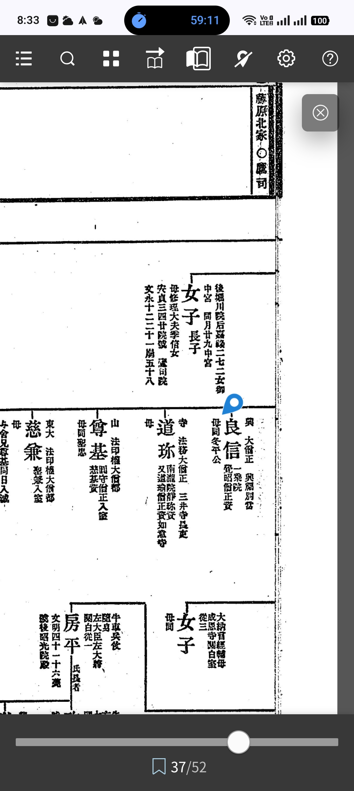
●橋本 フ六ノ一一實俊、四二實顕（新編纂図本朝尊卑分脈系譜雑類要集 第6巻 (故実叢書 ; 第3輯)、42項、国会図書館デジタルコレクション有り、出版者吉川弘文館書誌請求記号288.2-To388s）国会図書館へ

● →（皇后亮）宣孝→（左京大夫）隆光→（中宮潘 大進 左中）隆方→（参議 坊城大蔵卿 勧修寺）爲房→（長男）爲隆、次男（松室）實誉→（興福寺）覚實→（興福寺）覚覗 （46項、国会図書館デジタルコレクション有り、出版者出版年月日1903-1904吉川弘文館請求記号288.2-To388s書誌ID000000893848）国会図書館へ
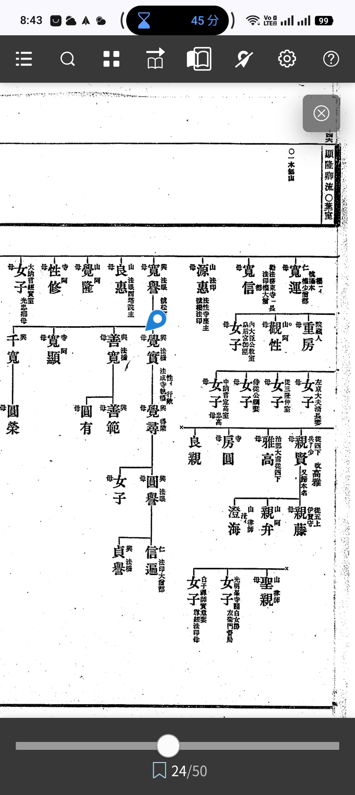
故実叢書 尊卑分脈（洞院公定）（25項、国会図書館請求記号請求記号192-55書誌ID000000430888）
国会図書館へ
故実叢書 尊卑分脈（洞院公定）（70項、国会図書館デジタルコレクション有り、請求記号192-55書誌ID000000430888）
●良信(一乗院,後発志院）：門跡伝（4項、国会図書館デジタルコレクション有り、請求記号HM91-15書誌ID000001374695）
国会図書館へ
●藤原北家鷹司 與大僧正 興福寺別當 良信（一乗院 覚昭僧正 正賓）（母 丹波夏基女冬平公）：新編纂図本朝尊卑分脈系譜雑類要集 第1巻 (故実叢書 ; 第3輯)（70項、国会図書館デジタルコレクション有り、請求記号288.2-To388s書誌ID000000893848）
国会図書館へ
●師實公流・飛鳥井→最勝院八幡・橋本龍雲（相國寺之住搶 還俗後裝琴材）：新編纂図本朝尊卑分脈系譜雑類要集 第6巻 (故実叢書 ; 第3輯)（101項、国会図書館デジタルコレクション有り、請求記号288.2-To388s書誌ID000000893848）
国会図書館へ
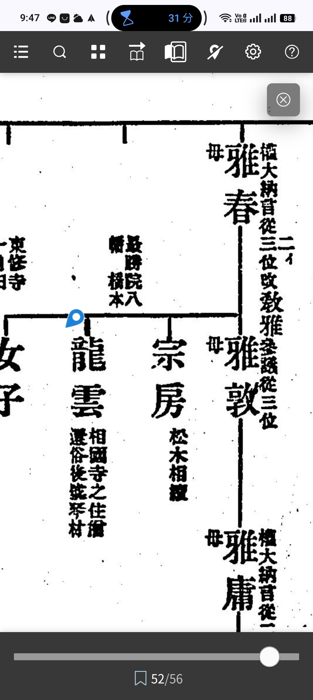
4門跡伝
門跡伝
（183項、国会図書館デジタルコレクション有り、請求記号HM91-15書誌ID000001374695）
国会図書館へ
良信（後発心院）記載。


覚實（号後発心院）記載。


大乗院門主の概略（系譜・慣行）
事実
大乗院成立期に隆禅が堂塔を建立（寛治元年＝1087年に関する記載あり）。
継承の主要人物列：隆禅 → 頼実 → 尋範 → 信円 → 実尊 → 円実 → 尋覚・尊信・慈信 等。
門主予定者は若年で門主の室に入る慣行があった。
鎌倉期の大乗院記録は断片的で、詳細は一部不明。
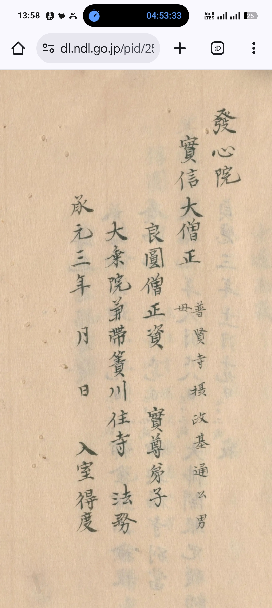
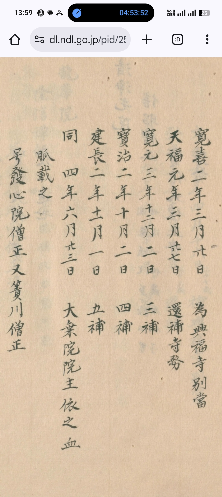
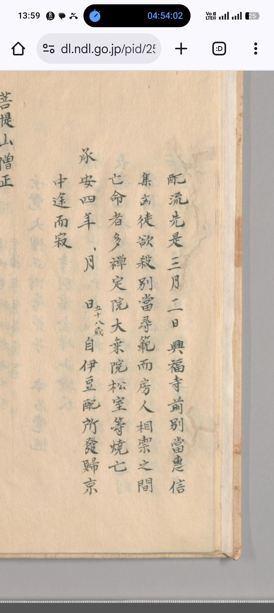
5人名・地名
人名・地名
大乗院寺社雑事記総索引（上巻）（223コマ、国会図書館デジタルコレクション有り、請求記号GB231-E1書誌ID000001910703）
国会図書館へより引用→
人名・地名（横田荘など）。
大乗院寺社雑事記総索引 上巻（人名編）（154コマなど、国会図書館デジタルコレクション有り、請求記号GB231-E1書誌ID000001910703）の引用より
●彦次郎は大和国横田荘の沙汰人であったとされる
（『大乗院寺社雑事記総索引 上巻（人名編）』による）
●大宮は伊勢国人であったとされる
（『大乗院寺社雑事記総索引 上巻（人名編）』による）
●大宮院は後嵯峨院中宮藤原嬉子で正応3年9月に亡くなったとされる
（『大乗院寺社雑事記総索引 上巻（人名編）』による）
●岡は一乗院家坊人や国民や郡司や大和国平田荘官であったとされる
（『大乗院寺社雑事記総索引 上巻（人名編）』による）
●岡部殿は大僧正や門跡や前僧正や禅師垣教や若君であったとされる
（『大乗院寺社雑事記総索引 上巻（人名編）』による）
●岡崎は十市代官や岸田被官であったとされる
（『大乗院寺社雑事記総索引 上巻（人名編）』による）
●岡部殿は大僧正や門跡や前僧正や禅師垣教や若君であったとされる
（『大乗院寺社雑事記総索引 上巻（人名編）』による）
●岡村は長谷寺であったとされる
（『大乗院寺社雑事記総索引 上巻（人名編）』による）
●岡本殿は近衛家平であったとされる
（『大乗院寺社雑事記総索引 上巻（人名編）』による）
●興田は十市被官や越智代官であったとされる
（『大乗院寺社雑事記総索引 上巻（人名編）』による）
●荻は実禅兄であったとされる
（『大乗院寺社雑事記総索引 上巻（人名編）』による）
●奥は極楽坊前坊主であったとされる
（『大乗院寺社雑事記総索引 上巻（人名編）』による）
●奥は新免住や新免田や石垣であったとされる
（『大乗院寺社雑事記総索引 上巻（人名編）』による）
●奥西は伊賀人であったとされる
（『大乗院寺社雑事記総索引 上巻（人名編）』による）
●奥林は山城国狛住であったとされる
（『大乗院寺社雑事記総索引 上巻（人名編）』による）
●奥坊は長谷寺住や実印であったとされる
（『大乗院寺社雑事記総索引 上巻（人名編）』による）
●桶井は古市被官であったとされる
（『大乗院寺社雑事記総索引 上巻（人名編）』による）
●大納言律師は兼親や孝祐であったとされる
（『大乗院寺社雑事記総索引 上巻（人名編）』による）
●順堯は実弘や発志院方であったとされる
（『大乗院寺社雑事記総索引 上巻（人名編）』による）
●桶井は古市被官であったとされる
（『大乗院寺社雑事記総索引 上巻（人名編）』による）
●訓専は春善房や西発志院であったとされる
（『大乗院寺社雑事記総索引 上巻（人名編）』による）
●大夫は発志院やハシノ院であったとされる
（『大乗院寺社雑事記総索引 上巻（人名編）』による）
●大夫寺主は人名の好実であったとされる
（『大乗院寺社雑事記総索引 上巻（人名編）』による）
●大夫太郎は神人であったとされる
（『大乗院寺社雑事記総索引 上巻（人名編）』による）
●大夫入道は西京火鉢作給主であったとされる
（『大乗院寺社雑事記総索引 上巻（人名編）』による）
●大菩提院はページ数のみ
（『大乗院寺社雑事記総索引 上巻（人名編）』による）
●太郎は御童子、東金堂童子であったとされる
（『大乗院寺社雑事記総索引 上巻（人名編）』による）
●太郎男は吉田法橋被官であったとされる
（『大乗院寺社雑事記総索引 上巻（人名編）』による）
●太郎三郎は己心寺下人や中在家であったとされる
（『大乗院寺社雑事記総索引 上巻（人名編）』による）
●太郎四郎は大和国苻坂油売であったとされる
（『大乗院寺社雑事記総索引 上巻（人名編）』による）
●太郎次郎は西御門居住であったとされる
（『大乗院寺社雑事記総索引 上巻（人名編）』による）
●太郎次郎は大和国辰市小延郷住人であったとされる
（『大乗院寺社雑事記総索引 上巻（人名編）』による）
●太郎丸はd左近次郎息で文明5年7月3日死亡e六丸孫や五郎次郎息や御童子や中院住f藤若息で明応8年6月9日死亡g郡使や大和国倉荘佃定使であったとされる
（『大乗院寺社雑事記総索引 上巻（人名編）』による）
●秦九郎は明応7年10月2日死亡で指田秦九郎信次であったとされる
（『大乗院寺社雑事記総索引 上巻（人名編）』による）
●藤五郎は中間であったとされる
（『大乗院寺社雑事記総索引 上巻（人名編）』による）
●藤左衛門尉清氏は越前国河口荘寺門使や神人やや杉若であったとされる
（『大乗院寺社雑事記総索引 上巻（人名編）』による）
●藤次郎は番匠や大工や中座や十市代官であったとされる
（『大乗院寺社雑事記総索引 上巻（人名編）』による）
●藤次郎大夫は宇治猿楽であったとされる
（『大乗院寺社雑事記総索引 上巻（人名編）』による）
●藤七は神人であったとされる
（『大乗院寺社雑事記総索引 上巻（人名編）』による）
●藤寿は古市息であったとされる
（『大乗院寺社雑事記総索引 上巻（人名編）』による）
●道円は大和国横田荘百姓であったとされる
（『大乗院寺社雑事記総索引 上巻（人名編）』による）
●道慶は足利義政の法名であったとされる
（『大乗院寺社雑事記総索引 上巻（人名編）』による）
●道英は宗円房子であったとされる
（『大乗院寺社雑事記総索引 上巻（人名編）』による）
●道珍は大和国横田荘百姓であったとされる
（『大乗院寺社雑事記総索引 上巻（人名編）』による）
●徳は奥発志院童であったとされる
（『大乗院寺社雑事記総索引 上巻（人名編）』による）
●二条良実は普光園院殿や行空であったとされる
（『大乗院寺社雑事記総索引 上巻（人名編）』による）
●二条良基は後普光園院摂政で元中5年6月13日死亡であったとされる
（『大乗院寺社雑事記総索引 上巻（人名編）』による）
●二宮は斯波被官であったとされる
（『大乗院寺社雑事記総索引 上巻（人名編）』による）
●二楽軒は人名で飛鳥井雅康であったとされる
（『大乗院寺社雑事記総索引 上巻（人名編）』による）
●仁和寺宮永助親王は応永年間活動であったとされる
（『大乗院寺社雑事記総索引 上巻（人名編）』による）
●西丹後公と西発志院と発心と発心院と西室大夫得業はページ数のみ記載されている
（『大乗院寺社雑事記総索引 上巻（人名編）』による）
●西室は東大寺や公恵や僧正や大僧正や東大寺別当であったとされる
（『大乗院寺社雑事記総索引 上巻（人名編）』による）
●西殿は人名で鷹司西殿や人名で円海であったとされる
（『大乗院寺社雑事記総索引 上巻（人名編）』による）
●西師順は御師であったとされる
（『大乗院寺社雑事記総索引 上巻（人名編）』による）
●日尊は南朝方や後醍醐天皇末であったとされる
（『大乗院寺社雑事記総索引 上巻（人名編）』による）
●発志院は小別当（少別当）や菩提山発志院や禅徒であったとされる
（『大乗院寺社雑事記総索引 上巻（人名編）』による）
●発志院は発心や発心院とも記載されていたとされる
（『大乗院寺社雑事記総索引 上巻（人名編）』による）
●堀は辰市住であったとされる
（『大乗院寺社雑事記総索引 上巻（人名編）』による）
●九条・九条頼嗣は摂家将軍であったとされる
（『大乗院寺社雑事記総索引 上巻（人名編）』による）
●実尊は松殿太閤や藤原基房や息や後菩提仙で嘉貞2年2月9日死亡であったとされる
（『大乗院寺社雑事記総索引 上巻（人名編）』による）
●実有は西発志院であったとされる
（『大乗院寺社雑事記総索引 上巻（人名編）』による）
●俊円は東北院僧正や清水寺僧正で文明16年5月13日死亡没であったとされる
（『大乗院寺社雑事記総索引 上巻（人名編）』による）
●彦次郎は大和国横田荘沙汰人であったとされる
（『大乗院寺社雑事記総索引 上巻（人名編）』による）
●好実は王寺大夫や寺主や一条院坊官や法橋や上座で文明19年5月4日死亡であったとされる
（『大乗院寺社雑事記総索引 上巻（人名編）』による）
●多田は京極であったとされる
（『大乗院寺社雑事記総索引 上巻（人名編）』による）
●泰祐は相模南院であったとされる
（『大乗院寺社雑事記総索引 上巻（人名編）』による）
●俊算は大安寺長老で文正2年2月死亡だったとされる
（『大乗院寺社雑事記総索引 上巻（人名編）』による）
●専円は縁識房であったとされる
（『大乗院寺社雑事記総索引 上巻（人名編）』による）
●丹後公・殿・丹後庄・円英は横田荘下司であったとされる
（『大乗院寺社雑事記総索引 上巻（人名編）』による）
●斯波高経道珍は大和国横田荘百姓であったとされる
（『大乗院寺社雑事記総索引 上巻（人名編）』による）
●円英は大和国横田荘百姓であったとされる
（『大乗院寺社雑事記総索引 上巻（人名編）』による）
●コウトノは横田荘であったとされる
（『大乗院寺社雑事記総索引 上巻（人名編）』による）
●助は横田荘百姓)であったとされる
（『大乗院寺社雑事記総索引 上巻（人名編）』による）
●せ井太郎は横田荘百姓であったとされる
（『大乗院寺社雑事記総索引 上巻（人名編）』による）
●左近は大和国田井荘間田百姓や済恩寺荘百姓や横田荘百姓や三条・権上座田百姓であったとされる
（『大乗院寺社雑事記総索引 上巻（人名編）』による）
●良信は一乗院や後発心院であったとされる（『大乗院寺社雑事記総索引 上巻（人名編）』による）
6小別当(少別当)と発志院
「一於福田院久世舞勸進始之、少別當發志院沙汰也」との記載により、福田院における久世舞勧進の開始に際し、少別当(小別当)である発志院がその沙汰(実務処理・管理)を担当したことを示す。少別当は興福寺・大乗院における役職の一つであり、発志院がこの職務を担っていたことは、発志院が単なる末寺ではなく、大乗院組織内で一定の管理的役割を果たす院家であったことを証明する。発志院が大乗院の組織内で「少別当」という公的な役職を担い、福田院関連の実務を統括していた事実を示す重要な一次史料。
大日本史料 第8編之11（1010項、国会図書館デジタルコレクション有り、出版年月日大正15請求記号GB22-7、
国会図書館のページへ）より引用→一於福田院久世舞勸進始之、少別當發志院沙汰也,
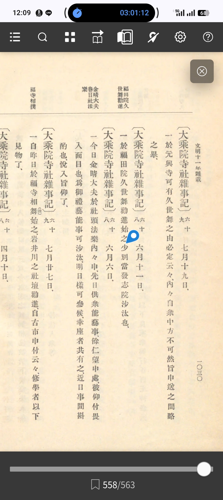
7実信(発心院)の記録
「承久元年講師權少僧都實信号発心院大僧正、或實川」との記載により、承久元年(1219年)に講師を務めた権少僧都実信が**「発心院」と号した**ことを明記。実信は近衛殿普賢寺基通公の息子であり、興福寺別当を務めた高位の僧侶。実信が「発心院」の号を持つことは、発心院(=発志院)が門跡級の高僧と深い関係を持つ院家であったことを示す。摂関家出身の実信が「発心院」と号したことにより、発心院(発志院)が公家・門跡と密接に結びついた格式ある院家であったことを証明する基礎史料。
實信
大乗院寺社雑事記 第6巻 尋尊大僧正記（232項、国会図書館デジタルコレクション有り、請求記号554-213書誌ID000000778530、国会図書館へより引用→
承久元年講師權少僧都實信号発心院大僧正、或實川
発志院が管理していた荘園が当初「橋院庄」と呼ばれ、後に横田荘と改称された経緯を詳述。「橋院」の名称が橋本家の由来と関連する可能性を示す重要な学術研究。
講座日本荘園史 7 (近畿地方の荘園 2)（153コマ、国会図書館デジタルコレクション有り、請求記号GB245-E5出版者吉川弘文館、
国会図書館へのリンク）より引用
横田荘の来歴と院家領化の経緯
『宇治拾遺物語』に登場する「蔵人得業恵印」と書いた札のいたずらは、おそらく発志院の恵印を指すものであろう。発志院の院主の地位は鎌倉初期において、当初「橋院庄」と呼ばれていた当荘を含む院家領諸荘とともに、恵印からある人物へ譲られ、さらにその人物から大乗院実尊（松殿基房の子）へ伝わった。実尊は大乗院・龍花院・禅定院のいわゆる三ヶ院に加え、法積院や発志院などの院主職を兼ねていたが、嘉禎二年（1236）三月十九日に没する（『春日社記録』）。発志院院主の地位は、実尊の弟子である円実（九条道家の子）に継承され、以後発志院院主は大乗院院主が兼帯する形となり、当荘は大乗院領へと組み込まれていった。やがて「橋院庄」の呼称は改められ、正式名称は横田荘となる。
嘉元四年の検注では、大乗院の院主職は円実から尊信（九条教実の子）へ、さらに尊信から慈信（一条実経の子）へと受け継がれていった。正安元年（一三〇一）八月、慈信の弟子で大乗院の後継者である尋覚（一条家経の子、慈信の甥）が維摩会の講師を務める際、その費用捻出のために大乗院領諸荘に反別五十文の反銭が課された。このときの荘々注文には当荘について「横田〓、廿三丁一反」と記されており（「文保元年七月日維摩会御講師間細々引付」）、当荘に課された門跡反銭の賦課田数が確認できるが、それ以外の詳細は不明である。
嘉元四年以降の検注と基本台帳の成立
当荘についてより詳しい記録が明らかになるのは数年後のことである。嘉元四年（＝徳治元年、一三〇六）から翌徳治二年にかけて、慈信は大乗院の末寺である菩提山正願院の承仕である印専・頼因に当荘および隣接する若槻荘の検注を命じた。辺郡の勾田荘でも徳治二年に検注が行われているが、勾田荘は本来正願院領であるため、これも印専・頼因による検注であったと考えられる。ともあれ、嘉元四年から翌年にかけての検注の結果、後年「本帳」と呼ばれる当荘の基本的な台帳が作成され、支配と収取の体制が確立された。
検注取帳の作業は嘉元四年十二月一日に始まり、条里制の坪の順序に従って当荘の西北から調査が行われた。取帳には耕地ごとにまず田か畠かが記され、続いて面積、坪内での位置、耕地の所有者名、もし給田に指定されている田畠であればその旨が書き留められている。用排水路である「溝」を含む田畠についてはその分が控除され、負所田には負所名が記載された。実際には田であるのに畠と記される例もあるが、取帳は当時の耕地の状況や所有関係をほぼ忠実に反映した記録と評価できる。
所有構成と荘民の分布
取帳を所有者別に集計・整理した結果（表1参照）によれば、当荘の田畠は四十八人によって所有されている。最大の所有者は末弘で、約三町二反余りの田畠を有し、最小は正道ら三人で九十歩を所有している。平均すると一人当たり約六反である。四十八人のうち、備考欄に○印を付した盛然ら六人は北隣の若槻荘にも耕地を持ち、その多くは若槻荘の荘民と見なされる。また△印を付した者たち（番条四郎・番条七郎など）は名前から西の番条荘の、箕田一郎は東隣の箕田荘の荘民であったと推定される。したがって、取帳に記された横田荘の実際の荘民数は約四十人と考えられる。
土帳と景観の復元
取帳と並んで、荘全体を俯瞰するための土帳が作成された。土帳は縦横に線を引いて条里制の坪を示し、坪内の地割りを簡潔に素描した絵図であり、これにより当荘の全体像を鳥瞰できる。取帳・土帳を基に、1974年当時の現況を考慮して当荘の景観を復元したものが図1である。以下では、これらの諸帳を提示しつつ当荘の構造を概観していく。
9橋之院衛門九郎と大夫
明応六年(1497)の横田荘年貢米記録に、**「橋之院(ハシノ㐄ン)衛門九郎」「橋之院大夫」「橋之院七郎」**という複数の人物が記載され、発志院関係者が現地で年貢管理の実務を担っていた決定的証拠。
大乗院寺社雑事記 第11巻（明応六年）（123項、国会図書館デジタルコレクション有り、請求記号210.46-D18-T書誌ID000001062235）
国会図書館へ
より引用→廿九日
一屏風二双帳事専祐仰付之、
一人夫南方辰巳土上之・
一屏風二双ノ(タ直帳之、障子紙二東之内十二、 ・帖・障子六帖式タナフシ、
合四東二帖也、
一横田庄公方御米未進躰沙汰人注進之・給主取
進之、去年辰分、
一石五斗一升八合 タンコトノ
二石八斗二升七合 ミタトノ
四斗五升四合 コウトノ
二石八斗 （ヨシオカ）チフ
五斗五升四合 （ハシノ㐄ン）衛門九郎
合九石一斗九升五合 （ハシノ㐄ン）大夫
二斗二升六合 ハシノ㐄ン七郎
四斗六合（ナカンシヤリ）四郎
4石六斗沙汰仕分
合九石一斗九升五合
四石六斗沙汰仕分
二月廿五日 サタ人
以上利分一石三斗二升
都合十二石七斗二升
10橋本屋敷焼失記録
永禄十年(1567)の戦乱で**「橋本屋敷」**が焼失した記録。16世紀中葉に奈良の地に橋本という屋敷が実在した物的証拠。
永禄十年橋本屋敷焼失。
多聞院日記 第2巻（22項、国会図書館デジタルコレクション有り、請求記号210.48-E38t-T書誌ID000000723487）
国会図書館へより引用→
永禄十年七月
八日、今日迄一七日塩斷了、日中飯ニ妙德院衆各申入了、
一從小坂按西モトコ一桶來了、
一城戶禪門ヨリ鈴一對・茄子・枝マメ、福善ヨリ麻瓜十來了、
一古市方多聞山〈重歸了、付之發心院へ新發意儀付、從三人衆申事在之、映止ここ、
九日、成身院ョリ醬誂之間、二日ヨリ子サセ、今日可入之通申付了、麥一斗・塩三升・マメ三升、破木三束來了、水ハ八升入了、
一七晝夜今曉卯剋迄也、結願了、
十一日、退出了、古市鄉燒拂了、孫來、翌日歸了、
十日、广界廻向、社參了、大乗院家之內安藝父死去ニ付、香典雖遣之被返了、藤六被上了、
十一日、退出了、古市鄉燒拂了、孫來、翌日歸了、
十二日、來五日貞乘房律師母儀卅三年之間、千部經此間執行供養、爲追善講問事願春房被申來了、安養報起にて可沙汰之通申遣之、
一ソキ十四束好社頑松屋へ預ヶ了、此內四束八月八日、取了、
一角振与四郎より蓮之根來之間三学院へ遣之、
一安養報起抄近・古十四帖明禪房二借之了、
一十疋大木子息多聞へ等春=遣了、引違也、若先
一天下一与三郎へ二百六十文未下ノ内百六十文且遣之、ノコリ百文井四十文ノソトノ代、合百四十文未下也、
一下部二人へ十疋ツ、下行、八郎・禪門へ十疋ツ百四十文未下也、、遣之、
一大豆八斗弥七所へ預ヶ了、
十三日、刁剋之始より卯半迄、今御門・餅飯殿・橋本・角振小西大略燒了、多聞衆より放火云、淺猿爲躰也、
一成身院謎之醬出來間遣了、
一惟共道不通之間、是ニテ洗濯了、
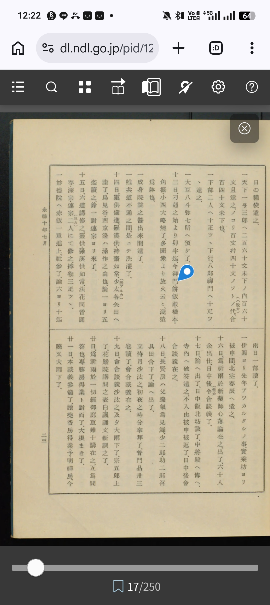
11西ハシノキン
元亀三年(1572)に**「西ハシノキン(西橋之院)」**の信読が所沙汰を担当。表記揺れ(ハシノキン=橋之院=発志院)を確認できる重要史料。
多聞院日記 第2巻(巻12-巻23)（307項、国会図書館デジタルコレクション有り、請求記号640-324書誌ID000000723487）
国会図書館へ
640-324
元亀三年十二月五日、西ハシノキン信讀依所沙汰之從早旦出了、雨下了、
一、專識房悅酒ノ麵百五十把取上了、代一貫五百文、錢ノ二百文目ツ、在之、源五郎持上了、
六日、觀禪院二五師設在之、不出、
七日、成身院・妙德院・妙音院・知足坊三學院來談、及晚被歸了、
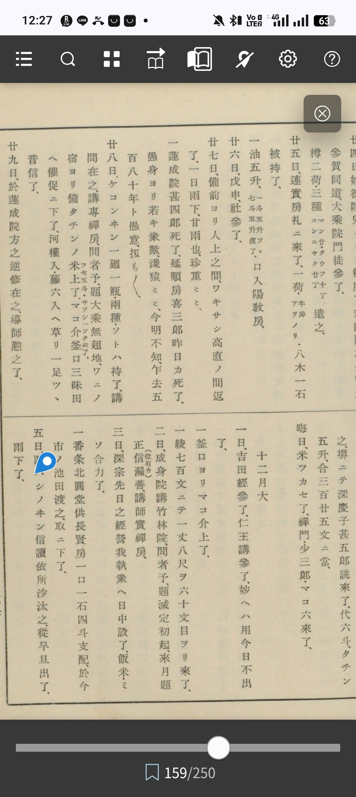
12ハシノヰン修正沙汰
天正六年(1578)、**「ハシノヰン」**が正月法会の修正沙汰(実務運営)を担当。発志院が大乗院の重要法会を運営する実務能力を持つ院家であった証拠。
多聞院日記 第3巻（3項、国会図書館デジタルコレクション有り、請求記号210.48-E38t-Tk書誌ID000000871371）
国会図書館へ
天正六年正月十八日、大御堂修正出了、上七人也、專敎房、迄御出了、餅卅枚在之、
一於大乘院轉讀大般若經在之、出了、六十人余被出了、
一日中後爲母儀大政所御見廻御上洛了、銀四枚渡了、
一ハシノキン修正沙汰之、餅八十枚被送之十五枚支配在之、
午ノ日也、大導師沙汰之、三百文、フセ代六斗送之、出仕二斗ッ、在之、觀普繪像寶藏院ニテカル、餅五遣之、木像南井坊ニ借之、堯蘭上了、
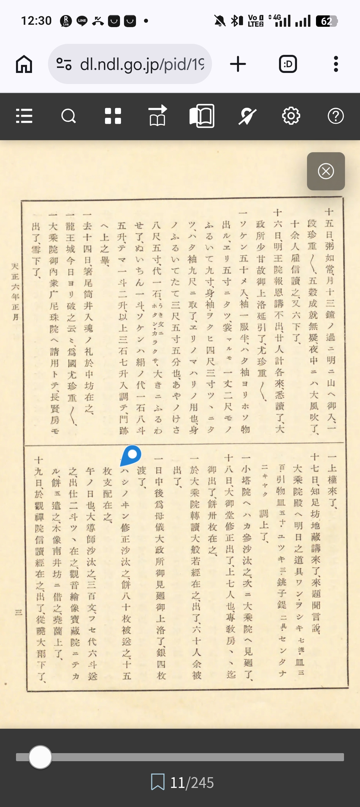
13橋院信長
文永十二年(1275)の春日社御遷座に**「橋院信長房」**が得業として参加し、重要神事の中心的役割を担った記録。橋院が春日社の神事にも関与する格式ある院家であった証明。
春日社記録 [第1] 第2（284項、国会図書館デジタルコレクション有り、請求記号175.965-Ka558k書誌ID000000880843）
国会図書館へ
文永十二年五月
二〇中臣祐賢記
五月十四日 神主泰道
神主泰道
追申
若宮神主殿同可令存知給候、謹言、
一今日十五日、了賢房五師榮俊、爲寺家御使關東へ立畢、爲御使下向成五師了云々、
一同日、神主泰道蒙寺之御免畢、寺家へ歎申故云々、但集會、未事切也、
一今夕酉剋、自衆徒被命云、今夜亥剋、御遷座可爲必定之由在之、
御遷座次第、亥剋、
大眾參社、自六道止貝了、於南門如例三度同ス、舞殿ノ自東第三間ョリ僉儀在橋院信長房得業藝文兩惣官隨召テ勸寄庭中、祐賢、住吉明神邊二祗候、庭中二松明無之、遠例、社家所役欤之由眾命粗雖有之、先例不候之由令申間、中網羅出テ二行取之、僉儀終之後、社司參御前、自脇戶參御寶蔵、奉出御神寶之事正預祐繼、役送權官祐良、神寶者自南面廻テ持參御前、吐司、自脇戶參御前、其後、常住神殿守春明申祝、例座也、其後、神主泰道東帶、奉下御正躰、雄,御榊、神殿守等御橋ノ下二持立、處ニ奉侍御正肺之、二御殿正預祐繼東帶、三御殿權神主經世衣冠、四御殿權預祐家衣冠、每殿同前、御榊者葉ヲコイチ廣四手ヲ懸之、大社奉下之時へ、若宮御神寶御蔵ノ前二持立也、自一御殿次第二神寶各先立天出樓門入御移殿、御神寶各二行、御鉾左・御弓矢右、入御移殿、御神寶等役送近代有沙汰、氏人參勤之處、神人直二社司二渡之、逮例欤、祐賢中間二參入シテ、雖令申子細、無沙汰也、其後自東之簾比、各出テ、比裏へ廻テ、若宮神竇ヲ先立テ、廻廊之內ヲ南門へ出テ、若宮へ參、社司拜屋二祗候、祐賢者參入御内、神殿守春任申祝例座也、其後、祐賢御橋ノンヒへ參シテ、覆面ヲ垂之、奉下御肺、御棚ヲハ兼テョリ退了、春任持參御神之處、奉付御正躰了、其後、祐賢奉請取、奉渡移殿也、出南門ヲ、八講屋・舞殿作會ヲ御行アリ、二行-松明在之、兩惣官沙汰也、神人所役所從等、自南門西へ廻也、移殿,比ノ東向/簾ョリ入御、如大社奉祝畢、御神寶役送氏人祐春勤仕、其後、社司等住吉明神邊ニテ以常住神殿守等幹胺、大明神令奉下候了之由、中綱、申觸了、其後閑二可有退出之由、聊僉儀在之、先例也、其後退出了、移殿入御以前三守安中臣破勤仕也云々、若宮二八無其例也、「兩方ヲ策欤」、
（春日社記録 [第1] 第2（248項、国会図書館デジタルコレクション有り、請求記号175.965-Ka558k書誌ID000000880843）
国会図書館へ
14ハシノヰン石灯籠
慶長三年(1598)に**「ハシノヰン(橋之院)」**の名を冠する人々が春日社へ石灯籠を奉納した金石文。物的証拠として現存。
慶長三年石燈刻銘。
春日神社金石銘表（68項、国会図書館デジタルコレクション有り、請求記号：511-120書誌ID000000585569）
国会図書館へ
種別 石燈
場所 青龍瀧附近
刻銘 ハシノヰンサコ サコ マコロク
春日社奉寄進心願成就處 各々敬白
エモン〇〇 エモニノ サエモンスケ ヨシ〇〇
スケニノ サエモン 〇〇 〇〇 スケ〇七
春日形 高七尺四寸
1598年
慶長三年十二月吉日
15橋本藤一伝記
幕末の勤王志士・橋本藤一（橋本家の養子、二階堂流藤原氏出身（中條氏））の伝記。橋本家が奈良奉行与力という士族身分を世襲し、飛鳥井家の弁護により救済された事実を記録。藤原氏を姓とし、宝蔵院流槍術を伝承した橋本家の近世から近代への連続性を証明する重要史料。
大和人物志（1909年出版）（715項、国会図書館デジタルコレクション有り、請求記号281.65-N636y書誌ID000000926898）
国会図書館へより引用→「橋本藤一」
橋本藤一は職を奈良町奉行與力に添じ、廣く奪王の志士と交を結びたる人なら。晩に、 天性災道にして武を好み、特に槍法に至りては寶藏院流の奥義を極ひ。交國典に通じて和歌を嗜み、仲林光平に従つて研鑽する所深し。勤王様炎の設器々たるに及び、奈良に劍客三上力之輔と解する志士あり、慷慨にして義を好み、密に援炎の同志を募り、以て爲すあらんとす。藤一これと変り、終にその連判悲に署名す。後半登れて力之輔は獄に下り、藤一坐せられて閉門せられ、京都所司代會津伏の取調べを受け、百方辯解すれども、嫌疑を解くに由なく、幽酵謹慎すること四年。ある厳
くもの巣もほこりもとらぬ疑が家の、
長閑き春になるをこそ
と詠じたり、意を當世に寓せること味ふべし。後、遂に飛鳥井家の辯護によりて街天白日の身となるを得たり。明治戊辰の綾に、十津川の志士吉田正義の事に関しくもの巣もほこりもとらぬ疑が家の、長閑き春になるをこそ尋て鎮撫總督府に召され、王政維新の後は奈良縣少局となり、企갉周到、良近の譽ありき。後、職を僻して手向山神社綱窓となり、明治十九年十一月五日病みて破す、 年六十五。墓は白花寺にあり。その碑文に曰く、
君名政孝、宇子友、帶川其號通稱藤一、二階堂中條肥次之長男、後於橋本政方式制其家姓藤原、本氏二階堂、世居相模後移紀伊橋本因氏、八世祖政長、天和三年辟奈良來行部下與力子孫襲其職途爲和州奈良人君既制家簿書訟獄莫不適宜退、戊辰變革十津川吉田俊男首唱斧王大義與君及中條正心周旋其則而不至煩王師者、君之力居多、尋辟鎮撫總督府後任奈良縣少愿明治四年歸田其後爲手向山神社祠掌補訓導君聽訟最盡其情置事周密、至槍法火器之術悉得其神傳又嗜國詩及北畫旁通猿樂之技君以文政五年十月十五日生、明治十九年十一月五日以病殁享年六十有五、葬于奈良東南白毫寺村先榮之次配山下氏舉二男先死、繼配其妹長男平三承家、
西京鹰士春日仲淵撰並書
傍にその歌を刻せり。
初秋虫.
秋風の際だきかね荻の上に、
露ばかりなる虫の音ぞする。
16
嘉元四年(1306年)の横田荘における検注目録帳。総計43町9反280歩の荒熟田畠を記録し、地頭分・寺社敷地・神楽田・修理田などの除地を詳細に記載。最終的に23町8反197歩の定残田畠が確認され、名田18町2反174歩から米99石9升7合6勺が分米として徴収されたことを示す。橋院荘(後の横田荘)が大乗院門跡領として体系的に管理されていた実態を証明する一次史料。横田荘(発志院領)の中世における土地所有・管理体制を示す基礎台帳として、橋本家が関与した発志院領の歴史的背景を裏付ける。
嘉元四年横田庄検地。
鎌倉遺文 嘉元四年十二月（42コマ、国会図書館デジタルコレクション有り、請求記号GB271-9書誌ID000001861478）
国会図書館へより引用
二二八〇五 大和橫田莊檢注目錄帳 （廣島大學藏猪熊文書）
(橫田莊國記入)
横田庄
注進嘉元四年田畠檢注目錄井名寄事
合荒熟田畠肆拾三町九反二百八十步
除十三町一反百五十三步
号地頭分七町四反
四丁七反二百四十卜
堤八反二百卅卜
道三十二卜 溝一反十一卜
殘見作田畠三十丁八反百廿七卜
尙除六丁九反二百九十卜
寺社敷地二反
八王子每月御神樂田一反
同社九月九日祭田一反
正福寺修理田二反
發志院莊嚴田一反
同承仕田 二反
禪定院御所院仕田二反
井新田 一反
百姓十名屋敷一町
鐵事給 五反
□五反
□五反
□一町一反
□五反
□實給五反二百九十卜
預所給一丁
定殘田畠廿三丁八反百九十七卜
畠四丁五十六步 加紅花畠四反定
分米十五石六斗二合七与
名田十八丁二反百七十四卜
分米九十九石九升七合六与
浮免田一丁五反三百廿七卜
17
大乗院門主の継承に摂関家(九条家・一条家)が深く関与した経緯を詳述。尋範以降、摂関家子弟が門主を継承する慣行が確立。第六代円実(九条道家の子)の勅勘・配流の記録、永仁年間(1293年頃)の南都闘乱期における尋覚の門主就任、弘安六年の尊信入滅後の慈信による門跡継承などを記録。大乗院成立期の隆禅による堂塔建立(寛治元年=1087年)から、門主予定者が若年で門主の室に入る慣行まで、鎌倉期の大乗院の組織運営を包括的に解明。大乗院門跡と摂関家の密接な関係を示し、橋本家が関係した一乗院門跡系統の理解に不可欠な研究資料。
大乗院門主の継承に摂関家(九条家・一条家)が深く関与した経緯を詳述。尋範以降、摂関家子弟が門主を継承する慣行が確立。第六代円実(九条道家の子)の勅勘・配流の記録、永仁年間(1293年頃)の南都闘乱期における尋覚の門主就任、弘安六年の尊信入滅後の慈信による門跡継承などを記録。大乗院成立期の隆禅による堂塔建立(寛治元年=1087年)から、門主予定者が若年で門主の室に入る慣行まで、鎌倉期の大乗院の組織運営を包括的に解明。大乗院門跡と摂関家の密接な関係を示し、橋本家が関係した一乗院門跡系統の理解に不可欠な研究資料。
大乗院門主と寺院史の研究資料（106項、国会図書館デジタルコレクション有り、請求記号HM121-E60書誌ID000002728535）
国会図書館へ
事実
門主変遷。
研究資料アーカイブ：大乗院門主の変遷と中世寺院史
牡丹と藤 第3巻 第一節（鎌倉末期の大乗院門主をめぐる争い）（106項など、国会図書館デジタルコレクション有り、請求記号HM121-E60書誌ID000002728535）
大乗院門主の継承に関与した有力家：摂関家、九条家、一条家。
尋範以降に摂関家子弟が門主を継承した。
円実（第六代）：九条道家の子。建長四年（1252）に勅勘を受け、建長七年（1255）に勅勘解除、文永元年（1264）に衆勘を受け、文永三年（1266）に配流、文永九年（1272）に没。
尋覚：永仁年間（1293頃の南都闘乱期）に大乗院門主の地位をとった。
慈信：文永二年に入室し、弘安六年の尊信入滅後に門跡を継承したとされる。
大乗院門主の概略（系譜・慣行）
事実
大乗院成立期に隆禅が堂塔を建立（寛治元年＝1087年に関する記載あり）。
継承の主要人物列：隆禅 → 頼実 → 尋範 → 信円 → 実尊 → 円実 → 尋覚・尊信・慈信 等。
門主予定者は若年で門主の室に入る慣行があった。
鎌倉期の大乗院記録は断片的で、詳細は一部不明。
18
維摩会などの法会における竪義・講師制度の実態を分析。摂関家など貴種・良家の子弟が寺院に入寺し、若年で竪義や講師に就任する事例を詳述。貴種子弟の優遇により維摩会の運営が形式化・世俗化したとする分析を提示。興福寺には多数の院家(寺内・寺外)が存在し、院主には良家出身者が多かったことを明らかにする。興福寺門跡における貴族子弟の入寺制度と院家組織の実態を解明し、橋本家が関係した門跡系統の社会的位置づけを理解する上で重要な分析を提供
中世寺院史の研究 下（224項など、国会図書館デジタルコレクション有り、請求記号HM111-E18書誌ID000001928839）
国会図書館へ
維摩会制度。
中世寺院史の研究 下（維摩会・貴種入寺の影響）
事実
維摩会などの法会における竪義・講師制度が存在した。
摂関家など貴種・良家の子弟が寺院に入寺し、若年で竪義や講師に就く例があった。
貴種子弟の優遇により、維摩会の運営が形式化・世俗化したとする分析がある。
興福寺には多数の院家（寺内・寺外）が存在し、院主には良家出身者が多かった。
19
天文十二年から天保三年にわたる発志院村の文書群を収録。「正保四年 往古代庄屋 九郎兵衛殿、弐百八拾三年ニ成」との記載により、283年間にわたる庄屋職の連続性を示す。寛永期の観音堂建立、庄屋(九郎兵衛等)の在任・交替、検地帳・庄納帳の反別・収入・請取人名などを詳細に記録。興福寺領の現地管理・年貢・検地の実務記録を含む一次史料として、橋本家の先祖が橋本の傍系である可能性を示唆。興福寺領発志院における近世の村落支配と年貢管理の実態を示し、橋本家と越智家の関係、および発志院における在地支配層の連続性を検証する上で重要
越智太兵衛伝（橋本兵作が年寄として記載されている）
発志院文書目録。
越智太兵衛伝（7項など、国会図書館デジタルコレクション有り、請求記号GK117-10書誌ID000001220093）
国会図書館へ
九・村方文書・大乗院文書目録（発志院関連、越智太兵衛の先祖は橋本の傍系か）
事実
文書群に記載される年次例：天文十二年、寛永年間、天保三年までの記載等。
文書内に「283年」として残る年次表記がある（「正保四年 往古代庄屋 九郎兵衛殿、弐百八拾三年ニ成、此庄屋代、相替不申、夫る先ハ相知レ不申い也、一、九郎兵衛跡慶安承応三年迄、六七ヶ年之間当村庄屋 」とある）。
記載事項の例：寛永期の観音堂建立、庄屋（九郎兵衛等）の在任・交替、検地帳・庄納帳の反別・収入・請取人名の記載。
これらは興福寺領の現地管理・年貢・検地の実務記録を含む一次史料である。
20大和志料 上巻(橋之坊・正暦寺記述)
元禄五年(1692年)「寺社改之帳」に基づく菩提山正暦寺の詳細記録。寺領三百石、開基は一条院勅願寺として正暦年中に創建、開山は金俊(信正・法輿院・摂政殿下遺子)。伽藍として本堂(薬師如来)、灌頂堂(大日如来)、地蔵堂、如法経堂、鐘楼、施餓鬼堂、宝蔵を列挙。神社として春日大明神(鎮守)、六所明神、峯弁財天を記載。寺家として院家の報恩院を筆頭に、橋之院を含む83株の坊院を列記。うち40余坊のみが元禄期に存続。報恩院は一度無住となり京都仁和寺の塔中菩提院家が兼帯、維新後は仁和寺を本寺とした経緯を記録。正暦寺における橋之院の存在を明記し、橋本家と橋之院(発志院)の関連性を示唆する重要史料として、元禄期の寺院組織と院家制度の実態を知る上で不可欠。
大和志料 上巻、橋之坊について
正暦寺記述。
大和志料 上巻 改訂（438項、国会図書館デジタルコレクション有り、請求記号：348-226イ書誌ID000000704075 ）
国会図書館へ
／ 元禄五年 寺社改之帳
菩提山
六月廿一日
正暦寺 覺
○真言一宗
一、御朱院寺領三百石和州添上郡菩提山正曆寺
一、開基一條院勅願寺正曆年中之御草創開山者金俊信正法與院攝政殿下遺子也
○伽藍
一本堂本尊 藥師如來（龍樹菩薩所作善無畏三三蔵之御將来）
一灌頂堂本 尊大日如來
一地蔵堂 千體佛
一如法経堂 每日三時不退御祈禱
一鐘樓 一宇
一施餓鬼堂 本尊阿彌陀如來
一寶藏 一宇
○神社
一鎮守一社 春日大明神
○末社 土公神、善女龍王、牛頭天王辦財天閼、伽井明神、石荒神
一六所明神 末社 新宮
一峯辨財天 一社天新
○寺家
院家 報恩院
●大福院 ●福壽院 ●金藏院 ●寶藏院 ●成身院 ●靈山院 ●經藏院 ●迎接院 ●多聞院 ●光幢院 ●蓮花院 ●興善院 ●西福院 ●德藏院 ●明王院 ●橋之院 ●北之坊 ●吉祥院 ●東遍照院 ●地藏院 ●中之坊 杉本坊 ●杉本坊 岩之坊 金剛院 前之院 竹林坊 梅之坊 藤之坊 谷之坊 角之院 轉經院 寶幢院 多樂院 金剛幛院 光蓮院 一心院 花藏院 實相院 東之坊 浦之坊 椿之坊 ●奥之坊 南之坊 觀音院 小坂坊 新坊 櫻之坊 東橋之坊
寺數合八十三株
右菩提山者中古年久不知行仁罷成候處大權現樣慶長七年壬寅之年御黑印頂戴寺領三百石被爲下置候右之坊跡ニ寺領割付只今至無懈怠尤祈禱之寺役等相勤申候
以上
元祿五年壬申六月二十一日
菩提山 年預 沙汰人
御奉行所 沙汰
ト以テ當時ノ狀況ヲ見ルへシ、但寺家八十三、全ク株數ヲ記セルモノニラ、元藤ノ頃、黒點ヲ付スル四十餘坊ノミナリ、面シテ報恩院一タヒ無住トナリショリ、京師仁和寺ノ塔中菩提院家ョッ之ヲ兼帯セシヲ以テ彼ノ院ヲ本寺トナセシカ維新後更三仁和寺ヲ本寺卜ナス近年衰頹シ復舊觀ヲ存セス、
本稿旣ニ成り、將二淨書セントスルニ臨ミ、寺僧大原秀全一卷,記錄ヲ袖ニシ來リ日フ、此書、近時新二發見スル所ノモノナリ、幸=取ルヘキアラハ之ヲ取メョト、受クテ之ヲ展スアニ應永ノ緣起、古文書,寫本ニシテ、共=本稿ノ闘ヲ補フニ足ルヘキモノナレ、左ニ之ヲ掲載ス。
菩提山正曆寺原記
21三箇院家抄・諸庄薗等記録
大発志院の荘園記録
総田畠43町9反280歩という具体的な規模
御米43石8斗の年貢徴収
名田18町2反174歩から分米99石9升7合6勺
**「発志院荘厳田1反」**という発志院固有の田地の存在
横田庄の境界記録
「東へ箕田領ヲカキル、南ハ寺、八中庄一乗院番条大乗院ヲカキル、北ハ吉岡庄一乗院若槻庄大乗院ヲカキル者也」という詳細な境界記述により、横田庄(発志院領)の地理的位置が明確化。
村方文書の重要性
近世の発志院村における庄屋制度、給米論争、用水権など、興福寺一乗院門跡支配下での村落運営の実態を示す文書群。特に「春日灯籠田」という抜地が庄屋給米として機能していた記録は、発志院と春日社の密接な関係を裏付けます。
史料的価値
**「大発志院」**として独立した荘園台帳が作成されていたことは、発志院が単なる末寺ではなく、固有の荘園領を持ち、年貢米の徴収・管理を行う実質的な院家領であったことの決定的証拠です。
大和郡山市史 資料集（117項、国会図書館デジタルコレクション有り、出版年月日1966請求記号216.5-Y539y、
国会図書館へリンク）より引用→
「諸庄薗等」
三 箇 院 家 抄 第 二
新木庄 八幡社九月六日神事楊本庄 天満社八月十日神事
(カ) 出雲庄 長福寺
倉 庄 社八月十三日神事高田庄 社九月十四日神事か
羽津里井庄 ネ土八月十廿九日日 廿一日神事
(花 押)
新木庄給主号預所 田数事
三丁一反 水田反銭半分定 一貫五百五十文畠 不を反銭分米 合廿五石七斗五升此内定引物一一石六斗五升定使給一一石
三ケ井殿庄十市方近来取納分百一一十石請切百姓沙汰云々十二 中井殿庄下司大進法橋
町三反三百歩除畠屋敷定歟
二十石御米 此内三升六合延 惣米卅一石九斗一升三合
庄立用一石七斗一一升十三石三斗三升四合 楢原或二十石也
六石六斗六升六合 舜専房
以上或二十九石七斗余之由見目六
一石二斗前節米御後見三石七斗一升五合 反米此内半分百姓
東井殿庄 三名竜花院
十六丁九十歩
一石一一斗前節米御後見 四石八斗七合五勺、反米
此内半分百
十四西井殿庄進官三也 大進法橋相承
「 花院済恩寺領一寄進大乗院
十一町三反半惣八十三丁四反小三斗代 六石九斗正願院負所二町三反本器
島飼次郎請文在之
四反地子六斗一斗五升代 本器
一石二斗前節米御後見 三石四斗五合 反米此内半分百姓
三反瑜伽論田 十一丁余外也 一反堂敷地畠等十一丁余外也
五反御室領 二丁三反近衛殿御領一反大新井庄同 三反私領分
三ケ井殿=竜花院方本供等在之
十八 院家
八名 庄器一石(金代 一石一斗二升七合延若槻庄 十合市器ニ(庄家ノ一石一斗一升也一町五反二百四十歩
十九町八反二百九十四歩名田 三丁六反九十五歩畠屋敷名分米言一一十一丁=一反田」 仍反米一一一石一一口毎年引之
十一石八 升下
牙八石四斗八升中綱給一丁分米
四斗西願下司子息殺害西纛
合四十七石五斗五升残百十六石四斗三升内
頭注丷文明十年十一年十一月龟松二一丁丿反鈸引之
豁西願之
不可然之由仰之 物0御米内也 切米也 各别二不可有
鳥見福西二石五斗宗順寺三石 幸德井
十五石小泉一石 德市五石 因幡寺主二石五斗舜專房
十石師法師堯順一一給之
一石 德陣吉善分
八石九斗專長房慶藤丸：給之十石 尾張公上綣寺主
三石 堯懟房
四石五斗御米堯井順坊躑一一給分之一石大盤仕丁合百十石三石明教房 五石六斗 教院
三石一一斗反米当廿歟一丁三反二 一石沙汰人七斗力。
二斗四升庄立用 三石三斗大僧供應三安。年元帳一度
定米也 十石 御米此內五石慶虅丸ニ
反銭百文貫米此外百姓分
応永十年反銭算用二配分之、自文明八年
反銭百文 七貫五百ノ代米此外百姓分 応年十年反銭算用ニ
四丁三反下司方
一丁匕反大般若方
一丁七反公文方
二丁四反畠
一丁五反 屋敷
四反鎮守
一丁河成
四丁一反六十歩給主
十六丁半 下百姓
四町二反 給主田
三町 伝教院供田修理田等 二丁勅使田
一町 春日大般若御寄進田 五反牛飼田
三反定使田
六反八十五步堂宮地
一町下司田
一町公文田
三反 発志院横田領
大宅寺負所田 但諸負所米ハ名田主田以下ニ懸之、別無之五丁五反三百歩云々イ
分米十六石一斗九升五合 二斗九升代八合外定長禄三年十月日百姓等注進(五町反別四斗背本帳了五反 御牛飼給田
大宅寺負所米以下成物事
合五町八反三百歩之內三反下司給
御米廿石六斗五升除反右別近三池斗代七升反代別一一八一升合定斗
員口米二石四斗一一升八合六勺石别一斗三升定反米一石六斗七升五合反别三升定使料五斗五升八合五勺反别一升定
已上二十五石三斗一升二合一勺
大豆一一斗三升三合四勺代皇米一反一斗六七十升步九合反别五勺二斗代八合斗
恢田作事等
三斗三升五合三勺 白米二斗七升九合三勺分反别五合五斗五升八合五勺 黑米反别一升
五斗五升八合五勺 秣御菜等代反别一升定以上一石六斗三升一合八勺加大豆代米定
都合二十六石九斗四升三合九勺
延定三十石九斗八升五合四勺八才
歲末薪町别二肽
此内下行 正願院方
三石六斗仫供料日别一升 十石八斗供僧三口
口别三石六斗
三石六斗承仕 以上十八石院家器定
残米
十二石九斗八升五合四勺八才建。烫五年帳也
諸公事等
西願十四石四斗内彐丿為上分可沙汰也 一庄名主
二貫文 西願名請口善視房給 二貫炭代
堂 貫同公事钱近来三百文沙汰云々
力只
瓜百二十合折名代主役一一百文七百本六五百十歟果子米四石下司役
預所得分也、無旱損者也
一負所米者大宅寺分·二階堂分．．右近分．
一品位分·無主位分
各名田·給主田·諸職田以下一一懸之、注文在别
一寬正一一年巳注進百十六石余田皇十五丁九反
八反切半当時名主十余人、自此内出負所米等事、
十三石六斗大宅 三石九斗六升右近 一石八斗一品
四石一一階堂 七石三斗名丿右近 六斗勸学院 二斗四升無主院此外詣公事反米反鈸等引之云及 条々背御記者也
一福西御給分者貞宗名·集名·五所凡半名合一一名半分米三十石三升余也 永十九年
可取立給主由仰付云云延来為公方給損免者也
合百六十三石九斗八升田畠三二丁十余六町反余分米御此米外三丁余畠在之
此内諸給分六石六斗七升 亀松給
番条別給
十一石八斗四升 下司給 番条別給下司別給也
同別給六石一斗六升 公文給 番条別給公文方
同十四石四斗 下司別給
番条別給三乃庄之闕分西願名上進一一貫上之
上分料足一一貫進上 一一一之庄之所西願之闕分被仰付之
八石四斗八升 中綱給以上定御米也、 一切引物無之者也残御米引物損免等在之
合百十六石四斗三升
此内
毎年
沙汰人給毎年
損免依年員数不定 宗観房律師奉行定米五分一御給分
相残諸給支配員数不定 上支配状也
以上公方御米分也、此外者給主以下以田支配之者也
「紙背揷入文書一一」
若槻庄御米田此外皛三丁六百反六大十十三步石、九十斗四石八升七内斗也歟
二十一町三反 分米六卜三石九斗八升
此内定米
十一石八斗四升下司方別給六石一斗六升 公文方別給六石六丬七升 力乄松給
八石叫斗八升 中綱給
十四石叫斗 西願名下司請申
以上四十七石五斗五升
三石二斗 寺反米此外 姓三石二斗出之
以上五十石七斗五升言十二石二斗五升御米
内散用百十六石四斗三升
十四石七斗白 三石二斗反米合三十四石三斗四升ケプ
横田庄 ハ寺箕田領ヲカキル
南
十六石四斗匹升五合
弥九郎
西中庄一乗院番条大乗院ヲカキル
北吉岡庄一乗院若槻庄大乗院ヲカキル者也
大発志院
四十三町九反御米石
此内
佃方八石三斗
以上
四十三石八斗御
二百八十歩反銭(三十六丁二反也地 十御米地
延斗別五升五合此内二石七斗大発志院正僧料代銭四貫八百卅文文安元年納所円舜大注進也
名田
一町 給主田三反 御油田
一町 下司
二反
ニ反祭 田 反別十
請料
吉岡 三斗代 鳥飼次郎作一反九十歩 徳市 三反 慶万三反 本談義秋季坊 一一反 同春季房
三反 徳陣又各畠六斗一反代定四斗地代子 五反 定使
三 院供田承仕 一一反 正願寺修理田
六百文 給主草用途 六貫文 十市
定米之内一石五斗引之鱸沙汰人方五反之内云々
一貫二百文 御畳用途三石四斗五升反米方八十国石内引之応安二年帳定米内歟
七斗五升発志院油用途導師布施牛王紙 同帳 七斗五升公方御菜米同帳
代六百文定沙汰也此内三百文ハ大導師 蓮葉二百五十枚
二百文ハ時導師百文仏供灯明 に内百枚院仕百五十枚給主一本帳者
名田 十八丁二反百七十四歩
分米九十九石九升七合,ハ勺請料米十五石九斗四升八合九勺
畠
浮免
所田
分米十五石六斗一一合請料一石六斗六合二勺一町五反三百廿七歩分米八石二升四合七勺請料九斗五升四合一勺
合廿三丁八反百九十七歩
米百四十一石二斗三升四合七勹
一町十一一合五勺升 各十一一合舛定
予頃所尸田当此時内(六六舛斗六ハ請升料代也云々斗代舛也
分米五石八斗五升
請料六斗
合御米言せ一石七十四石御米
三十八石一斗二升五合定米
請料 十九石九斗五升九合一一勺
都合百四十二石六斗八升四合二勺
二十四丁八反百九十七歩分米也 加預所田一丁定
此外細々所役等事
草代銭 九貫九一日八十九文反名別田四浮十田預八文所宛田廿除町預八所反方四畠十歩一定歩
瓜代銭 九貫 百 十六文田文廿四同丁前八反半廿步反別四十八歳末銭 六貫三百廿五文 同前反別廿五文宛
合二十六貫百五十六文
藁二百束名除田話浮給田分預定所田等廿丁八反四十一歩反別一束
薦二百八枚同前 給主御薪反別六文
柴一一百八束同前 下司話料反別六升 分反別四升
以上
四町七反一一百四十步 池 八反二百卅步 堤
卅二步道一反十一步 溝七町四反 他方知行
合十三町一反百五十三步
一一反 寺社敷地 一反 八王寺毎月御神楽一反 同九月 日祭田 二反 正福寺修理田
一反 発志院一壮 田 三反 同承仕田
一一反 禅定院御所院仕田 一反 井料田一丁 姓十名垦敷 五反 職事五反 定使一」之 五反 下司一一十一反二一九十步 詣給田
合四十三丁九反一一百八十步 田 等分
文明元年下司方注進公事沙汰分
一御後見方瓜用途一反別四十八文 歳末料足一反別廿五文一十市御息方草用途一反別四十八文
一給主方草用途一反別六文一下司御給方請料米一反別六升 畠一反別四升
(榜) 一坊示 東(箕田、西(中庄・番条 南(寺森 北(吉岡・若槻(主力) 一給方方薪用途三貫定使=給之云々 同六貫御後見方
文明三年十一一月七日大発志院納所寛清定信大注進云々大発志院修正僧膳料田数横田庄定米三十六石之内
ナカン庄
一一反各字四キ斗タ代カワッラ一一反子
一反子斗キ代タカワッラ半言八歩ナリ字(タケナカ八反切=一斗一一升字ハタケソイ
字同半一
字同
八斗 百姓助
ヨシヲカ八斗 百姓孫三郎匹一、 を﨡,ハ良
ナカン庄
三斗一一升 言姓道理二斗 言姓極楽寺二斗 五郎匹郎
二斗 助三郎
半一
一反四字斗午夕力丿 四斗 百姓宇
一反四字斗丿 四斗 百姓極栾寺
一反二反切四字斗力八、升丿力亻卜 四斗八升 百姓次郎殿
五反切字同 二斗 彐百=姓夕馬
合一石四斗丿歹加以前一一舛定一石五斗也、本帳一二一斗八升分田地七反切無之歟 其当時知行不審也
同修正莊 田
一反宀四子斗力、丿力亻卜 四斗 百丿亍姓夕幸等六郎
合四斗
都合四石八斗者三十六石定米之内也
文明四年壬勾当八十四石
御米名田十八町一一反百七十四步丿内
一町字八反田八反字井々亻地五反字二丿千
五反発志院丿北 四反字卅六坪一丁字卜 亻、二反字卜每4 五反字以力7
七反字午子力
四反半字カイ,下
七反字力、ノカキト 半字ヤフソ
五反字シマヤ 七反字ミツナカレ六反字シモナカレ
以上十丁
同十三日給人成身院注進 若槻庄沙汰人勧河之注進ニ、
百姓隠田子細抃善悪ノ田ニ取替申歟 名田之内此字
田在之云々
一反字九反田 七反字ミカマ
一反字ミャマ 一一反字キタカワッラ五反字一、ツ(ノチャウ
以上一丁六反字相替了
九 村 方 文 書
地 区
o清澄荘下司公文百姓等起請文
(端裏書) (添上郡)
「清澄荘起請文
(敬) ウヤマムテ中 テム(ッキシャ(ウ文欠カノ)コト
右件キシャウ元(文者)、 ク0キノヤノカ=ウノ人フシテ候「一せムレイマタク候(ス候、 モシシテ候ヲ、 シ候(スト
(地主) 申候ハ タウコクノチス春日大明神、 七夕ウノロ(三宝カ)、大仏、 八ツマム、 ソウシテ(日本クチウ大神小神八ッヲ、 サタ人百シャウラカミニ、 (マカリカウムルへ)
ク候、 シャウ如件
正安二年十一月廿日
下 司(花押) 公 文(花押)
百 予略押)」
o「春日神領村 国中村並懸物御断口上」
(保井文庫文書 1 口上書）
支配所 和州添上郡三拾,村惣代
一、此度城州、河州摂州大川筋御普請御入用金、五畿内( 割賦被為仰付趣之御触書、 而奉拝上、然処一一奋日神領興福寺下之(往古大和国中村並之掛物等一切示申4 本汐 権現様以来諸役御免被為成下亪依之朝鮮人来朝之節御入用金、南都表丿勧化高掛丿金、富士山砂上气 惣而人夫伝等之諸割賦金御赦免被為下候
処、此度之大川筋御普請御入用金、是迄之通ニ被為聞召上、御除被為成下侯、難有可奉存候、 以上享保七寅十一月
(発志院町区有文書)
応対約定書之事
一銀五拾貫目
一銀四拾五貫目
一銀三拾五貫目
〆銀百三拾貫目今般頭表当村法華寺御所御伽藍
御修理銀之内
本証文拾通ニ而借用仕い王竜寺御寄附銀之内
本証文九通ニ而借用仕い
米屋吉右衛門名当
本証文七通ニ而借用仕
江要用銀子被申付い得共、
村方ニ
而銀不調達ニ付、御願申上、別紙本 文井引当書差入、書面之銀高慥ニ奉拝借 則御地頭表要用銀ニ相立処実正ニ御座い、為質引当左之通
最勝院領
一、定米五拾五石四斗八升五合六勺 米宝徳院領
一、定米三拾五石七斗壱合 同 断興蔵院領
一、定米弐拾壱石弐斗九升九合九勺 同 断
〆米百拾弐石三斗九升六合五勺
右之通為引当差入置申外処相違無御座い、本証文面月壱歩之利足差加来リ、午四月元利共取揃返納可仕筈ニ而相認メ差入置い得共、迚茂限月返納難出来ニ付、段入訳ヲ以御煩申上、右三ケ院知行米之内、米弐拾五石宛年差入可中い間ニ而、元入米拾弐石利足与して拾三石、都合禾弐拾五石宛、当巳年豎毎年十月切ニ差入可申い、且日損水損虫喰豊凶作等ニ不相抱、年上米ラ以元利相済い迄、幾年=ニ而も草使之者 直納可仕旨ラ以御頼申上い処、御承知可成下忝奉存い、依之拝借銀元利相済い 幾年ニ而も地頭表ニ不抱、当己年 毎年十月切ニ前 定之通、利足米 三石元入米拾弐石、都合米弐拾五石無相違直納可申 其段兼市御地頭表堅(勢請)約仕、則下知状御下ケ有之、且村、、草使之もの退役仕ル跡役井跡相続人もの同様引請、元利皆納相成い迄幾年ニ而も、御約束米弐拾五石宛毎月十月切ニ無相違直納可仕い、尤米直段之儀者、 年~相場ヲ以元利共御勘定被下い、自然壱ケ年ニ而も、納米及速滞い前段約定破談ニ被成下、本証文面之通月壱歩之利足、但立入銀之分利足ニ引者元利共惣差引、残高一時ニ御取立被成下いとも、村ミ草使之者銘共敢申分無御座い、為後日之応対約定差入申い、所仍而如件
添上郡大安寺村
草使 喜兵衛 善七郎 弥兵衛
同 柏木村 安三郎 利兵衛
同 八条村
新兵衛 新九郎 善右衛門
同 若槻村
市次郎 久右衛門
同 発志院村
多兵衛 玄作 多十郎
同 横田村
弥右衛門 喜右衛門
同 石川村 嘉市郎 源三郎 助次郎
源三郎
助次郎
同 高畠村
嘉兵衛 久兵衛
同 白毫寺村
平三郎 忠三郎
最勝院 宝徳院 後見
興蔵院 東門院家内 井上雅楽
同妙喜院内 河崎左司馬
法華寺 御所様御貸附支配人 田村藤右衛門殿
王電寺御寄附銀
貸附支配人 田村吉右衛門殿 米屋吉右衛門殿
前書之通相違無之、仍而奥印如件
最勝院 宝徳院 後見
興蔵院 東門院家
同 妙喜院
右之通約定書美濃堅紙壱冊
〇「油無株ニ而絞い御詫一札」
(額田郡南町、喜多嘉彦文書)
差入一札之事
一、比度私共儀油無株ニ而絞リ、草菜種買持売買致、油稼株之妨ニ相成い段、当郡御免油屋衆中ニ目立外、京都御行(奉奉行)様江私共御届ケ被成、御届押引御懸合被成被下い故、私共心得違仕此段右御改申立い処、御承知被成下、互仕合奉存い、此後絞リ草他国出シ中い不及、買持等とも売
o櫟本領かうの町川堀一札下案
一札之事
花井里右衛門大槻小右衛門前田徳左衛門
庄惣 百 姓
(爍枝町、区有文書)
櫟本領字兵庫かうの町者過半櫟枝村出作ニ而御座い間、一一ッ鳥居之川堤申ニ付、例年之通御見分会受百姓共ノー
堀可仕い、依而一札如件
享保十二丁未年壬正月廿六日
櫟枝村出作百姓共惣代
理右衛門同
佐 平 次
櫟本村
御役人中
一ノ本へ遣い下書
o「抜地ノ得庄屋給米ニ替〈ラレ度御願」
(擽枝町、西田耕三氏文書)
乍恐追而奉願上口上書之事
一、 当月四日=証拠書之一通指上ケ申い所、 其上水帳面名寄帳之儀御尋被為遊=付、 此度右之帳面御吟味被致成下
い者、 抜地之儀者庄屋従来田地と明細ニ相知レ申い御事
一、 吉三郎養子平四郎儀者、 廿ケ年此方何之役儀茂無之い
所ニ、 庄屋ロ田地支配いたしいニ付、 近年不作相続い得共、 役儀無して庄屋給米田地支配致い故、 身上能罷成、
大分之買付田地仕い、此儀者何之役儀茂相勤不中、庄屋給米田地支配いたしい故、 如此ニ御座い御事
一、村方之儀者近年不作相続、 其上圧屋新給米割掛り出し、難儀仕い、 村方之儀者段々百姓相よハリ、 末ゝ、之小百姓之儀者当月御営も難勤、 依而右之段々被為聞召分、往古之通抜地之儀者庄屋給米と被持仰付被下い者、生生世世と難有可奉存𛀆以上
世と難有可奉存い以上
享保十八癸丑年 五月十ニ日
発志院村
庄屋 源右衛門
同 村 年寄 源兵衛 忠八郎 甚次 郎
同村組 養十郎 惣兵衛 四郎兵衛 喜平次 弥平次 清吉 善介 和七
御寺務
一乗院宮様 善御奉行様
o〔櫟本領〈水車新ニ付一札〕 (櫟枝町、区有文書）
一札之事
一、此度市本村領内字ノ一ッ柳与申処=て水車出来仕𛀆ニ付、其村江相尋𛀆処、別而指構之旨御申被成𛀆、尤水行是迄之通外に車用に附水取之儀無之𛀆、仍而請合一札指出シ𛀆、
宝暦拾四申三月日市枝村 庄屋 中年寄
市本村 義助 年寄 弥兵衛
o〔擽本領へ水車取組ニ付一札」
一 札 (轢枝町、区有文書)
一、今度英村筑内字一槐一(畆車取紅之諟一一付(、 村方水行、之差支も無之哉与御尋被成尨ニ喪 別而右之場所ニ 車取組之儀、 水行是 之通=在之いハハ、 当'村方 何之差支筋無之、仍之一札指遣シ
宝暦十四年申三月
櫟枝村 庄屋 源右衛門 年寄 喜 兵 衛
◯［諸勤化人取締ニ付差入一札］（櫟枝町、区有文書）
差入申一札之事
一、 近年違作打続、巌敷検約中、 諸勧化抔数多入込、 耕作
之妨ニ相成い故、 右取扱方入魂合ヲ以引受致い上者、御免御触之外其御村方ニ而御引合被成間敷い、 若勧化人参リ彼是故障申いハ 此方へ御沙汰可被下い、直様出帳引合可申、尤其節入用此方ニ而相賄、 其御村へ聊も御迷惑相懸申間敷い、 依而引受一札如件
安政二乙卯年九月
南都井之上町 糀屋万之助
御役人中
分米七石
上畠壱町九反八畝十三分
一斗八升七合
分米廿五石七斗九升六合
中畠八畝拾四歩
分米八斗四升六合
居屋敷三反壱畝廿八分
分米三石八斗三升二合
田畠
合三拾八町五反八畝廿八歩分米
合五百六拾三石九斗弐升
文禄四年八月十九日 長田七良次郎墨付卅七枚 但上紙共ニ
o〔庄屋給米代村地、継庄屋異儀候=付口上控」
(発志院町、区有文書)
乍恐奉申上い口上書発志院村
惣百姓
庄屋
一、同村庄屋給米之儀者先達一に口上書を以奉申上い所、証拠之儀御尋被為成得者、元来祓(抜)地之義御座い処、地主無御座、依之往古/庄屋給米田=致、字を春日灯籠田と名付ケ置、時之庄屋役相勤申者=支配為致、庄屋給と仕来い故、往古 廿ケ年以前迄者村方豎庄屋給米壱合= 而もか(抜&)りたる儀無御座い、既吉三郎庄屋役相勤申い節も右之祓地之徳を以給米=いたし、庄屋役目相勤居申い =相違無御座い、依之吉三郎後庄や弥平次=被為仰=付給米田地之儀吉三郎/戻し可被申処、 甑様之御憐愍を以吉三郎一代支配=為致い様=と之儀〕一付、庄屋弥兵次役目之内当年迄廿ケ年、庄屋給米村方家別高掛り村中難儀仕、然所吉三郎当二月=病死仕い得者、 一代相済シい、然ル上者給米田地村方江取戻し往古梦之通り庄屋給米田地=可仕処、吉三郎養子平四郎仕(私)欲之儀=付、田地村方へ戻し不申、依之村方梦此度段~奉願上い得者、証拠之儀御尋被為成い得共、右奉申上い通リ庄屋付ケ送リ之田地之儀ニい〈者、証拠之儀者吉三郎庄屋 者右
乏祓地支配為致 故、外ニ村方 壱合も給米出し不申外、
既ニ後庄屋弥平次屡者給米田支配不致い立、 新給米として家別高掛リニ仕ガ則慥成証拠にて御座い、 元来我地之儀ニ御座い故、 地主年之ニ付住古豎春日灯籠田と名付置、 庄屋給米田として村方之重宝ニいたし置い、 然ヲ此度吉三郎養子平四郎壱人之田地ニ成被下い而者、 村役人ハ不及申、 未之百姓迄一同ニ難儀ニも可成義歎ケ敷奉存外、 然ル上者幾重ニも奉御願申上いへ者、 弥御前様 (抜) 之御苦労も相重リ申儀、 至極恐多奉存外、 兎角秡地之品被為聞召と、 御慈悲之上往古之通村方ニ仕来い庄屋給米田ニ被為成下い者難在可奉存い、 以上
発志院村 庄屋 源右衛門
同村 年寄 源兵衛 年寄 忠八郎 年寄 甚次郎
同村 組頭 善十郎 組頭 四郎兵衛 組頭 清吉 組頭 惣兵衛 組頭 兵介 組頭 弥兵次 組頭 嘉平次 組頭 わて
御寺務 一乗院宮様 御奉行様
此目安差上ケル時、御裁許之上=而御前様へ右之田地被為召上ル、其上田地之儀者、村方庄屋年寄へ御預ケ被為成い、則預リ之一礼御前様へ差上ケ置作
o「論所田地預り申一札控」 (発志院町、 区有文書)
差上申一札之事
一、 此度論所四ヶ所之田地之儀者、 御前様江被為召上、 其
上庄屋年寄御預リ被為成奉畏、 帳へ預り申い所実正明
白也、 此四ヶ所之田地之御年貢米之儀者、 五師本別会様
へ御上納可仕い、 為後日之田地預リ一札如件
享保十八癸丑年五月十七日
発志院村 庄屋 源右衛門 年寄 源兵衛 同断 忠八郎 同断 甚次郎
御寺務 一乗院宮様 御奉行様
◯［発志院村用水懸越桶許可一札之事］(発志院町、 区有文書)
大和郡山市 資料（120項、国会図書館デジタルコレクション有り、請求記号216.5-Y539y書誌ID000001084292）より引用
横田庄
東へ箕田領ヲカキル、南ハ寺、八中庄一乗院番条大乗院ヲカキル、北ハ吉岡庄一乗院若槻庄大乗院ヲカキル者也）
22
国立歴史民俗博物館の資料調査報告書から抽出された大和国添上郡・添下郡・平群郡の荘園データ。発志庄と橋院庄の重複関係、服部庄の興福寺領有、横田庄の東大寺・興福寺・法隆寺等複数領主による分割と変遷、横田新庄・横田本庄の興福寺大乗院領を示す。初見年、出典、遺文番号、備考を基に荘園の歴史的変遷を検証可能。
日本荘園データ
国立歴史民俗博物館博物館資料調査報告書 6 (日本荘園データ).1（94項、国会図書館デジタルコレクション有り、書誌ID000002413927請求記号GD1-E72）
国会図書館へ
[莊園名] 発志庄 (ハッシ) 添上
[論文]無
[荘園コード]0299109 [重複コード] 0201085
[初見年]嘉禄二年(1226)
[出典]内閣文庫所蔵大和国古文書
[遺文番号]#3558
[備考][カ1624] には橋院庄とあり、発志院庄である。→0201085橋院庄
[莊園名]橋院庄 (ハッシイン)添上 大和郡山市
[論文]無
[荘園コード]0201085 [重複コード] 0299109
[初見年]建永元年(1206)
[出典]東大寺文書・内閣文庫所蔵大和国古文書
[遺文番号]1624-3558
[備考]カ3558=発志庄
[莊園名] 服部庄 (ハットリ)平群
[論文]無
[荘園コード] 0203040 [重複コード]
[初見年]享德二年(1435)
[本家・領家] 興福寺領(大乗院領)
[出典]成簣堂藏大乗院文書
[備考] 0203003服庄
[莊園名]横田庄 (ヨコタ) 添上大和郡山市 [論文]有
「荘園コード]0201009 [重複コード] 0201078-0201087
[初見年]延久二年(1070)
【本家・領家]東大寺領・興福寺領(大乗院領)・法隆寺領、後宇多院領,皇室領、昭慶門院庁領
[出典]
興福寺天理図書館文書・內閣文庫所蔵大乗院文書・竹内文平氏所蔵文書・広島大学所蔵猪熊文書・ 東大寺要録・興福寺資財帳・太子伝玉林鈔・後宇多院御領目録
【過文番号] ヘ2654・へ13022・へ4639・へ15590・へ020514・へ22661・へ22805・へ23054
[備考]
へ2654久安4=東大寺雜役免庄(香菜免) 横田庄=東大寺要録16町9反余→南横田庄10町と北横田庄6町に分離・へ2113大治2雜役免阿河人夫人配状案 北横田、南横田あり(庄号な L)・絵図=大条院領大和国横田庄土帳(嘉元4)=広島大学文学部所藏
【莊園名]横田新生(ヨコタ) 添下 大和郡山市
[論文]無
[荘園コード]0202024 [重複コード] 0202020-0202021
[初見年]建保五年(1217)
【本家、領家]興福寺領(大乗院領)
【出典】大乗院寺社雑事記・三院家抄
【備 考]→0202020伊豆庄→0202021七条庄
[荘園名]横田本庄(コタニン) 添下大和郡山市
[論文]無
[荘園コード]0202023 [重複コード] 0202025
[初見年]建保五年(1217)
[出典]大乗院寺社雑事記・三箇院家抄・春日神社文書
[本家、領家]興福寺領(大乗院領)
【備考】番条庄とも称す。→0201009「横田庄」参照→0202024「横田新庄」参照
23
平安遺文第7巻所収の長寛二年（1164年）大和国箕田庄文書目録。発志院・恵印が地主として東大寺領の雑役免（香菜役）に関与し、興福寺と東大寺間の裁定対象となったことを示す重要史料。文書内容は証文の巻数・枚数、寺牒・国判の詳細を記し、荘園内の発志院領不存在に関する記述を含む。
平安遺文 第7巻（78コマ、国会図書館デジタルコレクション有り、請求記号210.36-Ta573h書誌ID000000851387）
国会図書館へ
長寛二年箕田庄文書
発志院・恵印が地主（領主）として、東大寺領の雑役免（香菜役）に関与し、興福寺と東大寺の二大寺院間で裁定の対象となっていたことを示す重要史料です。
平安遺文 古文書編第七巻（三三〇三）
長寛二年（1164年）：大和国箕田庄文書目録（東大寺文書）
(端裏) 「四卷」
大佛香菜免箕田庄等証文事
合四卷
一卷十八枚定坪付寺牒、國判、康和二年、見彼五町寺領之由、
一卷廿四枚代代寺牒國判 至天喜之、見箕田庄往古三〇町之由、
一卷九枝香菜免官物國撿田付寺家証文、濂和已後至天承
一卷九枚箕田庄内無發志院領不見之由、保延康治比、
已上
右當免文書、雖有其数、且所撰進如件、
長寬二年八月廿五日 (花押)
(端裏) 「四卷」
大佛香菜免箕田庄等証文事
合四卷
一卷十八枚定坪付寺牒、國判、康和二年、見彼五町寺領之由、
一卷廿四枚代代寺牒國判 至天喜之、見箕田庄往古三〇町之由、
一卷九枝香菜免官物國撿田付寺家証文、濂和已後至天承
一卷九枚箕田庄内無發志院領不見之由、保延康治比、
已上
右當免文書、雖有其数、且所撰進如件、
長寬二年八月廿五日 (花押)
24
橿原市史 史料 第1巻所収の嘉応元年（1169年）十一月十九日東大寺・興福寺間の箕田庄所役裁定文書。発志院（恵印）が地主として東大寺領の香菜役に関与し、興福寺の進官免と東大寺の雑役免の間で争いが発生、両寺の裁定により発志院を地主とし、東大寺役の勤仕を命じる内容。寺領の歴史的由緒、宣旨、恵印の陳状を詳述した重要史料。
橿原市史 史料 第1巻（686項、国会図書館デジタルコレクション有り、請求記号GC176-E6書誌ID000001902133）
国会図書館へ
嘉応元年箕田庄裁定。
発志院と領地を巡る中世史料（箕田庄関連）
発志院が地主（領主）として、東大寺領の雑役免（香菜役）に関与し、興福寺と東大寺の二大寺院間で裁定の対象となっていたことを示す重要史料です。
5. 橿原市史 史料 第1巻（嘉応元年）
嘉応元年（1169年）十一月十九日：東大寺・興福寺間の箕田庄所役裁定文書
一可早令動仕箕田庄所当香菜役事
副下去年六月廿三日東大寺下文案一通
右、彼寺去年八月日解状偁、当庄者当寺建立以降、大仏御仏聖、元代代聖皇以供御稲被分献、於御菜者、以公田三百六十町、毎日供奉年尚、仍代代国司免除所当公事臨時雑役、為往古例之上、去寛弘・万寿被下宣旨畢、然而依為浮免、有旁煩之日、以承保三年定坪被下宣旨、被立券、為永代之寺領、于今所勤仕所役也、依之故大殿下御時、当国撿注之刻、又任旧例被注除已畢、為寺領之条、古今不易沙汰也、則当庄其内也、証文其数也、由緒有限、随即発志院代代院主全無致妨、而近年恵印始為押取庄民之作手、企相論之間、打留恒例寺役、然而依為領主之靜、寺家強不左右、別雖不進寺解、動対捍所役、爱恵印申状云、於寺役者依為興福寺進官免、有制止之故、不能勤仕者、於此条者、於彼寺比技文書、任道理如本可為東大寺領之由、被裁定先畢、兼又領主条、寛弘之比、彼院主仲安出沙汰之日、当寺所司鴻助依陳申子細、被成長者宣之次、為香菜免之由、又被仰定之後、于今敢無異論、而恵印巧新儀、云作手云負所、恣所致濫妨也、就中沙汰之間、為寺領之由恵印証文度度也者、先於寺役者任先例早可被令勤仕、於領主相論者、理非見于両方申状、且又可被召決彼此之者、大法師恵印今年五月廿二日陳状偁、件田畠者、地主者発志院也、負処者御寺進官、 又東大寺雑役免也、既於負処者、可任両寺左右、然非地主進止事敗、仍相待両寺裁報期間、東大寺所司可勤仕東大寺役之由訴申、責勘尤重、随其催可勤仕東大寺役之旨申畢、于今其役无懈怠勤仕、但自彼寺所送下文状云、若自御寺於有進官役催時者、可致其沙汰者、仍其下文状別紙注之、然則自御寺公文所无御制止期間、可動仕東大寺役之由存知仕、全無關怠勤仕之処、不勤仕之旨被訴申条、訴訟趣非他、只於地主慧印致責勘歟、若爾言語道断非理訴也者、如恵印陳状者、地主者発志院也、負所者興福寺進官、又東大寺雑役免也、然者自興福寺無制止期間、可動仕東大寺役云云、宜以発志院為地主、先令勤仕東大寺役、於興福寺進官者、自本寺出訴之時有左右者（可脱ヵ）、以前両条、依長者宣、所仰如件、不可違失、故下、
嘉応元年十一月十九日 知院事大蔵録高橋(花押）
別当修理左宮城使左中弁兼文章博士藤原朝臣(花押)民部丞藤原(花押)
蔭子藤原(花押)
知院事刑部録惟宗
大蔵録安倍
宮内録大江
右史生高橋(花押)
高橋
25
壬生家文書（図書寮叢刊）第5巻所収の保元元年（1156年）八月十三日後白河天皇綸旨案。智証大師相承の釈迦如来牙舎利一粒と灰八を発心院に下賜する旨を記す。発心院（発志院の異称か）への舎利授与を示す皇室関連史料で、別当正二位行権大納言藤原公教の花押影を含む。
壬生家文書 5 (図書寮叢刊)（165項、請求記号GB22-24）
国会図書館へ
より
一四〇五 後白河天皇綸旨案：智証大師相承釈伽如来牙舎利一粒白、灰八発心院之旨 天気之所候也、保元々年八月十三日 別当正二位行権大納言藤原朝臣公教(花押影)
26
仏教大辞彙 第３巻所収の存覚（ゾンカク）の項目。真宗僧侶で本願寺三代覚如上人の長子、嘉元元年（1303年）発心院覚意の房で聴講し、奈良興福寺・東大寺で学び薙髪、親慧と号す。発心院覚意を師として興福寺学問の起点を示す伝記史料。
仏教大辞彙
仏教大辞彙 第３巻（3121項、請求記号 331-104イ ）
国会図書館へ
ゾンカク存覺 真宗。京都常楽寺の開基。諱は光玄、童名は光日麿、本願寺三代覺如上人の長子なり、正應三年六月四日生る。前伯耆守親題の翁子となり、従五位下に敍せらる、時に年八歲。親顕役後冷泉親業に養はる。嘉元元年發心院覺意の房に聴講し、叉奈良に至り興どっしん福寺に學ぶ。十月十日 東大寺に於て 薙髪し、興福寺に學ぶ。十月十日 東大寺に於て 薙髪し、興親と拡す。後、親慧と更め、比叡山に登り尊勝院支智の室に入り諸教を研磨す。慧解日に進み、青蓮院慈道法親王の門
27
橋本家先祖代々之墓の詳細解析。家紋は十六菊（十六弁一重表菊）で皇室・公家関連を示唆。中央主碑「橋本家先祖代々之墓」を囲む家族墓域構成で、周辺小型碑に戒名・没年想定。寄贈碑「流湯碑」として作友会・個人名刻字。慶應三年九月（1867年）建立碑。左側石碑に「保住／自雲真雲会」で供養継続を示す。浄蓮社清元禅定門・禅定尼の供養碑。文政期（1818–1830年）刻字「文政」「橋」。背後「橋本氏」石と無銘境界石。背面「昭五三年三月吉日 橋本義一建之」（1978年改修）。浄土宗系菩提寺を示す重要史料。
橋本家代々之墓
家紋は、中心から放射状に広がる花弁状の意匠を持つ「十六菊（じゅうろくぎく）」と見られます。これは菊紋の一種で、特に十六弁一重表菊として知られる形式です。
---
●家紋の識別：十六菊紋
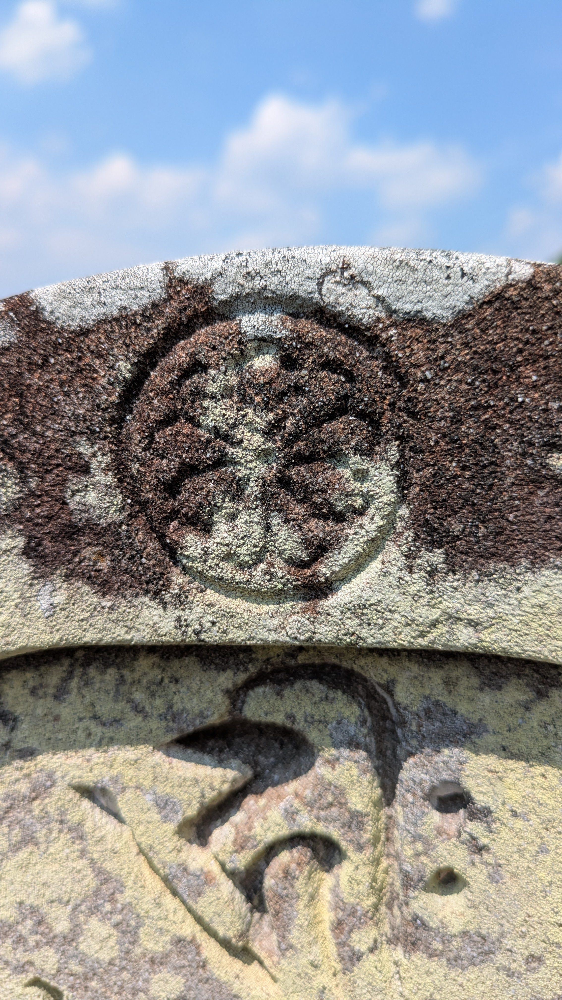
 - 形状特徴：
- 中央に円形の芯があり、そこから16枚の花弁が均等に広がる。
- 花弁は丸みを帯び、やや重なり合うような八重構造。
- 石材に刻まれており、風化と苔の付着があるが、基本構造は保持。
- 代表的な使用家系：
- 皇室：十六菊紋は日本の皇室の象徴であり、最も格式の高い家紋の一つ。
- 公家・旧華族：一部の高位公家や旧華族が変形菊紋を使用。
- 神社：伊勢神宮など、皇室と関係の深い神社でも使用。
全体構成の観察→
このお墓は中央に「橋本家先祖代々之墓」と刻まれた主碑を据え、その周囲に個別の小規模碑が並ぶ典型的な家族墓域構成を示しています。屋外の開放空間ながら、砂利敷きと石柵で区画され、定期的に花立てが置かれていることから、現在も子孫によって維持・管理されていることがうかがえます。
---
墓域の主要要素
- 中央主碑
- 碑名：「橋本家先祖代々之墓」
- 立柱型・垂直彫刻
- 墓域の象徴的位置
- 周辺小型碑
- 個別の戒名・法名が想定される
- 世代ごと、夫婦墓、子供墓など多用途
- 墓域仕切り
- 石製またはコンクリート製柵
- 客土＋砂利による排水性確保
---
家系推定への第一歩
家系を確定するには、各碑の刻字情報とその年代・位階を紐解くことが不可欠です。以下の項目を整理しましょう。
| 種別 | 想定される内容 | メモ |
|-----------|-------------------------|-----------------------------|
| 中央主碑 | 先祖全体をまとめた銘文 | 橋本姓の家系を統括 |
| 小型碑（A） | 戒名、没年、享年など | これぞ「第○代当主」か「夫人」か |
| 小型碑（B） | 同上 | 何代目かを識別可能か |
| 花立て・香炉 | 各世代の手厚い供養状況を示唆 | 維持者の身分や資力の指標に |
左側石碑の概要
この石碑は先の家墓とは異なり、地域振興や共同事業を記念する「寄贈碑」と見えます。墓碑ではなく、湯水・施設に関する記念碑として建立されたものと推測されます。
銘文構成と読み
| セクション | 読み（仮） | 意味・機能 |
|---------------|-------------------|----------------------------------|
| 流湯碑 | りゅうとうひ | 碑題。温泉・共同浴場、湯水設備の記念碑か |
| 奉寄贈 | ほうきぞう | 「奉（ここに）寄贈する」の趣旨表現 |
| 作友会 | さくゆうかい／さくともかい | 立碑主※。地域の互助団体や組合名の可能性 |
| 友之羽 | とものは（？） | 寄贈者（団体メンバーまたは役員） |
| 芳太郎 | よしたろう（？） | 同上 |
| 儀信信 | のしのぶ（？） | 同上 |
| やま義 | やまよし（？） | 同上 |
| かみ義 | かみよし（？） | 同上 |
| 明泰 | あきやす（？） | 同上 |
| つる | つる | 同上 |
| 真名 | まな | 同上 |
右側建立碑の解析→
この「慶應三年九月建立」という銘文は、幕末の慶応３年（1867年）９月にこの碑が立てられたことを示しています。
---
銘文の意味と西暦換算
| 銘文 | 西暦年 | 備考 |
|------------------|-------------|--------------------------|
| 慶應三年九月建立 | 1867年9月 | 幕末・明治維新直前 |
左の石の裏面刻字の読みと即時解釈→
以下の三名が垂直に刻まれています。
- 橋本義一（はしもと よしいち／ぎいち）
- たけの
- 多奈子（たなこ／たなこ）
これらはおそらく墓碑の主当主と、その配偶者または子女の個人名です。
右の石→
この石碑は三つ葉葵紋を頂く「個人墓碑」であり、刻まれた漢詩的な文言は故人の徳を讃える「墓碑銘」、末尾の「一盂」は仏教的な戒名や法号を示す可能性があります。橋本家の当主格一名に捧げられた墓石と考えられます。
左側の二基の小型石碑（供養柱）の解析→
右端の主要墓碑と対を成す、二基の小型石碑です。いずれも同じ銘文「保住／自雲真雲会」を有し、墓域の左右を守るように配置されています。
---
基本観察
- 石質：風化が進んだ花崗岩
- 形状：背の低い角柱型
- 配置：右の慶応築碑を正面にして向かって左側に二基並列
- 碑高：約40～50cm（主碑に比して1/4程度）
---
刻字の読みと意味
| 節 | 読み | 解釈・機能 |
|-----------|----------------------|----------------------------------------|
| 保住 | ほじゅ／ほじゅう | 「守り保つ」「永続的に護持する」の意。主碑の供養継続を誓う文句 |
| 自雲真雲会 | じうんしんうんかい？ | 地域または寺院に属する仏教信徒組織の名称と推定 |
- 「保住」は仏教供養の文脈でよく用いられ、建立後も信徒が供養・管理を持続する意思を示します。
- 「自雲真雲会」は定例会を持つ寺院信徒の会合名のようで、会の発起人・会員が共同で建立した可能性が高いです。
これは左の石で記念碑の後ろにある石→最も直接的な解釈
この石碑は「南無阿弥陀仏」の宗教号に続き、浄土宗系の霊場である浄蓮社に所属した禅定門（僧籍名）と禅定尼（尼籍名）が刻まれた供養・追善のための僧侶（および尼僧）記念碑です。家族個人の戒名ではなく、葬儀・法要を執り行った僧侶夫妻（または前後に住持を務めた僧尼）を顕彰する石柱と考えられます。
---
刻字内容の読みと役割
- 南無阿弥陀仏
「往生浄土」を願う浄土宗の常用題目
- 浄蓮社清元禅定門
浄蓮社（寺院名または院号）に属する男性僧侶の僧籍名
- 浄蓮社清元禅定尼
同じく浄蓮社に属する女性尼僧の僧籍名
これらは法要を司った両名が建立者（または遺族）から寄進を受け、感謝を表した「供養碑」に該当します。
左の記念碑のさらに左にある石について→最も直接的な解釈
この石柱は「南無阿弥陀仏」に続き、浄土宗系の浄蓮社に所属する僧籍名「清元禅定門」「清光禅定尼」を刻んだ供養碑です。左の記念碑のさらに左手に配置され、橋本家墓域の菩提寺が浄蓮社であることを示す重要な証拠です。
---
石柱の要点
- 南無阿弥陀仏：往生浄土を願う題目
- 浄蓮社清元禅定門：男性僧侶の僧籍名
- 浄蓮社清光禅定尼：女性尼僧の僧籍名
- 立地：左の記念碑（橋本家先祖代々之墓）のさらに左側
その南無阿弥陀仏の側面→側面刻字の予備読取
撮影いただいた文字痕跡から、以下が読み取れました。
- 上段：「文政」
- 下段：一文字として確認できる「橋」
---
何がわかるか
1. 「文政」
- 文政元年～文政13年（1818–1830年）のどこかで建立された可能性を強く示唆
- 慶応3年建立碑（1867年）よりも半世紀ほど古い改葬・補修の痕跡
2. 「橋」
- おそらく「橋本」の「橋」であり、施主（寄進者）が橋本家の一員
- 刻字パターンや線の太さから、同家当主や当主代理の名前の一部と推定
最も直接的な回答
側面の「文政〇〇 橋（松?）風（？「本」かもしれない）」は、文政期（1818–1830年）に橋本家の当主または分家が供養柱を建立した際の刻銘と見られます。刻まれた姓名が「橋本」であれば、同家の定期的な墓域整備サイクルと一致し、「橋松風」であれば異称・雅号の可能性もあります。
---
刻字読取の仮説整理
| 項目 | 刻字候補 | 可能性 |
|------------|-------------|---------------------------------------------|
| 年号部 | 文政〇〇年 | 建立年の不完全読取。文政の中期（1820年代）と推定 |
| 氏名部・上段 | 橋 or 橋松 | 「橋」は橋本姓の略記。 「橋松」は分家や雅号か |
| 氏名部・下段 | 風 or 本 | 「風」は人名・雅号（歌人号など）、「本」は橋本姓の後半 |
橋本家之墓の後ろにある石→
機銘石「橋本氏」の最も直接的な解釈
この石柱は「橋本氏」とだけ刻まれており、橋本家墓域の背後に配置されています。家全体を示す姓石として、墓域の領域標示または一族の集合を象徴している可能性が高いです。
---
石の位置・形状・機能
- 配置：
墓域背後の中央付近に立てられ、主碑「橋本家先祖代々之墓」を見守るような位置関係
- 形状・石質：
角柱または扁額型の石材で、風化した御影石と推定。高さは小型墓碑（約50–70cm）程度
- 機能：
- 墓域の「氏」として、橋本一族の集合体を指示
- 墓域全体を「橋本氏墓域」として刻印する境界石
- 宗教的・世俗的な区画標識の二重性を併せ持つ
橋本家之墓の後ろにある他の石→
最も直接的な解釈
この無銘の石柱は、橋本家墓域の背後を区画する「境界石」または「氏界石」として立てられた可能性が高いです。かつて刻まれていた文字や意匠は風化と苔の付着で判読不能になっています。
---
石柱の特徴と機能
- 形状：矩形柱に上部が緩やかに丸みを帯びた台形
- 素材：風化の進んだ御影石または花崗岩
- 配置：主碑背後の中央付近、先の「橋本氏」石と対を為す位置
- 役割：
- 墓域境界を示す標識石
- 一族の「氏」または「墓域」を象徴的にマーキング
橋本家之墓の背面（昭和に作られたみたいです）→最も直接的な回答
背面の「昭五三年三月吉日 橋本義一建之」は、昭和53年（1978年）3月の建立または改修を意味し、橋本義一氏がその工事を寄進・実行したことを示しています。
---
銘文の西暦換算と意味
| 刻銘 | 西暦換算 | 解説 |
|-------------------------|-------------------|--------------------------------------|
| 昭五三年三月吉日 | 1978年3月（吉日） | 「吉日」は縁起の良い日を指し、建立や改葬の日付 |
| 橋本義一建之 | — | 寄進者＝建立者としての橋本義一氏 |
昭和53年はおよそ半世紀前にあたり、当家墓域の大規模な補修または再建立が行われたことになります。
- 形状特徴：
- 中央に円形の芯があり、そこから16枚の花弁が均等に広がる。
- 花弁は丸みを帯び、やや重なり合うような八重構造。
- 石材に刻まれており、風化と苔の付着があるが、基本構造は保持。
- 代表的な使用家系：
- 皇室：十六菊紋は日本の皇室の象徴であり、最も格式の高い家紋の一つ。
- 公家・旧華族：一部の高位公家や旧華族が変形菊紋を使用。
- 神社：伊勢神宮など、皇室と関係の深い神社でも使用。
全体構成の観察→
このお墓は中央に「橋本家先祖代々之墓」と刻まれた主碑を据え、その周囲に個別の小規模碑が並ぶ典型的な家族墓域構成を示しています。屋外の開放空間ながら、砂利敷きと石柵で区画され、定期的に花立てが置かれていることから、現在も子孫によって維持・管理されていることがうかがえます。
---
墓域の主要要素
- 中央主碑
- 碑名：「橋本家先祖代々之墓」
- 立柱型・垂直彫刻
- 墓域の象徴的位置
- 周辺小型碑
- 個別の戒名・法名が想定される
- 世代ごと、夫婦墓、子供墓など多用途
- 墓域仕切り
- 石製またはコンクリート製柵
- 客土＋砂利による排水性確保
---
家系推定への第一歩
家系を確定するには、各碑の刻字情報とその年代・位階を紐解くことが不可欠です。以下の項目を整理しましょう。
| 種別 | 想定される内容 | メモ |
|-----------|-------------------------|-----------------------------|
| 中央主碑 | 先祖全体をまとめた銘文 | 橋本姓の家系を統括 |
| 小型碑（A） | 戒名、没年、享年など | これぞ「第○代当主」か「夫人」か |
| 小型碑（B） | 同上 | 何代目かを識別可能か |
| 花立て・香炉 | 各世代の手厚い供養状況を示唆 | 維持者の身分や資力の指標に |
左側石碑の概要
この石碑は先の家墓とは異なり、地域振興や共同事業を記念する「寄贈碑」と見えます。墓碑ではなく、湯水・施設に関する記念碑として建立されたものと推測されます。
銘文構成と読み
| セクション | 読み（仮） | 意味・機能 |
|---------------|-------------------|----------------------------------|
| 流湯碑 | りゅうとうひ | 碑題。温泉・共同浴場、湯水設備の記念碑か |
| 奉寄贈 | ほうきぞう | 「奉（ここに）寄贈する」の趣旨表現 |
| 作友会 | さくゆうかい／さくともかい | 立碑主※。地域の互助団体や組合名の可能性 |
| 友之羽 | とものは（？） | 寄贈者（団体メンバーまたは役員） |
| 芳太郎 | よしたろう（？） | 同上 |
| 儀信信 | のしのぶ（？） | 同上 |
| やま義 | やまよし（？） | 同上 |
| かみ義 | かみよし（？） | 同上 |
| 明泰 | あきやす（？） | 同上 |
| つる | つる | 同上 |
| 真名 | まな | 同上 |
右側建立碑の解析→
この「慶應三年九月建立」という銘文は、幕末の慶応３年（1867年）９月にこの碑が立てられたことを示しています。
---
銘文の意味と西暦換算
| 銘文 | 西暦年 | 備考 |
|------------------|-------------|--------------------------|
| 慶應三年九月建立 | 1867年9月 | 幕末・明治維新直前 |
左の石の裏面刻字の読みと即時解釈→
以下の三名が垂直に刻まれています。
- 橋本義一（はしもと よしいち／ぎいち）
- たけの
- 多奈子（たなこ／たなこ）
これらはおそらく墓碑の主当主と、その配偶者または子女の個人名です。
右の石→
この石碑は三つ葉葵紋を頂く「個人墓碑」であり、刻まれた漢詩的な文言は故人の徳を讃える「墓碑銘」、末尾の「一盂」は仏教的な戒名や法号を示す可能性があります。橋本家の当主格一名に捧げられた墓石と考えられます。
左側の二基の小型石碑（供養柱）の解析→
右端の主要墓碑と対を成す、二基の小型石碑です。いずれも同じ銘文「保住／自雲真雲会」を有し、墓域の左右を守るように配置されています。
---
基本観察
- 石質：風化が進んだ花崗岩
- 形状：背の低い角柱型
- 配置：右の慶応築碑を正面にして向かって左側に二基並列
- 碑高：約40～50cm（主碑に比して1/4程度）
---
刻字の読みと意味
| 節 | 読み | 解釈・機能 |
|-----------|----------------------|----------------------------------------|
| 保住 | ほじゅ／ほじゅう | 「守り保つ」「永続的に護持する」の意。主碑の供養継続を誓う文句 |
| 自雲真雲会 | じうんしんうんかい？ | 地域または寺院に属する仏教信徒組織の名称と推定 |
- 「保住」は仏教供養の文脈でよく用いられ、建立後も信徒が供養・管理を持続する意思を示します。
- 「自雲真雲会」は定例会を持つ寺院信徒の会合名のようで、会の発起人・会員が共同で建立した可能性が高いです。
これは左の石で記念碑の後ろにある石→最も直接的な解釈
この石碑は「南無阿弥陀仏」の宗教号に続き、浄土宗系の霊場である浄蓮社に所属した禅定門（僧籍名）と禅定尼（尼籍名）が刻まれた供養・追善のための僧侶（および尼僧）記念碑です。家族個人の戒名ではなく、葬儀・法要を執り行った僧侶夫妻（または前後に住持を務めた僧尼）を顕彰する石柱と考えられます。
---
刻字内容の読みと役割
- 南無阿弥陀仏
「往生浄土」を願う浄土宗の常用題目
- 浄蓮社清元禅定門
浄蓮社（寺院名または院号）に属する男性僧侶の僧籍名
- 浄蓮社清元禅定尼
同じく浄蓮社に属する女性尼僧の僧籍名
これらは法要を司った両名が建立者（または遺族）から寄進を受け、感謝を表した「供養碑」に該当します。
左の記念碑のさらに左にある石について→最も直接的な解釈
この石柱は「南無阿弥陀仏」に続き、浄土宗系の浄蓮社に所属する僧籍名「清元禅定門」「清光禅定尼」を刻んだ供養碑です。左の記念碑のさらに左手に配置され、橋本家墓域の菩提寺が浄蓮社であることを示す重要な証拠です。
---
石柱の要点
- 南無阿弥陀仏：往生浄土を願う題目
- 浄蓮社清元禅定門：男性僧侶の僧籍名
- 浄蓮社清光禅定尼：女性尼僧の僧籍名
- 立地：左の記念碑（橋本家先祖代々之墓）のさらに左側
その南無阿弥陀仏の側面→側面刻字の予備読取
撮影いただいた文字痕跡から、以下が読み取れました。
- 上段：「文政」
- 下段：一文字として確認できる「橋」
---
何がわかるか
1. 「文政」
- 文政元年～文政13年（1818–1830年）のどこかで建立された可能性を強く示唆
- 慶応3年建立碑（1867年）よりも半世紀ほど古い改葬・補修の痕跡
2. 「橋」
- おそらく「橋本」の「橋」であり、施主（寄進者）が橋本家の一員
- 刻字パターンや線の太さから、同家当主や当主代理の名前の一部と推定
最も直接的な回答
側面の「文政〇〇 橋（松?）風（？「本」かもしれない）」は、文政期（1818–1830年）に橋本家の当主または分家が供養柱を建立した際の刻銘と見られます。刻まれた姓名が「橋本」であれば、同家の定期的な墓域整備サイクルと一致し、「橋松風」であれば異称・雅号の可能性もあります。
---
刻字読取の仮説整理
| 項目 | 刻字候補 | 可能性 |
|------------|-------------|---------------------------------------------|
| 年号部 | 文政〇〇年 | 建立年の不完全読取。文政の中期（1820年代）と推定 |
| 氏名部・上段 | 橋 or 橋松 | 「橋」は橋本姓の略記。 「橋松」は分家や雅号か |
| 氏名部・下段 | 風 or 本 | 「風」は人名・雅号（歌人号など）、「本」は橋本姓の後半 |
橋本家之墓の後ろにある石→
機銘石「橋本氏」の最も直接的な解釈
この石柱は「橋本氏」とだけ刻まれており、橋本家墓域の背後に配置されています。家全体を示す姓石として、墓域の領域標示または一族の集合を象徴している可能性が高いです。
---
石の位置・形状・機能
- 配置：
墓域背後の中央付近に立てられ、主碑「橋本家先祖代々之墓」を見守るような位置関係
- 形状・石質：
角柱または扁額型の石材で、風化した御影石と推定。高さは小型墓碑（約50–70cm）程度
- 機能：
- 墓域の「氏」として、橋本一族の集合体を指示
- 墓域全体を「橋本氏墓域」として刻印する境界石
- 宗教的・世俗的な区画標識の二重性を併せ持つ
橋本家之墓の後ろにある他の石→
最も直接的な解釈
この無銘の石柱は、橋本家墓域の背後を区画する「境界石」または「氏界石」として立てられた可能性が高いです。かつて刻まれていた文字や意匠は風化と苔の付着で判読不能になっています。
---
石柱の特徴と機能
- 形状：矩形柱に上部が緩やかに丸みを帯びた台形
- 素材：風化の進んだ御影石または花崗岩
- 配置：主碑背後の中央付近、先の「橋本氏」石と対を為す位置
- 役割：
- 墓域境界を示す標識石
- 一族の「氏」または「墓域」を象徴的にマーキング
橋本家之墓の背面（昭和に作られたみたいです）→最も直接的な回答
背面の「昭五三年三月吉日 橋本義一建之」は、昭和53年（1978年）3月の建立または改修を意味し、橋本義一氏がその工事を寄進・実行したことを示しています。
---
銘文の西暦換算と意味
| 刻銘 | 西暦換算 | 解説 |
|-------------------------|-------------------|--------------------------------------|
| 昭五三年三月吉日 | 1978年3月（吉日） | 「吉日」は縁起の良い日を指し、建立や改葬の日付 |
| 橋本義一建之 | — | 寄進者＝建立者としての橋本義一氏 |
昭和53年はおよそ半世紀前にあたり、当家墓域の大規模な補修または再建立が行われたことになります。
28
折たく柴の記 中（新井白石）所収の六月廿日進議記述。一乗院門主の使者が花蔵院・発心院等を下して申す事あり、近衛相国・東求院入道前関白藤原公教の息子尊敬大性院（一乗院門主）の寺務放棄と廃絶、神祖（後陽成天皇）との交流を記す。発心院を一乗院の院家として位置づけ、寺務相論の文脈で言及
折たく柴の記 中（新井白石）（25コマ、請求記号142-134）
国会図書館へ
より→
六月廿日進議訖り~後詮房朝臣して仰下さる前代の時敵都兩門主(一康院殿大乗院殿)相論の事をてに御裁断ありて御判と爲るへまに反ひて御他界あり此事議依て一乗院門主使者弁にその院家花藏院發心院等を下して申さる、事共あり怒るに此事の由を、近衛の相國よく志り給へりどてのさまふっ東求院入道前關白前久(龍山の御事也)二人の息男あり長子一乗院門主尊敬大性院と申是也次子、三藐院前關白信尹也神祖に、東求院殿と年頃去さ志うせさせ給ひーのは伏見の御所より京によらせ給ふ度、近衛殿に立寄らせ給ひ豆は御枕をならへてるしなあら御物語の事なと有けり其頃尊敬をは太郎君と申し信尹と、次郎君と申もその太郎君此十一の時に常にこ、に物しねれと然るへきもの進せ~事もなく何事にもあと申給へ其空かなへて進せんと仰せちをしに我つ物ほしとも思はを我氏寺なとつ興福寺の寺務とありて其惑ひしと起さはやとこそ思ふなをと申給ひしっかこは不思議の事とのさまふもの哉と仰ありしょゃって一乗院に入室の事なとありて遂に放寺務になさを絶つるをつき廢きさる饭興し給ひさりけり神祖御代の事去らせ給ひし初は音の御勢を違へらを立其學間料なと寄せ進らを此門派に於てったとひ寺務當職にあらをとるなりく
29
読史備要新訂版所収の発心院関連人物。発心院実信（興福寺一乗院）、発心院正山世覚（堀尾式部丞忠晴子、後堀河前内大臣堀河具親の子）、後発心院信賀（興福寺大乗院）など、中世院主の系譜と別当・領主関連を示す。
読史備要 新訂版（1799項、出版年月日昭和10請求記号R210.036-To46ロウ、
国会図書館のページへ）より引用→→發心院實信興福寺一乘、發心院正山世覺堀尾式部丞 忠晴子、
後堀河前内大臣堀河具親、後發心院信賀興福寺大乘院、

30
大和志料「奈良町」項。奈良の地名由来と平城京遷都後の変遷を記し、康正二年飯神殿庄算田帳に奈良百姓分として「西ハシノ院ノ五郎」等人名を挙げる。ハシノ院（発志院）の在地領有を示唆する地誌的記録。
大和志科「奈良町」（44項、国会図書館デジタルコレクション有り、請求記号348-226イ書誌ID000000704075）
国会図書館へより引用→ト。是那羅/地名ノ國史二見ユルノ初ニシテ、以其ノ名ノ出ヅル所ヲ知ルペン。蓋シ那羅山、今ノ奈良坂以西法華寺以東ノ山城ニ境スル一帯ノ山棠云ヒ、其ノ以南ノ方面ヲ總ペテ那羅里ト稱セルナリ。因ニ云フ、古歌奈良ヲ詠ゼントシテ青丹吉ノ語ヲ冠其ノ以南ノ方面ヲ總ペテ那羅里ト稱セルナリ。因ニ云フ、古歌奈良ヲ詠ゼントシテ青丹吉ノ語ヲ冠ス。舊說青丹吉の青釜ノ義ニシテ彼ノ彥國葺ノ忌登ヲ居エタル故事因ルモノナリト云フ。註(奈良町、明治三十一年二月一日市制布ク。)
元明天皇和銅三年都ヲ平城遷シ左京右京ヲ立チ九條大路通ジ、宮殿邸宅ヲ設ヶ規模版宏大ナリ。之ヲ平城ノ都ト稱ス。爾後七朝七十五年ノ間帝都トナリシガ、桓武天皇延曆中更二都ヲ平安二遷シ給フニ及ビ、平城舊京屬シ邸宅道路荒壞委シ闘テ田畝トナレルコト平城宮ノ下述ブベシ。元來奈良町ノ地、古ノ左京一屬スル方面ニシテ興福・元興等,大寺其ノ間=屹立セリ。遷都以來寺僧互ニ土地占領或土豪ノ侵有スル所トナリテ之ヲ奈良或、南都ト稱セリ。然レドモ今ノ如ク商店軒ヲ連ネ一市邑トナレルモノNIAラズッテ、田舎ト異ナルコトナカリキ。康正二年飯神殿庄算田帳ニ「間田奈良百姓分,齡小法師,而智院,興二郎,寺枷、三郎二郎、京パラノサュノ五郎、福寺,明春房、沖上石クラ、加塔院、カペヤノ三郎次郎,加わ勿加ノ兵衛、カ加河ノエボシャ、南大門カデヤ,椿井ノ兵衛五郎、西ハシノ院ノ五郎」等ノ人名ヲ載ス。圈點ヲ附スルモノハ郎チ在慮ノ名ナリ。又尋尊僧正長祿四年閏九月二十六日日記ニ引ヶル正長元年/間別貸納帳二頭塔四尺 窪一間同辻子ノ里卅一間 幸三十間 松谷郡岩井四六間南市鋼十九間
31
大乗院寺社雑事記（尋尊大僧正記）第4巻所収の発志院内沙汰人・在住問題。庄屋沙汰人が不法無沙汰、他領中止住で門跡難義、発志院内に器用躰を仰付けるべきとする記述。早々申付を命じる重要寺社記録。
大乗院寺社雑事記 第4巻 尋尊大僧正記. 10-188(自長禄2年12月至永正元年4月)（242項、国会図書館デジタルコレクション有り、請求記号554-213書誌ID000000778530）国会図書館へより引用→
庄屋沙汰人、事不法無沙汰仁躰也、剩他領中ニ止住爲門跡難義也、發志院之内ニ器用躰可被仰付之事、此条尤也、早々可申付云々、
以上
32
大日本史料 第8編之13所収の左兵衛尉經房書狀。不空院經講寄進（現納貳貫文など）、橋本屋敷（定五百文）、松田良現房律師（現納一石七斗七升七合など）の納入・支配記録。横田庄・今林庄関連の供出・名寄を示す中世経済史料。
大日本史料 第8編之13 / 大日本史科（横田庄・今林庄）（866項、国会図書館デジタルコレクション有り、請求記号GB22-7書誌ID000001225104、国会図書館へ）より引用→
四〇二 左兵衛尉經房書狀
一不空院經講寄進 現納貳貫文 納所得分三百文、定使給百文、支配 季彼岸初日講問加分五十文、出仕百文宛、合壹貫文、六百西發志院兩度羅漢供方出之、
一橋本屋敷 定五百文四月十八日 支配口別百文宛、所殘納所得分、
一松田 良現房律師 三月廿四日會合、現納一石七斗七升七合、延分七斗一升八夕者、四合延、本延合貳石四斗八升七合八夕者、歐齢处针六合、
定米貳石三斗九升一合八夕代錢二貫八十文和市一斗一升五合、支配會今講明三百文苑出土七十文宛、佛共澄明代冊文
33
文禄四年（1595年）大和国添上郡内発志院村御検地帳。検地結果として上田十間廿間などの田地記載、総九郎・長田七郎次郎などの名主、荒共惣吟味時簿中加五百六十四石五斗二升三合の加増、庄屋孫次郎内證。豊臣政権下の検地を示す。
検地
文禄四年 大和国添上郡内発志院村御検地帳
八月十九日（増田右衛門尉打口）
『大乗院文書』の解題的研究と目録 : お茶の水図書館蔵成簣堂文庫 上（303項、国会図書館デジタルコレクション有り、請求記号UP171-238書誌ID000001766439、国会図書館へ）によると、文禄四年八月日に、御前帳うつしによると、
大和国添上郡内発志院村御検地帳にて、
上田十間廿間、但二枚六畝廿分、壹石四升七合、總九郎今ハ又二郎今ハ彦九郎・・略・・長田七郎次郎と記載され、荒共惣吟味之時簿中ニ加五百六十四石五斗二升三合加増田衛門殿打口、庄屋孫次郎内證之覚と記載されているようだ。
34
大和志料 上巻所収の永正四年（1507年）九月記述。幕府の丹後攻め、澤藏の帰還、社寺焼失。赤澤新兵衛・內堀新次郎の入国、十市・箸尾・楢原・筒井の抵抗、京軍の東大寺入りと南都占領、片岡越智などの没落。大和国戦乱史を記す地誌。
大和志料 上巻（23項など、国会図書館デジタルコレクション有り、請求記号348-226イ書誌ID000000704075）
国会図書館へ
ヲ釜口ニ出ス・十九日幕府澤藏ヲ召シ更二丹後ヲ攻メシム。澤藏乃チ成兵ヲ當國二置京師ニ還ル國中ノ社寺多此時,兵火燒失セリト云フ。永正四年九月更赤澤新兵衛內堀新次郎等ヲシテ當國二入ラシム『十市、箸尾、楢原、筒井兵ヲ奈良出之ヲ拒ク、利アラス、十八日京軍東大寺二入ル、南都,地悉クコレニ占領セラレ院家在家概ネ打破セラル、又一軍、乾脇衆ヲ攻ム、片岡越智片岡等沒落。
36
大乗院寺社雑事記 第3巻（尋尊大僧正記）所収の寬正四年（1463年）十二月日記。尊弘（禪了房）の新入事に関する争いにおいて、師匠長實（禪觀房）が発心院住として言及され、円弘の弟で慈恩會遂業了の学道経歴を有し、非衆非學の前例を巡る両方相論の詳細を記す。寺務・学侶の沙汰を中心に、寺訴開門・儀式などの寺社運営記録。
注意：括弧書きは注意事項
大乗院寺社雑事記 第3巻 尋尊大僧正記. 10-188(自長禄2年12月至永正元年4月)（376項、国会図書館デジタルコレクション有り、請求記号554-213書誌ID000000778530）
国会図書館へより引用→
寬正四年十二月
十日
一正願院御經藏修理奉伽事、以兩年預披露六方、
一就倉庄反錢事、十市代官村井參了、
一紀州御勢近日可引退云々、畠山進退如何
一聲聞宿相論事、爲衆中道理を聲聞付之畏入之由五个所十座者共昨日參中了,
十一日
一講問一座予行之一
一就大訴共事、閉門事自學侶申給了、
就寺訴之事當寺開門之事、明日十二日、旨令一決候、可得御意之旨洩可被披露之由、學侶集會評定候也、恐々謹言,
十二月十一日 供目代胤秀
伊與上座御房
一尊弘（了禪房）、新入事、中﨟分衆中子細不可下叶衆烈云々下藤分以下相分兩方數日之間及相了支申方衆中趣者以外次第也依此事俄ニ淄州會無始行先途之輩迷惑事哉珍事、各退加行了、
凡不得其意次第也、尊弘之師匠長實（禪觀房）、者,經三階業而學道隨一也去夏比他界了尊弘之事今何可及子細哉、尊弘、円弘（錢觀房）,子也、長實、円弘之弟也、伯父既以學道也只今異儀不得其意之者也,
（非業非學 觀舜房 松林院住）憲弘（兼寺住衆了, 內梵音衆）→（兼寺住眾徒 近日兼寺住 非衆非学 內梵音衆 辻）円弘 、（円弘弟 禪観房 發心院住 慈恩會遂業了）長實→（円弘子供 辻）尊弘（禪了房）
然而支申輩尊藝朝弘寬乘訓英・經禪・懷藝以下申趣者長實禪觀房、新入之時、憲弘者令寺住分ニテ、非々衆非學前事也、當時円弘八爲非衆非學而松林院ニ奉公儀也然之間不可然云々仍今度円弘又如親父令寺住歟、但及其沙汰寂中、加寺住例条不得其意者也尊弘新入不可叶於淄州會者今夜可始行旨一決了、尊弘方ニ八不新入者會式事不可始行旨一決了、兩方可及喧嘩歟、珍事、人勢以下召上了、寺務井學侶衆・筒井以下致了簡相宥兩方會式事略之了、兩方儀未
一寺訴之內五个關所事御裁許云々仍光宣法印近日可下向云々於兵庫關所者無一定珍事之由光宣法印申下之,
一信清論匠訪百疋遣之了、畏入云々、
一就倉庄反錢事、十市代官進之十五貫文外今二貫文可沙汰進之不可叶旨仰了、
十二日小（小雨）
一信貴院主分到來二貫五百文、遣大納言、半分八進安位寺殿了、山門送狀在之、
請取信貴山御院主分事
合伍貫文者
右爲當年分請取狀如件、
寬正四年十二月日 納所專親钊,
一寺家三十講論匠今日召之云々、參賀輩）加古論匠等五双云々）
信清院 興胤院
一橘寺平等寺卷數到來了、
一當寺東大寺以下七大寺自午剋令開門了以外珍事也,
十三日（雨下）、
一五重門讀誦了、
一愛染王參詣了、
一就中山寺供事、田原本南召仰了、
十四日（雨下）、
一五段式行之又夜前得佛舍利之由夢相、
一就寺訴閘門事注進關白殿御返事到來、雜掌返事云寺訴事武家不被入聞召上無御仰天於公家御儀者、山門開籠八幡神人閑籠又南都之問籠以外之由被勤思召云々、武家御儀公私無仰天者也,當時每事如此云々、
37
大乗院寺社雑事記総索引 上巻 (人名篇)所収の円弘項目。堯観房・辻子・松林院被官として文明11年（1479年）1月25日死亡を記す。発心院住の円弘（円弘弟の長實が発心院住関連）を示す人名索引史料。
大乗院寺社雑事記総索引 上巻 (人名篇)（27コマ、国会図書館デジタルコレクション有り、請求請求記号210.46-D18-T書誌ID000001062235）
国会図書館へより引用→
円弘は堯観房や辻子や松林院被官で文明11年1月25死亡であったようだ
38
福井県郷土叢書 第10集 (北国庄園史料)所収の坪江上下郷名主百姓中「横田庄条里坪付」。嘉吉二年（1442年）の裏文書に鶴丸方五十貫（内三十五）・山荒居方七十貫の御服綿記載。横田庄（発志庄関連荘園）の名寄・供出を示す経済史料。
福井県郷土叢書 第10集 (北国庄園史料)（447項、国会図書館デジタルコレクション有り、請求記号081.7-H787-H書誌ID000001235938）
国会図書館へ
より引用→
坪江上下郷名主百姓中
「横田庄条里坪付」には、嘉吉二年の裏文書があるが、そこには次のような御服綿の記載がある。
一鶴丸方五十貫此內三十五
一山荒居方七十貫
39
春日大社文書 第6巻所収の天文二十年（1551年）六月廿日興福寺学侶連署神水起請文。花山辺安居坊の不断柴・破木・續松等雑木採用に関する成敗誓約と神罰起請。署名に琳禪円弘（花押）など学侶衆（発心院住関連の円弘）を記し、寺社本意の安居紹隆を誓う重要記録。
春日大社文書 第6巻（216項、国会図書館デジタルコレクション有り、請求記号081.7-H787-H書誌ID000001235938）
国会図書館へ
より→
一二七 興福寺學侶連署神水起請文法
敬白天罰連暑神水起請文事紙背、彌勒講牛玉
右子細者、今度衆中面々、於花山邊安居坊不斷柴·破木・續松等雜木採用之駈士法師以下當座成敗事言語道斷次第也、抑此安居者、博陸殿下御願以來、神前晝夜秘曲御神供又別而有其子細、依之山木古今之伐用事舊訖、惣彼山巡檢事、爲學侶預置于衆中之處、以其由緒動者成押妨之働、對寺門如此及違害之条、慮外至極也、依之安居每日雜用既令闕如之間、眞俗之勤仕難治之由頻被辞之、成敗若及時日者、忽可有結夏退轉、歎哉、當社御造替不計依令遅々、隱靈神威、緇素失途爲時節条、魔界得便代、佞人作寺社之凶惡者、毁歎而有餘、仍而早退惡逆、途寺社本意、可廻安居紹隆之計策、學侶·六方·下萬分三輩令一味同心、成魚水思、就彼一列不日可加嚴科、若當時習猶於非寺門本意者、令開門五社七堂、停止神事法會、可奉任神慮再興事
多分評定堅執不可有蜜事漏脫事
右条々令違犯者、可蒙日本國大神小神、別而當社大明神御罰者也、仍神水起請
天文二十年六月廿日
顯定擬講堯弘(花押)
學侶衆等
覺專(花押) 円算(花押) 寛弘(花押) 訓增花押) 興弘(花押) 英賢(花押)
延禪秀(花押) 勝舜言円(花押)
增識公清(花押) 順觀言□(花押)
円禪擬講(花押) 琳禪円弘(花押)
40
多聞院日記 第1巻所収の文明十五年（1483年）正月記述。多聞院長實房英俊の記で、狛野庄からの屋七草蔓三把持來と献井餅・一膳などの慣行を記し、禪榮房價都五師職の存知を示す。発志院関連の五師職として寺社運営の文脈で言及。
多聞院日記 第1巻（77項、国会図書館デジタルコレクション有り、請求記号210.48-E38t-T書誌ID000000872456）
国会図書館へ
より引用
文明十五年文明十六年文明十七年多聞院長實房英俊之記
多聞院日記
文明拾五年癸卯
正月朔日、寺社繁昌、佛法紹隆、修學再興、天下安全、如院内安穩、壽福增長、所願圓滿、千喜万欽、珍重、如、例年社參入堂、捧幣、院中同道如佳例、
六日、狛野庄、屋七草蔓三把持來、近年依一天亂世、彼在所知行之事有名無實之間、先、儀不存知、彼物申云、每度必一献井餅一膳・一帖・一本、又若蔓持使餅三枚給之云、仍多年禪榮房價都五師職被存知之間、相尋申候處、
41
日本中世唯識仏教史所収の発心院関連僧侶。顕舜房定清（1399-1477）、禅乗房覚胤（1423-1492）、善行房を挙げ、中世唯識仏教史における発心院住の学問系譜を示す。
日本中世唯識仏教史（374項、国会図書館請求記号HM121-110）
国会図書館へ
より引用
発心院 顕舜房定清(一三九九—〜一四七七)。禅乗房覚胤(一四二三—〜一四九二)。善行房
42
大日本仏教全書 １２４所収の東北院血脈。圓玄（別當、大納言藤原隆季卿子、建久元年維摩會竪義など）、経圓（東北院住、號發志院）、圓憲（東門仕）など法相宗血脈次第を記し、發志院を号とする経圓の別当補任・講義歴を詳述。
大日本仏教全書 １２４（18項、国会図書館請求記号353-10、国会図書館へ）より引用→
●東北院
自ニ本願。圓玄僧正迄。經ニ數代一駄。未レ考。
圓玄。別當。
大納言藤原隆季卿子。
建久元年 廿六維摩會竪義。
承元三年講師。
不レ遂ニ後二會。於ニ最勝會講師一者。範四重講了。建保三年。信家故障之替。圓玄。件講師令レ勤ニ仕之一。云云。
貞應三年四月
同年
四十
相權別當
寬喜元年
東北院。未定。 洞三
探題。初。
貞永元年三月
八日
任。權僧正。
補別當
四歲七十劇還補別當
建長元年八月廿日
年十一月廿八日
龄。
（東北院。未定。）經四。 法印。法相宗血脈次第ニ。住東北院トアリ。藤原經朝臣子。號ニ發志一院。
●法相宗血脈次第
貞慶（右少辨貞憲子。少納言信西孫。號ニ解脱上人一。）-圓玄-（東北院住）経圓-（東北院住）圓憲（東門仕）
43
大和郡山市史 資料集所収の江戸時代発志院村庄屋・年寄一覧。源右衛門（享保12・18年、宝暦14年庄屋）、源兵衛（享保18年年寄、文政3年庄屋）、喜兵衛（宝暦14年年寄）、九郎兵衛（正保4年・慶安承応3年頃庄屋）、甚次郎（寛政7-享和2年庄屋/総代）、利平次（文化6-文政3年庄屋/相続）、藤吉（文化6-文政3年相続）、佐太郎（享和2-文化1年庄屋）、利兵衛（享和2年庄屋）、惣五郎（文政3-8年相続）、佐兵衛（文政3-8年庄屋）。嘉永3年凶作難渋人御救願状に庄屋太兵衛・年寄兵作。周辺村（額田部村、市本村など）の庄屋・年寄連署も記し、発志院村の村役人変遷を示す。
江戸時代の発志院村
大和郡山市史 資料集（459項など、国会図書館デジタルコレクション有り、請求記号216.5-Y539y書誌ID000001084292）国会図書館へ
発志院村
源右衛門 (庄屋): 享保12年（1727年）・享保18年（1733年）・宝暦14年（1764年）。出典: 越智太兵衛伝「古庄屋九兵衛事歴書上控」・櫟本領の川堀・抜地願・水車新設一札。
源兵衛 (年寄): 享保18年（1733年）。出典: 越智太兵衛伝「抜地得庄屋給米ニ替ヘラレ度御願」。
喜兵衛 (年寄): 宝暦14年（1764年）。出典: 越智太兵衛伝「櫟本領へ水車取組二付一札」。
九郎兵衛 (庄屋): 正保4年（1647年）・慶安承応3年（1650-54年頃, 6-7年間在任)。出典: 越智太兵衛伝「古庄屋九兵衛事歴書上控」。
甚次郎 (庄屋/総代): 寛政7年-享和2年（1795-1802年）。出典: 奈良盆地住宅地形成の解析 no.7804 (宗門改帳)。
利平次 (庄屋/相続): 文化6年-文政3年（1809-1820年）。出典: 奈良盆地住宅地形成の解析 no.7804 (宗門改帳)。
藤吉 (相続): 文化6年-文政3年（1809-1820年）。出典: 奈良盆地住宅地形成の解析 no.7804 (宗門改帳)。
源兵衛 (庄屋): 文政3年（1820年）。出典: 奈良盆地住宅地形成の解析 no.7804 (宗門改帳)。
佐太郎 (庄屋): 享和2年-文化1年（1802-1804年）。出典: 奈良盆地住宅地形成の解析 no.7804 (宗門改帳)。
利兵衛 (庄屋): 享和2年（1802年）。出典: 奈良盆地住宅地形成の解析 no.7804 (宗門改帳)。
惣五郎 (相続): 文政3-8年（1820-1825年）。出典: 奈良盆地住宅地形成の解析 no.7804 (宗門改帳)。
佐兵衛 (庄屋): 文政3-8年（1820-1825年）。出典: 奈良盆地住宅地形成の解析 no.7804 (宗門改帳)。
周辺村（中庄・吉岡荘・若槻庄・櫟本領・市本村・幸前村・額田部村など）
額田部村:
弥十郎 (庄屋): 元和3年（1617年）。出典: 南都御奉行所 (氏神祭頭争いの覚書)。
源七 (百姓/連署): 元和3年（1617年）。出典: 南都御奉行所。
清右衛門 (百姓/連署): 元和3年（1617年）。出典: 南都御奉行所。
源六 (百姓/連署): 元和3年（1617年）。出典: 南都御奉行所。
甚次郎 (百姓/連署): 元和3年（1617年）。出典: 南都御奉行所。
櫟本領:
義助 (庄屋): 宝暦14年（1764年）。出典: 越智太兵衛伝「櫟本領へ水車取組二付一札」。
弥兵衛 (庄屋): 宝暦14年（1764年）。出典: 越智太兵衛伝「櫟本領へ水車取組二付一札」。
市本村 (市枝村):
理右衛門 (総代): 享保12年（1727年）。出典: 越智太兵衛伝「櫟本領かうの町川堀一札下案」。
佐平次 (総代): 享保12年（1727年）。出典: 越智太兵衛伝「櫟本領かうの町川堀一札下案」。
儀助 (庄屋): 宝暦14年（1764年）。出典: 越智太兵衛伝「櫟本領へ水車取組二付一札」。
幸前村:
九郎兵衛 (庄屋, 移住後): 正保4年（1647年）。出典: 越智太兵衛伝「古庄屋九兵衛事歴書上控」。
若槻庄:
弥九郎 (沙汰人, 名地主): 文明2年（1470年）。出典: 大乗院寺社雑事記 (文明2年御米事伺申)。
発志院村
源兵衛 (年寄): 享保18年（1733年）。出典: 越智太兵衛伝「抜地得庄屋給米ニ替ヘラレ度御願」 (抜地願の連署)。
喜兵衛 (年寄): 宝暦14年（1764年）。出典: 越智太兵衛伝「櫟本領へ水車取組二付一札」 (水車取組一札の連署)。
〔凶作難渋人御救願状〕 嘉永3戌年12月日 （差出人）発志院村 庄屋 太兵衛 年寄 兵作 同断 他2人名前略
周辺村
額田部村:
源七 (年寄相当, 百姓連署): 元和3年（1617年）。出典: 南都御奉行所 (氏神祭頭争いの覚書連署)。
清右衛門 (年寄相当, 百姓連署): 元和3年（1617年）。出典: 南都御奉行所 (氏神祭頭争いの覚書連署)。
源六 (年寄相当, 百姓連署): 元和3年（1617年）。出典: 南都御奉行所 (氏神祭頭争いの覚書連署)。
甚次郎 (年寄相当, 百姓連署): 元和3年（1617年）。出典: 南都御奉行所 (氏神祭頭争いの覚書連署)。
櫟本領:
佐平次 (年寄相当, 総代): 享保12年（1727年）。出典: 越智太兵衛伝「櫟本領かうの町川堀一札下案」 (川堀一札の連署)。
市本村 (市枝村):
喜兵衛 (年寄): 宝暦14年（1764年）。出典: 越智太兵衛伝「櫟本領へ水車取組二付一札」 (水車取組一札の連署)。
44
大和郡山市史 資料集所収の文政七年（1824年）発志院村庄屋太兵衛退役願の下書。老衰・病気による退役願い、村方入札による跡役選定、仲吉三郎への引継ぎ、御地頭五師中・年預への上申過程を詳述。庄屋の長年勤仕に対する格別扱いを記す村政史料。
大和郡山市史 資料集（468項など、国会図書館請求記号216.5-Y539y）
国会図書館へ
より引用→
多聞院長實房英俊之記三十天正十二年六月
文政七甲申年二月五月廿日迄之事
庄屋退役願之下書ノ写し在
猶又跡役被仰付い時礼祝儀
遺方書印在
太兵衛六拾壱才也
太兵衛庄屋退役願ノ下書、御地頭五師中樣預代官様年預へ差出シ申い、是八先年ノ例ニ御座いニ付、願上ヶゆ、当申年二月六日年預様へ書付出し左之通り也上ヶい
御年預、留松文次様 同断中西左近様
乍恐御願奉申上い
一、私儀先年6年久敷庄屋役被為仰付難在奉畏庄屋役相勤来りい処、近年老衰仕、殊更病気に付、歩行も難成いニ付、代人二而相勤い儀奉恐入いニ付、何卒庄屋退役仕度奉存い故、乍忍御願奉申上い、右申上い通り病気二而歩行も難仕いニ付、何卒御憐愍ヲ以庄屋退役被為仰付いハ、難在奉存い、猶又庄屋跡役之儀、村方入札成共、又ハ村方る実躰成者申上いへ、其人江庄屋跡役被為仰付い様、御堅慮宜敷御願奉申上い、右申上い通り、何卒私儀庄屋退役被為仰付い、御慈悲と千万難在奉存い、以上
文政七甲申年二月六日
発志院村 願主太兵衛印 年寄多十郎印 同断惣五郎印 組頭惣代権平印 同判甚助印
御地頭樣 御五師中樣 御年預中樣
右之通り御年預様へ願書差上ヶい処、願書年預へ預リ置被遊、猶五師中様へ申上ヶ、此方が沙汰ニ及可申い間、差扣へ罷帰り候様被仰付い
其後度々御伺ィ申上い所、段々御志かり為四月廿六日被仰ゆニハ先太兵衛儀が長、庄屋役相勤いニ付、此度庄屋退役之御赦免被成い、猶又御寺務様へ申上ヶい様被仰付而、庄屋跡役之儀、仲吉三郎、被仰付積リニ被仰付い也、親々な庄屋役長、相勤い事故、格別之筈ニ御座いと被仰い也
右之通り五師様御年預四月廿六日被仰付いニ付、御寺務様へ書付差上ヶい下書、左之通り願上也
一、長、庄屋無滞相勤い事故、御ほうびもと思召御咄しも被成いと御咄し被遊い、已上是〆御寺務様へ願書差上ヶぬ下書、左之通り
乍恐御願奉申上い 発志院村 庄屋太兵衛
一、右私儀先年〆庄屋役被為仰付、難在奉畏、年久敷御役儀相勤罷在い処、追々老衰仕、殊更近来多病二而御役儀相勤兼いニ付、是迄代人ヲ以御役儀相勤居い得共、自然不調法之儀在之いへ、奉恐入い故、何卒私庄屋役仕度奉
45
大乗院寺社雑事記 第4巻所収の庄屋沙汰人記述。庄屋沙汰人が不法無沙汰、他領中止住で門跡難義とし、発志院之内に器用躰を早々仰付けるべきとする寺社運営記録。
大乗院寺社雑事記 第4巻 尋尊大僧正記（254項、請求記号554-213）
国会図書館へ
庄屋沙汰人、事不法無沙汰仁躰也、剩他領中ニ止住爲門跡難義也、發志院之內ニ器用躰可被仰付之事、此条尤也、早々可申付云々、以上（庄屋沙汰人が同義）
日本歴史地名大系所収の横田庄項。延久二年（1070年）興福寺雑役免帳記載の興福寺荘園で、条里制区画を詳述、場所を奈良市発志院町付近と推定した地名史料。
横田庄（日本歴史地名大系451項、国会図書館デジタルコレクション有り、請求記号GB11-44書誌ID000001531354）
国会図書館へ
奈良県の歴史地名である横田庄は、1070年（延久2年）の『興福寺雑役免帳』に記載される興福寺の荘園です。同史料にはその面積や「条里制」による土地の区画が詳細に記されており、これらの記述を分析した研究（平凡社『日本歴史地名大系』等）によって、その場所は現在の奈良市発志院町付近にあたると推定されています（参考：日本歴史地名大系 第30巻 (奈良県の地名)（482項、国会図書館デジタルコレクション有り、請求記号GB11-44書誌ID000001531354））。
大乗院寺社雑事記総索引 下巻 (地名・件名篇)所収の地名一覧。ハシノヰン（大和国横田荘発志院）、発志院（大和国横田荘・東発志院・奥発志院）、発心院（発志院音通・近世橋院郷）、橋本（南都七郷不開御門郷）、橋院（菩提山検断地）、東発志院・二条西発志院・法隆寺小別当などのページ数記載を示す索引史料。
大乗院寺社雑事記総索引 下巻 (地名・件名篇)（62コマなど、請求記号GB231-E1書誌ID000002001227）より引用
国会図書館へ
●ハカタは博多や筑前国であったとされる
大乗院寺社雑事記総索引 下巻 (地名・件名篇)
●ハシノヰンは大和国横田荘発志院で地名の発志院であったとされる
（大乗院寺社雑事記総索引 下巻 (地名・件名篇)）
●ハヰトヒは大和国城下郡海智荘あったとされる
（大乗院寺社雑事記総索引 下巻 (地名・件名篇)
●羽津里井荘は大和国城上郡であったとされる
（大乗院寺社雑事記総索引 下巻 (地名・件名篇)
●法印院はページ数のみ
（大乗院寺社雑事記総索引 下巻 (地名・件名篇)
●馬場殿・馬場院は南都であったとされる
（大乗院寺社雑事記総索引 下巻 (地名・件名篇)
●馬場山はページ数のみ
（大乗院寺社雑事記総索引 下巻 (地名・件名篇)
●萩生荘は大和国宇陀郡であったとされる
（大乗院寺社雑事記総索引 下巻 (地名・件名篇)
●箸尾は郷や大和国広瀬郡で人名・箸尾）は京極であったとされる
（大乗院寺社雑事記総索引 下巻 (地名・件名篇)
●橋院（菩提山検断地）
は京極であったとされる
大乗院寺社雑事記総索引 下巻 (地名・件名篇)
●橋本は南都七郷不開御門郷であったとされる
大乗院寺社雑事記総索引 下巻 (地名・件名篇)
●発志院は大和国横田荘や地名の大発志院や地名の東発志院や地名の奥発志院あったとされる
（大乗院寺社雑事記総索引 下巻 (地名・件名篇)
●発心院は発志院と音通で近世橋院郷であったとされる
（大乗院寺社雑事記総索引 下巻 (地名・件名篇)
●服荘は大和国平群郡であったとされる
（大乗院寺社雑事記総索引 下巻 (地名・件名篇)
●原田荘は摂津国や官符領神供料田や地名の六庫荘であったとされる
（大乗院寺社雑事記総索引 下巻 (地名・件名篇)
●東九条は郷であったとされる
大乗院寺社雑事記総索引 下巻 (地名・件名篇)
●東馬場はページ数のみ記載されている
大乗院寺社雑事記総索引 下巻 (地名・件名篇)
●稗田荘は大和国添上郡や御室領であったとされる
大乗院寺社雑事記総索引 下巻 (地名・件名篇)
●東池は南都であったとされる
大乗院寺社雑事記総索引 下巻 (地名・件名篇)
●東大垣は大和国十市郡であったとされる
大乗院寺社雑事記総索引 下巻 (地名・件名篇)
●東里郷は南都七郷東御門郷であったとされる
大乗院寺社雑事記総索引 下巻 (地名・件名篇)
●東芝辻子郷は南都七郷穴口郷であったとされる
大乗院寺社雑事記総索引 下巻 (地名・件名篇)
●東野田郷は南都七郷東御門郷であったとされる
大乗院寺社雑事記総索引 下巻 (地名・件名篇)
●東御門郷は南都七郷であったとされる
大乗院寺社雑事記総索引 下巻 (地名・件名篇)
●東発志院と東大寺と東大寺郷と東大寺西院と奈良と奈良坂と南都と南都七郷と南都南北郷と二条西発志院と法隆寺小別当と長谷寺と桑実寺小別当はページ数のみ記載されてる
大乗院寺社雑事記総索引 下巻 (地名・件名篇)
●西室は東大寺であったとされる
大乗院寺社雑事記総索引 下巻 (地名・件名篇)
『大乗院文書』の解題的研究と目録所収の良信関連。発心院僧正御房として圓光院殿御息、鷹司基忠の子で四歳時下向、寺務経歴後発心院御房還着、四十二歳入滅。建長七年三重塔造立に本尊尺迦如来身中納普賢寺殿御護・招提寺御舎利一粒、門跡の守護を記し、信憲僧正（修禪院本願）・亮信僧正（発心院本願）の号本願崇奉を示す門跡系譜史料。
『大乗院文書』の解題的研究と目録 : お茶の水図書館蔵成簣堂文庫 上（105項、国会図書館デジタルコレクション有り、請求記号UP171-238書誌ID000001766439）より引用
国会図書館へ
良信、奉10發心院僧正御房、圓光院殿御息、鷹司基忠歲御下向、先着御東門院、其後入御
良信、四歲之時御下向御還講以下御所建無相違而寺務兩三度御經歷之後、南都兩門跡雜務付宿老可御還着之由の勅定嚴蜜被仰下之間、後發心院御房御還着、仍此僧正御房
御年四十二御入滅了
（略）
地蔵堂再修焉、御所祖號發心院稱之、勤行始行之、爲末代修理檜木山被殖之畢、建長七年二月三重塔一基造立之、仍本尊尺迦如來御身中被納普賢寺殿御護并招提寺御舍利一粒可有御守護前後之門跡云、然間信憲僧正御房號修禪院本願亮信僧正御房亦發心院本願候、殊號本願當山奉崇候者發心院殿御事候、簀川、庄號、修禪院者號發心院御所院號候也
『大乗院文書』の解題的研究と目録所収の天正五年（1577年）九月六日楊本庄八朔用途事。壹石五升の庄屋上分、発志院領として盆供米・内山夏事奉行分を記した領地経済史料。
『大乗院文書』の解題的研究と目録 : お茶の水図書館蔵成簣堂文庫 上（270項、デジタルコレクション有り、請求記号UP171-238書誌ID000001766439）
国会図書館へ
より引用→
天正五年九月六日
楊本庄八朔用途事
壹石五升 庄屋上
此三分六三斗四升九合九勻也、大御所、參い莱山寺壺錢、三嶋名庄、楊本庄盆供米、小大田庄、楊本庄、内山夏事,奉行分之事、莱山寺、内山夏事奉行分殘、
發志院領
多聞院日記 第5巻所収の天正十年（1582年）二月記述。納所関連の沙汰で、橋本弥六殿に廿疋の言及を含む供出・奉行記録。
「橋本弥六」について多聞院日記 第5巻(巻41-巻46) 附録(巻1-巻5)（254項、国会図書館デジタルコレクション有り、出版年月日昭10至14請求記号640-324書誌ID000000723487書誌ID000000871371）
リンクより引用→
天正十年二月
一新造屋納所者不及合點、尺迦院治定旨一決了、學道ヨリモ可有奉行旨書狀到來了
一十三重納所之事者、六方手取之間、於學侶者不及其沙汰、自六方觀禪院、治定旨也、
件之納所此數日無一途不可然由各相存處、去廿日より官符兩使被差上、以相談上令一
一同廿八日早朝ョリ群山へ礼二罷下畢折紙#三荷・三種順慶、二百疋松縫、百疋中伊、百疋森猪、五十疋主水、五十疋岡崎、五十疋豐修、
貳荷・三種、大方殿、卅疋福但、二荷・三種松權、折紙副之、百疋弥次郎殿、卅疋壽全、廿疋兵部、廿疋源吉、廿疋弥四郎、五十疋中村殿、廿乃橋本弥六殿、
以上
三月
多聞院日記 第1巻所収の天正十年十一月記述。橋本之橋近所路次の沙汰で、七郷人夫に修理申付、庄屋・百姓の不審申立てを示す橋本関連の寺社運営史料。
多聞院日記 第1巻（62項、国会図書館デジタルコレクション有り、請求記号210.48-E38t-Tk書誌ID
000000871371）
国会図書館へより引用→
より引用
天正十年十一月
一十五日、辰市東九條人夫、鷹山屈之用可召仕之由、越智代堤之勘解由左衛門申云、不可叶由五師一同之書狀令申遣了、重而自學侶道乘承仕遣之、雖及如何樣之儀、全分不可叶由問答、然而無承諾之儀、所詮定而可付譴責使歟、其時無力寺門一同可及散儀之由一決了、力寺門一同可及散儀之由一決了、御領內也、如此課役先例無之由歡申候間、於西九條者、改非五師知行之在處、寺社之領上者同勘解由左衛門討方へ申遣了、沂全是方定而任雅意、以譴責使可令催促敗之間、其時者無力寺門而隨注進、以人勢可及嚴蜜之沙汰之由申含、辰市百姓下了仍今日學侶東室集會、此之趣一決了、
同日、大安寺祭礼之事、東九條与八條座敷之論依無一途、先祭礼之事相支畢、然三近日自彼寺祭礼始行之事、早~無爲可預御許可、可沙汰之由書狀度、上之了,然而于今無許可者也、尤於相論者、早々令一定、祭礼始行可然、雖然兩方無流上者忽兩方令出仕者、可及闘諍之條、不可然之間先延引了、又兩鄉之出仕先止之、大安寺鄉計令出仕可有始行之由雖令成敗、八條方無承引上者此儀又以不叶者也、
同日、橋本之橋之近所路次無正躰之間、沙汰物行國仕丁、唐院之學侶也集會所ニ召寄、以七鄉人夫石井土以下持、早可沙汰由申付之同七鄉人夫ニ、馬場三ノ印ノ邊木根ヲ取リ可置出由申付之、又走井之樋之事同申付了、次二馬出橋之事、重而生馬庄=申付了、彼庄民罷上申候云、以修理之儀可預許可由申候間、不可叶由申了、先例修理之通若不叶事殿、
同日、辰市四郎五郎來云、夫料相懸田之内、二百文ッ、懸ト百文ツ、懸ト在之、其內二百文懸田、今月分一反卜十二月分二反下自昔無之云と、隨而今月百文、來月二百文、每月一貫五百文進處、兩月、可減云、百文ツ、懸田、惣而廿四反若在之者不可減云、彼物麩謀多少不審ナ
地下家博附録所収の安政元年十二月十日家伝目次。内舎人（神原、元浜崎改橋本又中川）、主水司（橋本）、番長（家）（橋本）、上北家（橋本）、大炊御門家（橋本）など橋本家が複数家伝に登場。御門跡方（御室）の坊官・大夫として橋本を記し、門跡相法家（一門・大門）の侍候人承仕家別を示す家系史料。
地下家博 附録（日本古典全集 第6期〔第9〕1736項、（国会図書館請求記号081.6-N685-M書誌ID000000872939）
国会図書館へのリンク）より引用→
安政元年十二月十日於非藏人口兩頭
諸大夫官人等家傳自往古洋進之處當夏御燒
失來年四月中(迄)、注進候樣被命候事
●家傳目次（雖可有職分之甲乙及其家々舊新當時以地下次第序班列之）
外記方
官方
内舎人 内海（元駒井 改伊庭十七代） 神原（元浜崎改橋本又中川 十代）
主水司 橋本（九代）
瀧口
近衛府 調子（三十二代） （庶）調子（十代）
番長（家） 進藤（三代） 橋本
院司
上北家
小森 安田 橋本
諸大夫舊家同庶流(家)同新家（附）侍
近衛殿 進藤
花山院家 山本
花族方已下以當時次第列之
大炊御門家
橋本 山本 上田
（侍）岩崎（一代）岡本（一代） 松井（五代）
久我家
森 春日 竹村（3代後断絶）（庶）辻
（侍）林（四代） 小嶋（四代） 河原（一代）
第二十四卷 三條家 西園寺家 德大寺家 今出川家
第二十五冊 花山院家 大炊御門家 醍醐家
第二十六冊 久我家 廣幡家
三條家 （庶）入江 森寺（至常邦六代） 丹羽 森嶋（一代中絶） （侍）柳田（二代） 柏木（二代）
西園寺家 西村 井上（戸） 蘆田（至珍位六代） 幸前全
正親町三条 加田
御門跡方坊官諸大夫侍法師侍候人承仕家別
言家
御室
（坊官） 高橋 成多喜 一條 芝築地 手島 土橋 長尾 橋本
（大夫） 若林 杉本 高橋 小幡 同久富 吉田 本多 矢守
（侍） 谷 廣瀬 上田 山崎 河窪
嵯峨
（坊官） 井關 野路井 衣笠 三上 永田
（大夫） 川窪 石塚 勢多 野路井
（侍） 中澤 森
相法家
一門（一乗院宮）
（坊官）内侍原 高天 二條 北小路
（大夫）中沼 前田 中川
（侍） 宇野
大門（大乗院）
（坊官）南院 多門院 福智院
（大夫）原 松本 杉田 多田
（侍）渡邊 中御門 上田
本願寺 下間
佛光寺 稻田
候人
若王子 三上 三上（号松坊）（庶）三上 伊藤（号岸坊）
住心院 内藤 嶋
喜多院 上田
松林院 山本
日嚴院 藤井 多喜坊
報恩院 宇野 葛西
多聞院日記索引所収の発心院（発志院・ハシノ院・ハシノキンなど）関連。発心院善堯房・善賢・善舜房・善勝房・孫右衛門・長胤・祐算を挙げ、橋本（橋本ノ左馬・橋本彌六）・橋坊（ハシノ坊など）を人名・地名として索引化。
多聞院日記 索引「発心院＝ハシノ院等」「橋本」にていて（国会図書館デジタルコレクション有り、請求記号210.48-E38t-Tk書誌ID000000871371）
国会図書館へより引用→
發心院は發志院や發院や發心やハシノ院やハシノキンやハシキンのことを指しており、發心院善堯房や發心院善賢や發心院善舜房や發心院善勝房や發心院孫右衛門や發心院長胤や發心院祐算が索引に出てきており、橋本や橋本ノ左馬や橋本彌六も索引に出てきており、橋坊ははしの坊やハシノ坊やハシ坊を指している
多聞院日記第4巻所収の天正十八年五月記述。橋本左馬を祢宜として死亡記事を記し、神道究能の若者で不思議の病により死去と評す神人関連寺社記録。
「橋本左馬」について多聞院日記 第4巻(巻32-巻40)（235項、請求記号640-324書誌ID000000723487著者
英俊 [等著] [他]）
国会図書館へより引用→
天正十八年五月
十一日社參了、日中飯やと來、於吐山五十石可請取之通、迷惑之由申分處、大旨於爱元可渡之通、一段安堵也、
一神人孫左衛門死了、六十六才卜、近年大納言殿叶御意、御神供以下職滿足了、ミテレハカクル習也、圍碁ノ上手、ウタイ藝能スクレテ一段祢祢宜二八惜キ仁也橋本左馬卜云祢宜モ先段若者也、不思議ノ病煩テ死了、是、神道ヲ究若者也,不思議ノ病煩テ死了、是、神道ヲ究能才覺モ福有无不入事也、生者必滅、勿論ここ、
一大門御祈禱二信讀執行ノ事木阿申來、尤可然之通申了、可相催之也、
一深圓、山田ヨリ被歸了、
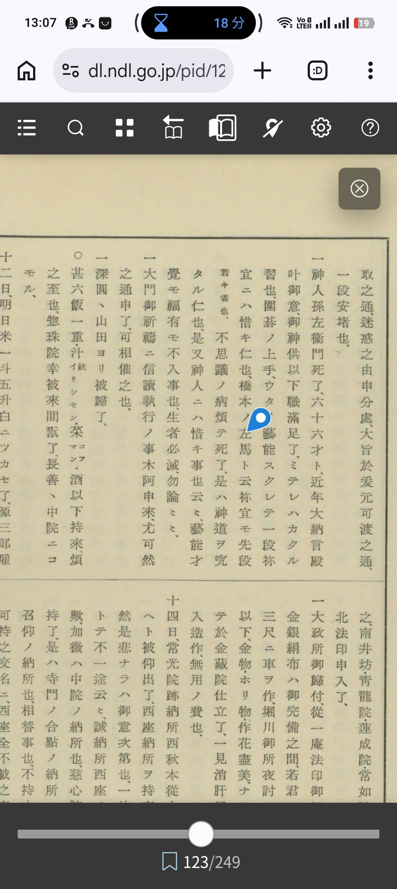
仮系譜：発志院（ハシノ院）系 → 橋本兵作
仮系譜（要旨） — 発志院（ハシノ院）系 在地家 → 橋本兵作
発志院（大乗院門跡の院家）に付属する在地被官・神人（祢宜）層 →（制度的継承）→ 横田庄／発志院の下司・沙汰人層 → （戦国期の具体名）橋本 弥六（天正10年 = 1582）／橋本 左馬（祢宜、天正18年） →（近世）橋本 喜久右衛門（公事方） や（幕末）橋本 政方（與力） や（養子系）橋本藤一（政孝、二階堂流藤原氏出身（中條氏）） や（幕末）橋本 兵作（士族、明治九年三月没）
総合的な評価：現時点での最良推定。発志院＝ハシノ院の制度的関係と、16世紀以降の多聞院日記・近世家譜等が整合。
G0 （制度的起点）
発志院（發心院／ハシノ院）───（大乗院門跡に付属する院家）
根拠：大乗院寺社雑事記・大乗院領研究（門跡相承の制度）。
G1 （中世〜室町期の在地被官層）
在地被官・沙汰人（無名世代）───（機能）荘園管理／供米・法会料所の現地運営
根拠：横田庄・発志院関係史料（大乗院文書、郡山史）。
G2 （戦国期：一次名出現）
・ 橋本 弥六（はしもと やろく） — **天正10年（1582）**：多聞院日記（納所割当に「廿乃橋本弥六殿」）。
役割：納所／寄進割当に名を連ねる在地実務者。
根拠：多聞院日記 第5巻（一次）。
・ 橋本 左馬（はしもと さま） — **天正18年（1590頃の記載）**：多聞院日記に祢宜（神人）として死亡記事。
役割：祢宜＝神職（春日系の神事担当）。
根拠：多聞院日記 第4巻（一次）。
（注）弥六と左馬は同地域・同日記体系で出現。神職（祢宜）と納所担当が同一家に混在するのは、院家配下の在地家の典型パターン。
G3 （近世）
・ 橋本 喜久右衛門（江戸期） — 公事方等、発志院／寶庫関係の実務に関与。
根拠：国史論纂等、寺社記録（近世二次＋家伝）。
G4 （幕末）
・ 橋本 政方（與力） — 与力職、家督的役割。
根拠：近代系譜・近現代伝記（類聚伝記、大和人物志）。
G5 （養子関係）
・ 橋本 藤一（政孝） — 二階堂流藤原氏中條肥次長男で橋本家へ養子、当主を継承（文政5年生〜明治19年没）。
根拠：大和人物志、
国会図書館のページへ

G6 （幕末〜明治）
・ 橋本 兵作（永世家禄（奈良県立情報図書館の職員がデジタルフィルムの現物を確認済み）（奈良県立情報図書館、マイクロ情報:有、フィルムID:811013157資料ID556000114請求記号1M710d所在書庫１、
奈良県立情報図書館へのリンク）、明治七年二月ヨリ八年七月ニ至ル 旧郡山県之部 家禄奉還願（発志院で唯一の士族が橋本兵作である）（奈良県立情報図書館フィルムID:811013157、p.144）より）士族、発志院在住（戸籍謄本））（明治九年三月没）
主要出典（抜粋）
多聞院日記（第1,4,5巻） — 天正期の個人記事（一次）
大乗院寺社雑事記／大乗院文書（門跡・発志院関連）
地下家伝 索引（日本古典全集） — 坊官名簿等の索引
国史論纂、発志院文書目録（橋本兵作が年寄兼務）、永世家禄（奈良県立情報図書館の職員がそのデジタルフィルムの現物を確認済み）（奈良県立情報図書館、マイクロ情報:有、フィルムID:811013157資料ID556000114請求記号1M710d所在書庫１、
奈良県立情報図書館へのリンク）、
明治七年二月ヨリ八年七月ニ至ル 旧郡山県之部 家禄奉還願（発志院で唯一の士族が橋本兵作である）（奈良県立情報図書館フィルムID:811013157、p.144）より）、類聚伝記（近代伝記）
注：本系譜は「今ある史料に基づく仮系図」です。墓碑・永世家禄原本（奈良県立情報図書館の職員がそのデジタルフィルムを確認済み、奈良県立情報図書館、マイクロ情報:有、フィルムID:811013157資料ID556000114請求記号1M710d所在書庫１、
奈良県立情報図書館へのリンク）、明治七年二月ヨリ八年七月ニ至ル 旧郡山県之部 家禄奉還願（発志院で唯一の士族が橋本兵作である）（奈良県立情報図書館フィルムID:811013157、p.144）より）・戸籍等の一次資料で確定できます。
橿原市史 史料 第1巻所収の嘉応元年（1169年）十一月十九日東大寺・興福寺間の箕田庄所役裁定文書。発志院を地主とし、代代院主の無妨害、恵印の押取と陳状で地主発志院・負処興福寺進官・東大寺雑役免を記し、東大寺役勤仕を命じる。知院事・別当修理左宮城使左中弁兼文章博士藤原朝臣などの花押を含む寺領争い史料。
橿原市史 史料 /第1巻（686項、国会図書館デジタルコレクション有り、請求記号GC176-E6書誌ID000001902133）
国会図書館へより引用→
一可早令動仕箕田庄所当香菜役事
副下去年六月廿三日東大寺下文案一通
右、彼寺去年八月日解状偁、当庄者当寺建立以降、大仏御仏聖、元代代聖皇以供御稲被分献、於御菜者、以公田三百六十町、毎日供奉年尚、仍代代国司免除所当公事臨時雑役、為往古例之上、去寛弘・万寿被下宣旨畢、然而依為浮免、有旁煩之日、以承保三年定坪被下宣旨、被立券、為永代之寺領、于今所勤仕所役也、依之故大殿下御時、当国撿注之刻、又任旧例被注除已畢、為寺領之条、古今不易沙汰也、則当庄其内也、証文其数也、由緒有限、随即発志院代代院主全無致妨、而近年恵印始為押取庄民之作手、企相論之間、打留恒例寺役、然而依為領主之靜、寺家強不左右、別雖不進寺解、動対捍所役、爱恵印申状云、於寺役者依為興福寺進官免、有制止之故、不能勤仕者、於此条者、於彼寺比技文書、任道理如本可為東大寺領之由、被裁定先畢、兼又領主条、寛弘之比、彼院主仲安出沙汰之日、当寺所司鴻助依陳申子細、被成長者宣之次、為香菜免之由、又被仰定之後、于今敢無異論、而恵印巧新儀、云作手云負所、恣所致濫妨也、就中沙汰之間、為寺領之由恵印証文度度也者、先於寺役者任先例早可被令勤仕、於領主相論者、理非見于両方申状、且又可被召決彼此之者、大法師恵印今年五月廿二日陳状偁、件田畠者、地主者発志院也、負処者御寺進官、 又東大寺雑役免也、既於負処者、可任両寺左右、然非地主進止事敗、仍相待両寺裁報之間、東大寺所司可勤仕東大寺役之由訴申、責勘尤重、随其催可勤仕東大寺役之旨申畢、于今其役无懈怠勤仕、但自彼寺所送下文状云、若自御寺於有進官役催時者、可致其沙汰者、仍其下文状別紙注之、然則自御寺公文所无御制止之間、可動仕東大寺役之由存知仕、全無關怠勤仕之処、不勤仕之旨被訴申条、訴訟趣非他、只於地主慧印致責勘歟、若爾言語道断非理訴也者、如恵印陳状者、地主者発志院也、負所者興福寺進官、又東大寺雑役免也、然者自興福寺無制止之間、可動仕東大寺役云云、宜以発志院為地主、先令勤仕東大寺役、於興福寺進官者、自本寺出訴之時有左右者（可脱ヵ）、以前両条、依長者宣、所仰如件、不可違失、故下、
嘉応元年十一月十九日 知院事大蔵録高橋(花押）
別当修理左宮城使左中弁兼文章博士藤原朝臣(花押)民部丞藤原(花押)
蔭子藤原(花押)
知院事刑部録惟宗
大蔵録安倍
宮内録大江
右史生高橋(花押)
高橋
平安遺文古文書編第七巻所収の長寛二年（1164年）八月廿五日大和國箕田莊文書目錄。大仏香菜免箕田庄等證文の巻数・内容を記し、箕田庄内無發志院領不見之由の巻を挙げ、発志院領不存在を示す東大寺文書。
平安遺文古文書編第七巻（470項、国会図書館デジタルコレクション有り、請求記号210.36-Ta573h書誌ID000000851387）
国会図書館へより引用→
三三〇三 大和國箕田莊文書目錄 東大寺文書四ノ八十六
(端裏) 「四卷」
大佛香菜免箕田庄等證文事
合四卷
一卷十八枚定坪付寺牒、國判、康和二年、見彼五町寺領之由、
一卷廿四枚代代寺牒國判 至天喜之、見箕田庄往古三〇町之由、
一卷九枝香菜免官物國撿田付寺家證文、濂和已後至天承
一卷九枚箕田庄內無發志院領不見之由、保延康治比、
已上
右當免文書、雖有其數、且所撰進如件、
長寬二年八月廿五日 (花押)
真宗教団開展史 (畝傍史学叢書)所収の別当・小別当記述。大乗院末寺福寺で門跡が別当職を有し、小別当を奧發志院持之として派遣維持。他門進出防止のための末寺別当補任権と門跡管理を論じ、横坊善久房・東林院僧正許可の例を挙げる寺社制度史料。
「小別当」「少別当」について、真宗教団開展史 (畝傍史学叢書)（75項、国会図書館デジタルコレクション有り、請求記号188.7-Ka494s2書誌ID000000906885）
国会図書館へより引用→
また、大乗院寺社難事記文明十年十二月廿三日の條には、横坊善久房福智院地蔵堂坊主ニ成之、今日入院了、當堂別當東林院僧正許可也云々、とあり、又、興福寺末寺長谷寺堂社新宮三社の神主は「自別當補任之」して居り、その補任権は長谷寺別當の有する所であった。また、大乗院末寺福寺は「此寺、當門跡別當也」とて、本寺の門跡が末寺の別當職を自ら有して居た。かいる場合は、「小別當真發志院持之」とて小別當を派遣して、之れを維持したのである。かくの如く、門跡自身別當職を有する末寺は、相當の收入があり、又、由緒ある寺であったのである。大乗院末寺薬師寺も、その別當職は門跡の有する所であり、別當職に附隨する收入は莫大なものであった。 その事については、末寺の性格の所で述べるつもりである。又、當、福寺は「藤家氏寺三个内也」と云ふ、由緒ある寺であつた。それ故に末寺は、「自然號有不足之儀改宗旨、代々相傳弃捨諸家餘流興行停止」されて居り、また「諸末寺等本寺可為進退、或領主或代官等本寺不經案内」には、されて居り、また「諸末寺等本寺可爲進退、或領主或代官等本寺不經案内」には、自由の計は不可能であつた。又、寺院並びに寺院領が寄進される場合、必ず「於當庵主職撰仁可爲本寺住計」き事も規約されたのである。以上の如く、本寺は末寺の別當職の補任権を自己の手に所有したのであるが、然らば本寺は、如何なる人に末寺の別當職を補任したかと云ふに、前に少し觸れた如く、末寺の別當職の中、るものは本寺門跡が之れを有し、又は、本寺僧及び、末寺在住の僧で、本寺と宗派的に同一線上にある事を前提としてこれを補任したのである。かくして、維持される末寺は、宗派的には本寺と同一性格を有するのである。若し、何にかの不注意から他門の僧を任ずる事があれば、その末寺は他寺に奪はれる恐れが多分にあるからである。一例を上げれば、東大寺末寺長谷寺は「代々相承爲寺家之末寺東大寺僧次第相繼寺務執行」して来た寺であるが、正暦元年別當仁和寺真末寺を失なつた好例であることは、前述した所である。永以後、興福寺平傳律師の奪ふ所となったのは、その別當職を他門の骨に任命することによりて、故に極く止むを得ぬ場合の外は、寺領の庄務を他門の僧侶に扱はせる事はなく、夢窓図師語錄拾遺には、
とて、寺領庄園支配に於いて、近くの庄園は、寺僧に支配させるが、遠國の庄園でそれが出來ぬ所は、その人選に最深の注意を拂つて居るのである。そして、末寺の住持の選擇には一層の注意を拂ひ、「本寺長老三會院塔主井門弟老僧相共和會而請之門弟之中無其器」き時は止むを得ず、「他門之人」を任じ、それも「其寺規矩宜準本寺、一朝長者不可自态而行」るとの事を要求しての上であり、古者の云へる、「云千年常住一朝僧」と云ふ言葉を引用し「思」之」語拾ふ可しと、記して居るのを見ても、本寺が如何に末寺の喪失を恐れたかを物語るものであらう。
それは云ふまでもなく、末寺の住持の本寺よりの離脱は、末寺の喪失を意味し、末寺の喪失は寺領の喪失を意味し、寺領の喪失は、中世の諸寺院が等しく寺領庄園にその經濟的基礎を置きそれそして、自門領庄園内の末寺別當職を通じて、他門の勢力の進出を恐れたのみならず、權門、 勢家の勢力の侵入を防ぐ爲めにも、公文、政所等の補任の際、その詩文には、「若當莊内有可数申子細之時、毎事申入寺家、可仰成敗、若屬權勢家、若屬他寺他門,雖爲聊事不可致遠亂妨害事」との一條を加へる事を忘れなかった。か入る事貨については、第一章に於いて少しく觸れて置いた。
以上の如く、本寺は、本末關係の維持・強化の爲め、末寺の別當職を把握する事によりて、それに成功して来たのであった。
（略）
右の條々の請文に違背したならば、住持職は直ちに改められても「更不可申子細」との請文を出させて居る。また、大乘院寺社雜事記文明十年十二月廿三日の條には、
横坊善久房福智院地藏堂坊主成之,今日入院了,當堂別當東林院僧正許可也云々、とあり、又、興福寺末寺長谷寺堂社新宮三社の神主は「自別當補任之」して居り、その補任様は長谷寺別賞の有する所であった。また、大乗院末寺福寺は「此寺、當門跡別當也」とて、本寺の門跡が末寺の別當職を自ら有して居た。かかる場合は、「小別當奧發志院持之」とて小別常を派遣して、之れを維持したのである。かくの如く、門跡自身別當職を有する末寺は、小別常を派遣して、之れを維持したのである。かくの如く、門跡自身別當職を有する末寺は、相當の收入があり、又、由緒ある寺であったのである。大乗院末寺薬師寺も、その別當職は門跡の有する所であり、別當職に附隨する收入は莫大なものであつた。その事については、末寺の性
真宗教団開展史 (畝傍史学叢書)所収の別当・小別当記述。大乗院末寺福寺で門跡が別当職を有し、小別当を奧發志院持之として派遣維持。末寺の別当補任権と門跡管理を論じ、横坊善久房・東林院僧正許可の例を挙げ、他門進出防止のための制度を詳述した寺社史料。
「小別当奥発志院」など、真宗教団開展史 (畝傍史学叢書）（75項、国会図書館デジタルコレクション有り、請求記号188.72-Ka71ウ書誌ID000000665088）
国会図書館へより引用→
右の條々の請文に違背したならば、住持職は直ちに改められても「更不可申子細」との請文を出させて居る。また、大乘院寺社雜事記文明十年十二月廿三日の條には、
横坊善久房福智院地藏堂坊主成之,今日入院了,當堂別當東林院僧正許可也云々、とあり、又、興福寺末寺長谷寺堂社新宮三社の神主は「自別當補任之」して居り、その補任様は長谷寺別当の有する所であった。また、大乗院末寺福寺は「此寺、當門跡別當也」とて、本寺の門跡が末寺の別當職を自ら有して居た。かかる場合は、「小別當奧發志院持之」とて小別常を派遣して、之れを維持したのである。かくの如く、門跡自身別當職を有する末寺は、小別常を派遣して、之れを維持したのである。かくの如く、門跡自身別當職を有する末寺は、相當の收入があり、又、由緒ある寺であったのである。大乗院末寺薬師寺も、その別當職は門跡の有する所であり、別當職に附隨する收入は莫大なものであつた。その事については、末寺の性
多聞院索引など所収の発心院善堯房関連仮説。発心院善堯房（良乗、法眼）を二階堂分流末茂流とし、兄圓玄（大僧正、興福寺別当、東北院）の弟として位置づけ、門跡・院家相承と橋本（坊官・沙汰人・神人）の在地系列継承を推定した系譜史料。
仮説2
多聞院索引より引用で、発心院善堯房（187項、国会図書館デジタルコレクション有り、請求記号210.48-E38t-Tk書誌ID000000871371）
国会図書館へのリンク
→大乗院寺社雑事記総索引 上巻 (人名篇)（198コマ、国会図書館デジタルコレクション有り、請求記号GB231-E1書誌ID000001910703
国会図書館へのリンク
）で、良乗は法眼で法名は善堯房→新編纂図本朝尊卑分脈系譜雑類要集 第5巻 (故実叢書 ; 第3輯)（56項、国会図書館デジタルコレクション有り、請求記号288.2-To388s書誌ID000000893848）
国会図書館へのリンク
で、二階堂分流の末茂流で良乗（兄の圓玄は大僧正で興福寺別當かつ東北院という記載）。
●簡略図（仮説2）
興福寺別當（摂関家・門跡の高位）───弟が（あるいは縁者が）發心院の院主（良乗＝善堯房）
↓（門跡が院家を相次承／院家の菩提・検校所職の配分）
大乗院／發心院と結びつく「院家系列」（例：二階堂分流末茂流）───（院家の内部・被官として）
↓（院家を支える坊官・付属家／在地の実務者）
橋本（＝院家に付随・従属した坊官・沙汰人・神人など）→ 近世以降に当主名が残る、冷泉家と現在も深い交流がある。
大日本史 一百二十八所収の洞院家系譜。実兼弟参議実俊を橋本家祖とし、公衡・公宗・実俊・公重などの大臣職継承と建武中謀反・北朝事跡を記す。橋本家の祖先を示す家系史料。
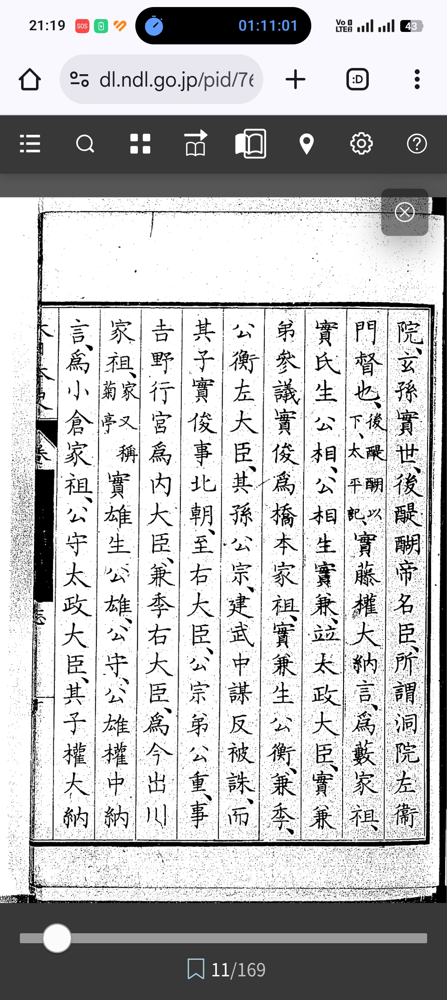
大日本史 一百二十八（11コマ、国会図書館デジタル有り、請求記号105-1イ、出版年月日明治40.3、
国会図書館の大日本史 一百二十八へ）より引用→
院玄孫實世、後醍醐帝名臣所謂洞院左衛門督也、實藤權大納言、為數家祖實氏生公相、公相生實兼、益太政大臣實兼弟參議實俊為橋本家祖、實兼生公衡、兼季、公衡左大臣、其孫公宗、建武中謀反被誅、而其子實俊事北朝、至右大臣、公宗弟公重、事吉野行宮為內大臣、兼李右大臣、為今出川家祖言為小倉家祖、公守太政大臣、其子權大納
鎌宝蔵院槍術所収の宝蔵院財政難記述。胤風急逝後、後見長性房行英が満田家に運営権譲渡、胤憲の継承で無住時代終了。橋本喜久右衛門が奈良奉行所仲介役として宝蔵院流槍術の上覧披露に関与、地域・幕府交流を示す橋本関連史料。
鎌宝蔵院槍術（請求記号FS37-243書誌ID000001537101）より引用
次のページへより引用→
宝蔵院は、胤風の急逝によって深刻な財政難に陥りました。遺言により後見となった長性房行英は、窮状打開のため実家である満田（みつた）家に救済を求め、寺の運営権や屋敷・武具を満田家へ譲渡し、中御門胤武の名跡を満田家が継承することになりました。しかし満田家に適任者がすぐに見つからず、宝暦六年（1756）に満田家の権右衛門胤勝の三男・胤憲が十一歳で出家して後を継ぎ、長年続いた無住の時代に終止符を打ちました。この間、多くの古文書や什物が失われたと伝えられます。胤憲は成長して宝蔵院の院主となり、境内の社殿再建や門人の結束に尽力しました。奈良奉行所との関係では、橋本喜久右衛門が仲介役となり、幕政期の武術上覧で宝蔵院流の槍術が披露されるなど、地域と幕府役人との交流も深まりました。
62
大乗院寺社雑事記 第4巻（文正元年六月）所収の横田庄人夫記述。今出川殿・田能村法眼への大和瓜進上に関し、横田庄人夫（発志院関連）の動員を示す門跡公事記録。
横田庄人夫。
大乗院寺社雑事記 第4巻（文正元年六月）（73項、国会図書館デジタルコレクション有り、請求記号210.46-D18-T書誌ID000001062235）
国会図書館へより引用→
文正元年六月十三日
一五重門讀誦之慈恩法樂、
一京上瓜十合今出川殿、五合田能村法眼宰領慶力、横田庄人夫·若槻庄人夫·大市庄人夫、大和瓜十合進上仕候可然樣可令披露給、尋尊恐惶謹言,
六月十三日
人々御中
大和瓜十合四籬、御進上候可被取進候隨而雖左道至候二籠被遣候之由被仰出候也、恐々謹言、
六月十三日 尊譽
田能村法眼御房
一日次瓜八十到來,先口共三合二十合也。
一夜入安位寺殿入御、古市御共、高田瓜井植被持
※分析注：橋本家の拠点である「横田庄」の人夫が門跡の公事（瓜の進上）に動員されている実態を示す。
63
講座日本荘園7近畿地方所収の大和国横田荘構造と変遷。添上郡発志院町一帯の興福寺子院発志院領として成立、仲安院主の東大寺紛争、鎌倉期実尊・円実継承による大乗院領転換、嘉元四年検注、均等名制度、応仁期村落変革で発志院村形成を示す荘園史。
講座日本荘園史 7 (近畿地方の荘園 2)（国会図書館デジタルコレクション有り、出版年月日1995.3請求記号GB245-E5、
国会図書館へ）より引用→
# 大和国横田荘の構造と変遷
## 荘園の概要
添上郡に位置した横田荘は、現在の大和郡山市発志院町一帯にあった中世荘園である。当初は興福寺の子院である発志院の所領であったが、13世紀初頭に大乗院の支配下に入り、16世紀末まで継続した。
## 成立過程
発志院領としての具体的な成立時期は明確でないものの、寛弘年間(1004-1012)には既に荘園の原型が存在していたと推察される。この時期、発志院院主の仲安が東大寺との間で香菜役納入を巡る紛争を起こしており、当地における領主的地位を有していたことが確認できる。
紛争の背景には、この地域に東大寺の香菜免荘園が重複して存在したことがある。この対立は藤原氏の氏長者による裁定で一応の決着を見たが、12世紀後半には東大寺への寺役納入が滞るようになった。
## 大乗院領への転換
発志院院主の地位は、鎌倉初期に実尊(松殿基房の子息)に継承された。実尊の死後、その弟子である円実(九条道家の子息)が院主職を継ぎ、これにより発志院は大乗院の兼帯するところとなった。こうして横田荘は大乗院領として組織されることになる。
## 嘉元四年検注の実施
嘉元四年(1306)から翌年にかけて、大乗院は菩提山正願院の僧である印専・頼因に命じて検注を実施させた。この検注により作成された諸帳簿は、以後の荘園支配の基本台帳となった。
主要な帳簿として、取帳(耕地の実態調査記録)、土帳(簡易な絵図)、名寄帳(名単位の整理台帳)、目録(支配・収取の大枠を示す台帳)が作成された。
## 荘園の地理的特徴
横田荘は大和盆地東部のほぼ平坦な地域に立地していた。北側には菩提仙川が流れ、これが若槻荘などとの境界となっていた。耕地は田地が畠地を大きく上回り、畠地は灌漑条件の悪い場所に帯状に分布していた。
14世紀初頭の段階では集村形態ではなく、散村ないし疎塊村の様相を呈していた。荘の中心は「庄垣内」と呼ばれる地域で、ここに正福寺と八王子社が所在していた。
## 均等名制度の構造
検注の結果、荘内には十個の名(七つの完全な名と六つの半名)が編成された。各名の規模はほぼ均等で、約2町3反程度であった。この均等名制度の主な目的は、人夫役などの課役を円滑かつ公平に徴収することにあったと考えられる。
名の構成は、必ずしも名主個人の所有地のみからなるのではなく、複数の荘民の所有地を組み合わせて編成されていた。一名あたり平均4、5人の所有地から構成されていたと推定される。
## 年貢と公事
年貢は定田畠から徴収され、総額は122石余りであった。室町期にはこれが「定米36石」と「御米84石」に区分された。定米は発志院の仏事・法会費用として用途が特定されており、御米は門跡の裁量で使用された。
公事としては、瓜代銭、歳末銭、草用途、ワラ、コモ、柴などが反別で賦課された。しかし均等名制度の主眼は、これら金銭的公事よりもむしろ人夫役の円滑な徴発にあったと考えられる。
## 負所の存在
荘内の一部の田地には、大乗院以外の負所が得分権を有していた。最大のものは興福寺寺務機関への進官田で、8町7反余に及んだ。その他、福田院、不退寺、勧学院なども負所として田地に対する得分権を保持していた。
これらの負所は、律令制以来の要脚田や免田の名残りと判断される。先進地帯に成立した畿内荘園の特徴として、古代の土地制度の痕跡が刻まれていたのである。
## 応仁期の村落変革
15世紀後半の応仁・文明期に、横田荘は大きな変革を経験した。この時期、荘民の多くが隣接する一乗院領中荘内に移住し、そこから横田荘へ出作する状況が生じた。
これは両荘の荘民が共同で環濠集落を形成したことを示唆している。同時期に荘内には新たな溜池が築造され、灌漑体系の全面的な再編が行われたと推定される。散居形態から環濠集落への集住は、生産条件の向上と安全な生活の確保を目指した在地の主体的行動であった。
その後、横田荘民は独自の環濠集落を建設し、発志院村として独立した村落を形成していく。荘園領主の統制力は後退し、村落の再編は在地社会の自律的な動きとして展開されたのである。
---
以上、横田荘の成立から中世後期の変容まで、荘園構造の特質と歴史的展開を概観した。均等名制度や負所の存在、そして応仁期の村落変革など、中世荘園社会の諸相を具体的に示す事例として重要である。
64
寺社荘園の成立と領有要約。寺領荘園の末寺・院家制度、門跡寺院の宗教的権威による支配と経済基盤、三宝物互用禁止、籠名・神輿動座の制裁手段を論じ、門跡特権的地位と院家相承を示す寺社史。
寺社荘園の成立と領有
注記:講座日本荘園史 2 (荘園の成立と領有)（国会図書館デジタルコレクション有り、出版年月日1991.2請求記号GB245-E5、
国会図書館へ）からの知見に基づく
著作権に配慮し、原文の内容を要約・解説する形で文章を作成いたします。
---
**寺領荘園における宗教的権威と経営システム―門跡寺院の特質について**
中世の寺領荘園経営に関する学術研究によれば、寺院が所有・管理する荘園には、世俗領主の荘園とは異なる独特の支配構造が存在していました。
**寺院経営の基本構造**
寺院では、本寺と末寺の関係が重要な意味を持っていました。研究によると、末寺は単なる宗教的な従属関係にあっただけでなく、経済的にも本寺を支える「寺財」の一部として認識されていたことが史料から確認されています。末寺からの年貢は本寺の法会や維持運営に不可欠な財源となっており、本寺はこの収入を確保するため、時には朝廷に訴訟を起こすほど末寺領の支配権を重視していました。
**院家制度と財政運営**
寺院内部では「院家」と呼ばれる組織単位が形成され、これらが寺領荘園の経営を請け負う体制が発展しました。院家は寺院政所からの委託を受けて荘園経営に参画し、その経済力が寺院全体の財政を支える重要な役割を果たしていたことが指摘されています。
**宗教的権威による支配**
特筆すべきは、寺院が「籠名(ろうみょう)」という独特の制裁手段を持っていた点です。これは、年貢未納などの違反に対し、対象者の名前を堂内に籠めて呪詛する行為で、宗教的恐怖による強制力を発揮しました。また「神輿動座」という、神輿を朝廷に担ぎ込む示威行動も、寺領回復のための強力な手段として用いられていました。
**三宝物の理念と「互用」禁止**
寺院財産は「三宝物」(仏宝・法宝・僧宝に属する財産)として、他目的への流用(互用)が戒律で厳しく禁じられていました。寺院側は、この原則を根拠に、国司による寺領への課税なども「互用」の罪として批判する論理を展開していたことが史料に記録されています。
**門跡寺院の特権的地位**
こうした寺院経営システムの中で、特に皇族・摂関家出身者が住持する門跡寺院は、強固な宗教的・政治的権威を背景に、末寺ネットワークと荘園経営を通じて、世俗の権門に匹敵する経済基盤を確立していました。門跡寺院の血縁関係者や関係者は、この特権的地位の周辺に位置づけられる存在であったと考えられます。
**まとめ**
以上の学術研究が示すように、中世の寺領荘園は、宗教的権威・戒律・本末関係・院家制度などが複合的に機能する、世俗荘園とは本質的に異なる経営体系を持っていました。門跡寺院に連なる家系を主張する場合、こうした寺院社会特有の構造的背景を理解することが重要です。
65
平安遺文第10巻所収の補遺文書。寛治四年-永長元年の土地取引で、源太郎賣渡了の坪内中貳段、發志院肥前君の買得と沽却、僧快智の賣人花押を含む田地賣券。他の刀禰乙犬丸解・田畠讓與など源太郎関連の譲渡・免除請願を示す平安期荘園史料。
平安遺文第九巻（162コマ、国会図書館デジタルコレクション有り、請求記号210.36-Ta573h出版年月日1957国会図書館へリンク）より引用→
下記の情報は平安時代の源太郎についての情報で「〇〇」の箇所は塗りつぶされてる箇所で、付記事項は括弧書きで示してます。平安遺文第10巻より→
①1つ目の取引→ 補遺ノ二(寛治四年-永長元年)
先例〇〇奉下之狀如件、
寬治四年〇〇
大祝大舍人〇〇 宮司正六位上吉美侯〇〇
「吉田宮印」 十二アリ。
●四六五五 山城國八瀨刀禰乙犬丸解 青蓮院吉水藏菩薩釋義紙背文書
八瀬刀禰乙犬丸解 申請靑蓮房價都御房政所裁事請被殊蒙慈恩、任本免除道理、事子細令申大僧正御
室給、早令免除俄杣夫役充責凌、不安愁狀、
右、乙犬丸謹撿案内、年來之間、爲彼里刀禰職、尤偏所被免除雜役也、然今年始俄充負杣伐夫役、所被責凌櫟、甚以非例尤深、只寺家下部等上下之間、供給等勤仕之、於此杣条者、爲愁不知之、叉子童太郎丸、爲彼里交衆、勤仕座役、主酒肴事六度也、然秦重行无指座役酒肴之勤、常論企座条、甚无其謂、如此所ハ、以座役功勞、所号座土也（マ、）、望慈恩、任道理、子細令申徹大僧正御室給、且被免除件柚役、且又被停止件重行非道座論、如本道理、被令著座者、將仰正道之貴、彌知御威之强、〇〇(勒カ)事子細、謹解、
寬治六年九月三日 刀禰乙犬丸
●四六五六
讓與 田畠事
合參拾參町者 字井上庄
在山邊郡北鄉六条村
右、伴田畠者、僧院照之相傳私領也、而於本券者、以天喜二年之比、藤原季高盜取、構成謀書、爲已身之指過新、指置於貴家之由風聞、雖然在地證署明鏡也、相具紛失狀、依爲入室弟子、永讓與價彙與畢、早致沙汰可領掌之狀如件、仍爲後代證驗、讓狀如右、
永長元年五月十八日 價在判
●四六五七僧快智田地賣券 角田文衛氏所蔵文書
〇〇所領田壹段事
（「此坪內北端貳段社部宮童賣渡了、」） 三条四坊柒坪南邊者 （「此坪內中貳段源太郎賣渡了、」）
〇〇者、發志院肥前君御手自限直伍〇〇地所買得也、而依有急用、沽却於〇〇院畢、仍爲後代證驗、新券文〇〇至本公験者、依有類地、不能副渡〇〇分文、以解、
承德二年十二月五日
賣人價(花押)
(裏)「快智」
全紙面ヲ×ニテ消シ 「東大寺印」八アリ。
●四六五八 東大寺般若會支度下行日記 東大寺新收文書
(端褒)「般若會支度」
般若會料方~下物日記
合
三斗御佛供 五石樂人雙新
六石八斗例堂供 桶三口敷設運食料
口別三升四合恒例二升一帖（マ~）
桶六柄樂人菜料 桶八柄二口樂人草手料
桶四柄四口執蓋沓手料 桶二柄二口執盖饗料
六斗佛後掃除食新若桶殿 庭造工食料 桶二柄三口
已上米十二石一斗 桶廿五（六）（こ）柄一口
康和二年九月
—---
花嚴會支度
（正吉）中樂饗料七石六斗一 升五合四夕、但二度料、可下七石
祿十石 爲忠沙汰
（友正）中樂开天人等日中饗九石一升六合可下七石 信正沙汰
（爲國）小沸二石一斗二升七合一夕（八）（こ）如員可下敷 久時沙汰
（本正吉）勅樂饗二度料十石三斗七升之菅直三石（可下七石）二斗五升 （正吉沙汰）
（吉忠）造花人石七升五合之中紙廿帖代三石（可下五石）吉忠沙汰
②2つ目の取引→ （延久五年なるべし。）
●補一七七 傳燈大法師覺曜申文案 青蓮院所藏文書
傳燈大法師覺曜誠惶誠恐謹言
請被殊蒙 鴻恩、先師賴慶所領田畠任付屬旨、賜
寺家 御判 〇〇
在近江國神埼郡垣見〇〇鄉等（小祓二）
四至在本公驗、
右、謹檢案内、件田畠者、先師賴慶買取〇〇(之ヵ)後、領掌年望請尙矣、而賴慶以永保元年永〇〇覺醒既了、（望請）今又賜寺家任御判（任付屬旨、賜者將）欲（こ）爲永代公驗、覺隆誠惶誠恐謹言、
應德二年九月九日 傳燈大法師覺〇〇
●補一七八
陸奥守源義綱書狀動 九條家本九條殿記裏文書 罷下之後、依神拜并御馬營、于今所不申事之由也、爲恐~、抑源〇〇（前司ヵ）分附帳、館燒亡之次、燒〇〇已了、殿邊許文書等〇〇所被仰也付助經可下〇〇、尤所望也、恐恐謹言、
(寬治七年ヵ) 正月五日 陸奥守源(花押)
謹上 前兵衞佐殿
（源義綱、寛治六年末に陸奥守に任ず。）
●補一七九 僧俊慶田地處分状 大東急記僧俊慶田地處分狀念文文書
處分
寺邊田事
（「此坪內中貳段源太郎賣渡了」）合伍段在左京參條建坊柒坪內（「此坪內北端貳段物部宮童賣渡了」）
右件田、先師故北院僧都未處分之內也、今處分深禪君、至于本券、依有類地、不副渡、但存日處分有相違之日、可改充他人之狀如件、
嘉保三年正月廿七日
大法師「俊慶」
（「東大寺印」八丁アリ。 紙面×ニテ消印アリ。）
●補一八〇-一九一 九條殿造營文書 九條家本九條殿記裏文書
可召立石人~
別當使師行 二位中納言
右衛門督使輔範 帥中納言使貞之
中宮權大夫 右大辨
顯實朝臣 兼實朝臣
長忠朝臣 宗信朝臣
忠教朝臣 家政
行信 懷季
忠仲 家道朝臣
顯仲 家定
今月之中可令運也、
（補 永長二年）
—-------
召立石人~
諸大夫
能遠朝臣 清家朝臣
知家朝臣 惟信朝臣
盛實 經敏
說長 惟輔
敦遠 俊清
爲隆 朝輔
基綱 棟忠
說定
今月之中可令運也、
—-----
可召立石人~
別當使師行 二位中納言
66
橋院信長春日社記録から文永十二年五月の神事記述。橋院信長房得業藝文の僉儀召喚、御遷座次第・神寶奉出を記し、中臣祐賢・神主泰道の役割を示す社家記録。
橋院信長春日社記録 [第1] 第2 (日記 第2)（248項、国会図書館デジタル有り、請求記号175.965-Ka558k書誌ID000000880843、国会図書館へ）より引用→
文永十二年五月
二〇中臣祐賢記
五月十四日 神主泰道
神主泰道
追申
若宮神主殿同可令存知給候、謹言、
一今日十五日、了賢房五師榮俊、爲寺家御使關東へ立畢、爲御使下向成五師了云々、
一同日、神主泰道蒙寺之御免畢、寺家へ歎申故云々、但集會、未事切也、
一今夕酉剋、自衆徒被命云、今夜亥剋、御遷座可爲必定之由在之、
御遷座次第、亥剋、
大眾參社、自六道止貝了、於南門如例三度同ス、舞殿ノ自東第三間ョリ僉儀在橋院信長房得業藝文兩惣官隨召テ勸寄庭中、祐賢、住吉明神邊二祗候、庭中二松明無之、遠例、社家所役欤之由眾命粗雖有之、先例不候之由令申間、中網羅出テ二行取之、僉儀終之後、社司參御前、自脇戶參御寶蔵、奉出御神寶之事正預祐繼、役送權官祐良、神寶者自南面廻テ持參御前、吐司、自脇戶參御前、其後、常住神殿守春明申祝、例座也、其後、神主泰道東帶、奉下御正躰、雄,御榊、神殿守等御橋ノ下二持立、處ニ奉侍御正肺之、二御殿正預祐繼東帶、三御殿權神主經世衣冠、四御殿權預祐家衣冠、每殿同前、御榊者葉ヲコイチ廣四手ヲ懸之、大社奉下之時へ、若宮御神寶御蔵ノ前二持立也、自一御殿次第二神寶各先立天出樓門入御移殿、御神寶各二行、御鉾左・御弓矢右、入御移殿、御神寶等役送近代有沙汰、氏人參勤之處、神人直二社司二渡之、逮例欤、祐賢中間二參入シテ、雖令申子細、無沙汰也、其後自東之簾比、各出テ、比裏へ廻テ、若宮神竇ヲ先立テ、廻廊之內ヲ南門へ出テ、若宮へ參、社司拜屋二祗候、祐賢者參入御内、神殿守春任申祝例座也、其後、祐賢御橋ノンヒへ參シテ、覆面ヲ垂之、奉下御肺、御棚ヲハ兼テョリ退了、春任持參御神之處、奉付御正躰了、其後、祐賢奉請取、奉渡移殿也、出南門ヲ、八講屋・舞殿作會ヲ御行アリ、二行-松明在之、兩惣官沙汰也、神人所役所從等、自南門西へ廻也、移殿,比ノ東向/簾ョリ入御、如大社奉祝畢、御神寶役送氏人祐春勤仕、其後、社司等住吉明神邊ニテ以常住神殿守等幹胺、大明神令奉下候了之由、中綱、申觸了、其後閑二可有退出之由、聊僉儀在之、先例也、其後退出了、移殿入御以前三守安中臣破勤仕也云々、若宮二八無其例也、「兩方ヲ策欤」、
67
大和志料 上巻所収の織田信長興福寺領調査記述。天正八年九月の指出、西發志院年代記を挙げ、惟任日向守・瀧川左近丞の寺領調査と上下萬民の指違無是非を示す信長政権下の寺社政策史料。
織田信長が興福寺領に指摘、大和志料 上巻（23項24項25項、国会図書館デジタルコレクション有り、出版年月日大正3請求記号348-226、国会図書館へ）より引用→
ヲ釜口ニ出ス・十九日幕府澤藏ヲ召シ更二丹後ヲ攻メシム。澤藏乃チ成兵ヲ當國二置京師ニ還ル國中ノ社寺多此時,兵火燒失セリト云フ。永正四年九月更赤澤新兵衛內堀新次郎等ヲシテ當國二入ラシム『十市、箸尾、楢原、筒井兵ヲ奈良出之ヲ拒ク、利アラス、十八日京軍東大寺二入ル、南都,地悉クコレニ占領セラレ院家在家概ネ打破セラル、又一軍、乾脇衆ヲ攻ム、片岡越智片岡等沒落。是二ボテ赤澤、郡山三、内堀、觀音寺、古市、大安寺三三好後、藥師寺二陣シ國中二號合セッ十一月十三日國衆悉ク蜂起シテ之抗ス赤澤兵ヲ分テ之ヲ討スルニ會兩畠山ノ和敗此間國衆ノ去就常ナクル擾亂セリ事、興福寺英俊法印永正年間ノ日記ニ詳カナリ。既ニシテ島山高政河內,守護トシテ高屋ニアリ、三好長慶事ヲ以テ高政ヲ悪ミ舍弟實休ヲシテ之ヲ攻メシム此時當リ大和ノ國衆、大抵畠山氏ノ爲メニ城守ス。永祿二年六月長慶其臣松永久秀ヲシテ大和ニ入ラシム先ッ郡山城ヲ陷レ進ンテ十市城ヲ攻ム、十市支フル能、ス身ヲ以テ多武峯ニ遁松永勢二乘慈恩寺秋山ヲ降シ之ヲ攻ム、利アラス、退テ兵ヲ泊瀬三輪櫻井二分チ再舉ヲ圖,此際安倍,文殊堂兵火ニ罹ル三年松永、南都眉間寺ニ城ヲ築キ之ヲ多聞城ト號ス。コレニ居リ時々兵ヲ出シ國衆ト戰ウ。八年五月十九日松永、三好,三人衆ト謀ッ將軍義輝ヲ弒ス既ニシテ三人衆松永ト隙アリ多武峯ト合力シ之ヲ攻メントス。九年五月松永出テテ河内ニ赴キシモ志ヲ得スシテ堺ニ入り再多聞城二還リシカ、十年十月三好,兵之レヲ討セントシテ來リ東大寺二屯ス松永襲フテ之ヲ敗リ終ニ伽藍ヲ火其顛末、椋橋東坊,天正十三年四月筆記二詳カナリ、宜ク本書就テ見ルヘシ十一年尾張,織田信長足利義昭ヲ奉シテ入洛シ近畿ニ號合スルニ及ビ松永款ヲ納信長命スルニ武力ヲ以テ當國ヲ取ルヘキヲ以テス松永因テ兵ヲ國内用と己レニ服セサルモノヲ攻ム是ョッ先き筒井順昭畠山氏二屬シテ數、松永兵ヲ交フルモ志ヲ得能ハス、卒スルニ臨ミ老臣一族二遺命シ子順慶ヲ輔佐シ松永ヲ滅スヘキヲ以テセラル。永祿十二年順慶松永卜法隆寺並松二戰爾後互二勝敗アリ。元龜三年信長命シラ和ヲ成サシム、國內暫ラク小康二屬セリ後チ松永事ヲ以テ織田氏二叛ク二及に織田信忠細川明智ノ諸將ヲ率キ順慶ヲ嚮導トナシ之ヲ信貴山城に攻ㄙ、城陷リ松永自殺ス。實三天正五年十月ナリ是ニ於テ松永,所領,當國二在ルモノ及北畠氏,麾下屬スル宇陀山邊三郡ヲ界ケ之ヲ順慶興フ。
信長ノ政ヲ近畿ニ行フャ惟任光秀瀧川一益ヲ遣、シ當國,土田ヲ檢覈セシム東大寺藥師院舊記ニ「天正八年十月庚辰當國《信長御內惟任日向守瀧川左近丞兩寺被相越興福寺成身院吉祥院ニアリテ一國の差出ヲ撰ラ昏書出年貢如何程卜算合アル也兩寺門跡院家無殘也跡家福也上下萬民之指違無是非次第也,又興福寺西發志院年代記三天正八年九月國々指出在之大大和國衆高田戒重大佛供生害」、見ユ。此時,調査ノ頗嚴密ナリシハ當時法隆寺ヨリ二將ニ提出セッ寺領ノ注進文ニテ知ラレタリ隆文職待信長嘗テ佛徒,横暴ニシテ土地ヲ隱蔽シ敢私慾ヲ貪ルヲ惡ミ大ニ削殺ヲ加ヘントシテ殊ニ二將ヲシテ先ッ其收入ヲ調査セシメシモ不幸弑逆三遭と之ヲ果サス他日豊臣秀吉全國ヲ檢地シ社寺ノ所領ヲ削減セシ八郎チ信長ノ志ヲ成セルモノナリ。光秀其君信長ヲ裁スルニ及と使ヲ筒井二來々タシ陷ハスニ利ヲ以テシテ己レヲ援ケシメントス。順慶老臣ノ策ヲ用キ竊二首鼠兩端ヲ持シ終三豐臣氏ノ恩ヲ市秀吉因ラ舊二仍リ當國ヲ順慶與十二年順慶卒シ義子定次嗣ク『十三年秀吉命シラ定次ヲ更二伊賀三封シ、舍弟秀長三大和紀伊和泉ヲ與〈郡山二治セシム。十九年秀長卒シ子秀俊嗣。文祿三年天死シ嗣絶ェ國除カレ増田長盛ヲ郡山二在番セシメ三國,政ヲ行ハシム。四年秀吉命シテ全國ヲ檢地セシム夫大化班田收授ノ制弛ミショッ豪族ノ兼併院家ノ隱蔽トナリ、田畝,反別歳入得テ詳カニスル能ハス。其當國ニ於ケルモノ、和名抄三田數一萬七千九百五町九段百八十步下記、色葉字類抄三八本田一萬七千七百五十町トアレトモ何レノ時ノ調査ニ依レルヲ知ラス東鑑太平記ニ據ルニ鎌倉幕府合シテ諸國,田交ヲ作ラシメシコトアルモ其書今傳ハラサレハ之ヲ知ルニ由ナシ是至り豊臣氏天下ヲ檢知シ當國ニ於テ四十四萬八千九百五十石ヲ得タリ其石率ニ依り計算ヲ加へ、田畝,概數知ルヘキナリ。
關原,役長盛敗走高野山三赴き郡山城主ナシ、徳川家康筒井ノ名族ニシテ血食セサルヲ悠ミ、族子定慶、慶之ヲ召シ二百石三十六騎宛ヲ附シテ郡山城三在番セシム舊臣稍來屬シ再に家名ヲ恢復セントスルニ方リ會、大阪難起レリ、大野主馬使ヲ郡山來々シ義故ヲ斜合シ來援セシメントス、定慶德川氏,恩義ヲ思之ヲ謝絶ス、大野怒り筒井ノ舊臣箸尾等ヲ嚮導トシ郡山ヲ攻ヌシム、定慶敵スヘカラサルヲ知リ郷里福住走り、慶之、南都隱ル、大阪/兵郡山ヲ燒更三南都三及ホサントス、家康伏見=在リ大和ノ動亂ヲ聞キ水野氏ヲシ
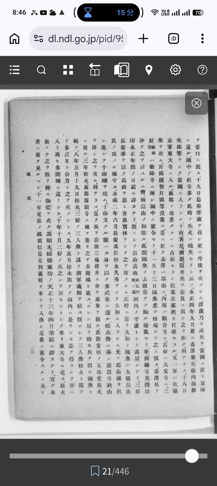
68
多聞院日記所収の西ハシノキン（西発志院）関連記述。天正六年正月の修正沙汰・餅、天正六年十一月の赤飯・大會方報答、天正八年十月の興尋專賢房死去、天正七年三月の報恩講、天正三年閏正月の仁王經など、西ハシノキンの法会・葬礼を示す寺社記録。
多聞院日記 第3巻(巻24-巻31)（3項、国会図書館デジタルコレクション有り、出版年月日昭10至14請求記号640-324、国会図書館へ）より→天正六年正月
十八日、大御堂修正出了、上七人也、專敎房、、迄御出了、餅卅枚在之、
一於大乘院轉讀大般若經在之、出了、六十人余被出了、
一日中後爲母儀大政所御見廻御上洛了、銀四枚渡了、
一ハシノキン修正沙汰之、餅八十枚被送之、十五枚支配在之、
午ノ日也、大導師沙汰之、三百文、フセ代六斗送之、出仕二斗ッ、在之、觀音繪像寶藏院ニテカル、餅玉遣之、木像南井坊ニ借之、堯蘭上了、
十九日、於觀禪院信讀經在之、出了、從曉大雨下了、
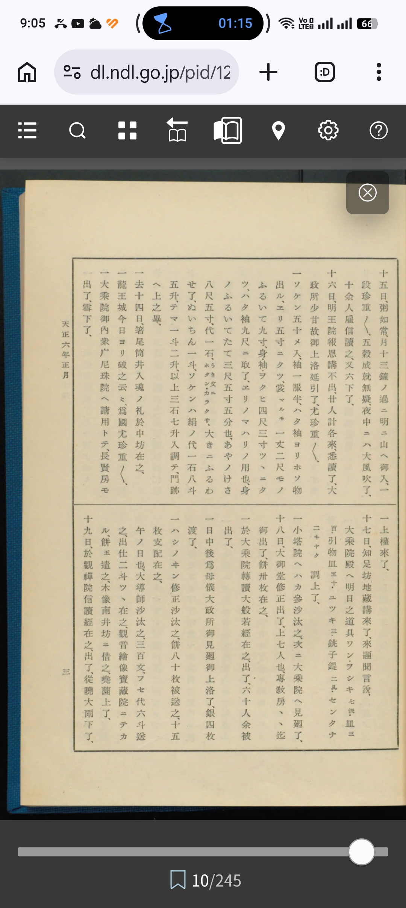
69
奈良県史第六巻所収の四寺僧領・官人領と香菜免庄・進官庄形成記述。寺僧・官人の負名、田堵の小経営、俗名（永富・常富）から寺僧への移行を示し、仮名使用と官人領の特徴を論じる荘園制度史料。
奈良県史第六巻寺院（18項、国会図書館デジタルコレクション有り、出版年月日1991.6請求記号GC174-84、国会図書館へ）より→四寺僧領・官人領と香菜免庄・進官庄の形成
四寺僧領・官人領と香菜免庄・進官庄の形成
前項の興福寺維摩会料所の御園では、寺僧、中・下級官人等が「主人」として「従者」をもっていた関係をみたが、 従者は「寄人」とも称されていたにしても、彼等はその田島(公田島)を公験によって「個掌」していたものでいわば田堵であったといえよう。
主人の寺僧や官人が負名と考えられることは前記したが、官人の負名としては大和では山村氏が有名となっている。 同氏の大田犬丸名(負田)についてはすでに稲垣泰彦氏等によって究明されているところであるが、氏は東和六年(一一四)の小東庄白米免田負所名注文案(「平安遺文」四の一五三三号)の分析「大田犬丸名の構成」のなかの註七で「彼等 (山村吉則子か)の所領経営が領主の直接経営ではなく、その下に独立した農民の小経営をふくんでいたことも泉谷氏をはじめ最近の業績の示すところ 彼等の所領は開発によるものではなく、その経営もほとんどは直接経営ではなかった。また所領から上る収入もさして大きいものではなかったろう」と述べていられるが、右のなかの「独立した機民の小経営」とは田堵のそれであろう。この点平治元年(一一五九)の小東庄名々坪付(『平安遺文」六の二九九八号)の「東大寺小東庄地主之田堵等」として「聖仏房僧都御房御田堵伴吉久」以下があげられているが、この伴吉久等から、田培は地主(負名)のもとにあった直接経営農民であったことがうかがえよう。寺僧は経営とは直接関係なかったであろうことは明らかである。また一二世紀の史料では小東庄の「地主」(負名)は殆んど寺僧に変ってしまっている。これに対し十一世紀では俗名の負名が多かった。右の山村氏の場合もそうであるが(もっとも大田犬丸は仮名)、前項の満照他都分付帳引用という東大寺雑役免荘の場合、和運庄については「永富負」、箕田庄では「常富」となっているなどがあげられる。進官庄でも五項のとおり「笠目小二郎」・「和常永」などがみえる。稲垣氏はこれら俗名は仮名であって実は寺であったろうといわれているが、仮名とすれば官人領の場合が多かったのではなかろうか。官人の仮名について戻谷氏は五位以上の私営田は禁止されていた関係で、当該官人の場合は仮名を使用したとされる。しかし一二世紀に入ると前記のとおり史料の上では寺僧儀の増加が見受けられる。この点小東圧でもいいうることであるが、「兵範記」保元三年 (一一五八)七月一七日条には「大和国併春日御社興福寺等負所寺他個知無一步公田(下略)」とみえる。しかし寺僧顔の構造をうかがわせる史料は案外少いようである。稲垣氏はそれとして永承二年(1〇四七)の高橋世犬丸田地売券(『平安遺文」三の六四六号)を引用していられる。同売券はつぎのとおりである。
70
大乗院寺社雑事記 第11巻所収の明應六年（1497年）二月横田庄公方御米未進記録。ハシノ㐄ン（ハシノキン）衛門九郎・大夫・七郎の米分量（五斗五升四合・九石一斗九升五合・二斗二升六合）を挙げ、沙汰人注進の荘園経済史料。
大乗院寺社雑事記 第11巻 尋尊大僧正記. 10-188(自長禄2年12月至永正元年4月)（122項、国会図書館デジタルコレクション有り、著者辻善之助 編・校訂請求記号210.46-D18-T、国会図書館へ）より→明應六年二月
廿九日
一屏風二双帳事専祐仰付之、
一人夫南方辰巳土上之・
一屏風二双ノ(タ直帳之、障子紙二東之内十二、 ・帖・障子六帖式タナフシ、
合四東二帖也、
一横田庄公方御米未進躰沙汰人注進之・給主取
進之、去年辰分、
一石五斗一升八合 タンコトノ
二石八斗二升七合 ミタトノ
四斗五升四合 コウトノ
二石八斗 （ヨシオカ）チフ
五斗五升四合 （ハシノ㐄ン）衛門九郎
合九石一斗九升五合 （ハシノ㐄ン）大夫
二斗二升六合 ハシノ㐄ン七郎
四斗六合（ナカンシヤリ）四郎
4石六斗沙汰仕分
合九石一斗九升五合
四石六斗沙汰仕分
二月廿五日 サタ人
以上利分一石三斗二升
都合十二石七斗二升
71天治二年
天治二年（1125年）太政官牒東大寺。別当職補任として權僧正法印大和尙位勝覺を宣奉、左大史・右中辨源朝臣師俊の署名を含む寺社人事史料。
大日本古文書 家わけ18ノ1（242項、国会図書館デジタルコレクション有り、出版年月日1947、国会図書館へ）より引用→
太政官牒東大寺
應補別當職事
權僧正法印大和尙位勝覺 右權中納言從三位源朝臣雅定宣奉 勅件人宜補彼寺別當者寺宜承知、依宣行之牒到准狀故牒
天治二年七月廿日從五位下行左大史彙算博士丹後介小規宿禰(花押)牒
從四位下行右中辨兼備前介源「朝臣」(師俊)(自署)
72.門跡と小別当
真宗教団開展史所収の小別当記述。門跡が末寺別当職を保有し、小別当を派遣して管理、相當収入・由緒ある寺を示す寺院制度史料。
笠原一男『真宗教団開展史』（畝傍書房、1942年）によれば、興福寺や大乗院などの門跡寺院においては、門跡自身が末寺の別当職を保有していた事例があり、門跡は「小別当」と呼ばれる代理人を派遣して寺院を管理させていた。門跡が直接別当職を持つ末寺は、相当の収入があり由緒ある寺院であったという。
出典：笠原一男『真宗教団開展史』（畝傍史学叢書）畝傍書房、1942年（国立国会図書館デジタルコレクションで閲覧可能）
73.橋本又右衛門など、橋本家
橋本家に関する事実。奈良奉行所与力代々、権兵衛政方（陶々斎）の高砂置物依頼、喜久右衛門政孝・平三政和・丈右衛門政済の伴林光平門下、北橋本氏・南橋本氏などの表記を示す家系史料。
橋本家に関する事実
- 家系：代々奈良奉行所与力を勤めた
- 橋本権兵衛政方（陶々斎）：嘉永2年(1849)から杜園に「高砂置物」を製作依頼
- 橋本喜久右衛門政孝：伴林光平の門下
- 橋本平三政和：伴林光平の門下
- 橋本丈右衛門政済：伴林光平の門下
- 杜園への鹿彫注文：安政4年(1857)～文久3年(1863)にかけて集中。この期間の注文の約3分の1を橋本家一統が占めた
- 記録での表記：「北橋本氏」「北橋本御氏」「南橋本氏」「池橋本氏」など
※出典：Museum (326)（24項、国会図書館デジタルコレクション有り、出版年月日1978-05請求記号Z11-186、国会図書館へ）
74.橋本権兵衛政方（陶々翁）に関する事実
橋本権兵衛政方（陶々翁）に関する事実。奈良奉行所与力・数奇者、嘉永二年高砂置物依頼、戒名致教陶盈居士、白毫寺近傍墓所、養子喜久右衛門（藤一、政孝）の宝蔵院流槍術達人・川路聖謨関連を示す個人史料。
出典：一条家領鹿背山焼（118項、国会図書館デジタルコレクション有り、出版年月日1993.2請求記号KB372-E71、
国会図書館へ）より引用→
橋本権兵衛政方（号：陶々翁）
- 職業：元奈良奉行所与力、数奇者
- 嘉永2年(1849)：還暦祝の贈り物として、森川杜園に高砂置物の製作を依頼
- 高砂置物：嘉永2年～嘉永4年にかけて計38軀製作
- 戒名：致教陶盈居士
- 墓所：奈良・白毫寺近傍の骨金堂墓地
橋本喜久右衛門（藤一、政孝、号：帯川、姓藤原本氏二階堂、二階堂流藤原氏中條肥次から橋本家へ養子）
- 関係：橋本権兵衛政方の息子（実子または養子）
- 職業：与力
- 武術：宝蔵院流槍術の奥義を極めた達人
- 記録：川路聖謨『寧府紀事』嘉永2年4月3日条に記載
関連人物
- 橋本藤一：橋本政方の養子（『大和人物志』明治42年、奈良県編による）
- 川路聖謨：奈良奉行（弘化3年～嘉永4年在任）
調査経緯
- 浅井允昌『奈良人形 その歴史と伝統』に陶々翁の記述
- 白毫寺近傍の骨金堂墓地で墓碑発見
- 後裔の橋本輝雄氏（大阪府高槻市在住）より情報提供
※出典：一条家領鹿背山焼関連資料
75.橋本政孝（喜久右衛門・藤一）
野山のなげき：伴林光平と明治維新所収の橋本政孝（喜久右衛門・藤一（二階堂流藤原氏出身（中條氏）））情報。文政五年生・明治十九年没、奈良奉行所与力、維新後鎮撫総督府・奈良県少属、手向山神社祠掌。宝蔵院流槍術奥義極め、伴林光平招聘周旋・神風館門下・獄中支援、幽閉後釈放。国学・和歌・古記録収集を示す個人史料。
出典：野山のなげき：伴林光平と明治維新（193項、国会図書館デジタルコレクション有り、出版年月日1977.7請求記号HA28-17、
国会図書館へ）より引用→
基本情報
- 名前：政孝、字は子友、号は帯川、橋本家の養子、二階堂流藤原氏出身（中條氏）
- 通称：喜久右衛門、後に藤一と改名
- 生年：文政5年(1822)
- 没年：明治19年(1886)11月5日、享年65
- 墓所：白毫寺
家系
- 実父：二階堂中条肥之（長男として出生）
- 養父：橋本政方（奈良奉行所与力）の養子となる
- 住所：黒門前五軒屋敷
職歴
- 奈良奉行所与力（養父の職を襲う）
- 維新後：鎮撫総督府に召される
- 奈良県少属
- 明治4年(1871)：辞職
- 手向山神社祠掌
武芸・技能
- 宝蔵院流槍法の奥義を極める
- 火器の術を含む諸武術
- 書画
- 猿楽
伴林光平との関係
- 安政初年頃：光平を奈良に招聘するため周旋
- 神風館：光平が開講した国学・和歌の講席に門下として参加
- 文久3年(1863)秋：天忠組義挙終焉後、獄中の光平を師父の礼で遇す
- 光平から『南山踏雲録』1部と国風36首の短冊を託される
- その後：京都所司代の嫌疑により数年間幽閉
- 維新時：釈放
学問・文化活動
- 国学を修める
- 和歌を修める
- 古記録の収集・筆写
- 邸内に文庫を設置
※出典：野山のなげき：伴林光平と明治維新
76.
.
大和文化研究所収の明教館記述。天保三年設立の奈良奉行所附属講学所、関係者に橋本喜久右衛門政方・直次郎政孝を挙げ、受講者・教科書・褒賞制度を示す教育史料。
明教館（奈良奉行所附属講学所）出典：大和文化研究 12(6)(110)、1967年5月、国立国会図書館所蔵
明教館の設立
- 設立年：天保3年(1832)
- 設立者：奈良奉行・梶野土佐守良材（藤原朝臣）
- 性格：幕府許可による奈良奉行所附属の講学所
- 命名：京都所司代・太田掛川侯（扁額を書す）
設立経緯（天保3年）
- 2月26日：申請
- 3月2日：許可
- 3月29日：事業開始
- 5月28日：上棟
- 8月9日：落成
施設
- 所在地：北袋町（現・奈良女子大北側の十字路角）
- 敷地：間口10間×奥行17間半（175坪）
- 建物：5棟
関係者（属吏11名）
- 中条良藏正言
- 橋本喜久右衛門政方
- 玉井與十郎正應
- 羽田謙右衛門猛貞
- 羽田半之助教敬
- 中条仁之助正峻
- 中条源五肥光
- 橋本直次郎政孝
- 玉井萬七郎定明
- 斎藤徳七郎定国
- 羽田嘉藏忠貞
後任奉行
教育内容
- 受講者：奉行所与力・同心の子弟が主体（約20余名）
- 教科書：『孝経』『五経』『小学』『近思録』
- 職員：教授1名、係与力2名、同心4名
- 出欠管理：授業簿で管理、毎月末に奉行へ上申
- 褒賞：年末の最多出席者に金百疋を授与
- 試験制度：なし
初代教授
- 滝世修：字は子敬、号は清叡、俗称は長蔵
- 住所：南半田町
後任教授
※出典：大和文化研究 12(6)(110)、1967年5月刊、国立国会図書館デジタルコレクション
国会図書館のページへ
77
多聞院日記 第5巻所収の天正八年四月記述。多武峰慈尊院玄胤良觀房の得度儀式で戒師西發志院、供目代補任・経済負担（百疋料足）の沙汰を示す寺社人事史料。
戒師を務める・経済的責任・制度的な交渉
多聞院日記 第五（51項、国会図書館デジタルコレクション有り、出版年月日昭和14請求記号210.48-E38t-T、国会図書館へ）天正八年四月より引用
多武峰慈尊院玄胤良觀房、當寺交衆之儀競望之間、爲學侶被許可畢、依之今月廿一日於寶藏院得度儀式在之、戒師西發志院、ソリ役離松賢房、同廿七日於同所中腐成在之、中飯井一献在之、中萬錢十五石被出之時者、和市以五十貫文被出之學侶集會引ニ付載之、就其供目代江補任狀事可被出旨令申處、西發志院被申趣、御八講時者供目代別德而在之、其外、無之由被申間、其通ニテ無沙汰處、重而當供目代順性房舊例ヲ被勘出之、近例二八竹田出生時八供目代願識房、金藏院俊勝房時、供目代舜學房、何毛被相出事不珍也、今度可被失之儀如何旨、達而學侶へ被披露畢、是又尤事也、此時西發志院无是非被申分無之、然間摩尼珠院曖而料足百疋ニテ自他之儀申調、補任狀被遣了、
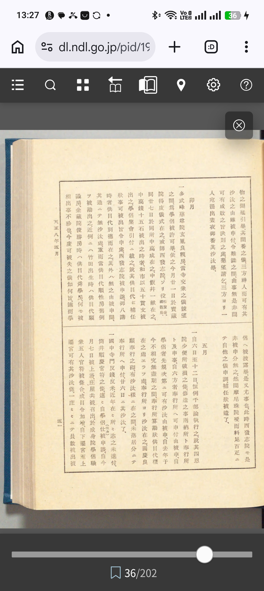
78
大乗院寺社雑事記 第8巻所収の文明十八年四月記述。泰俊發志院の公事無爲、福寺田地奉行・負所知行・御油沙汰を示す院家活動史料。
大乗院寺社雑事記 第8巻 尋尊大僧正記. 10-188(自長禄2年12月至永正元年4月)（437項、国会図書館デジタルコレクション有り、著者辻善之助 編請求記号554-213、国会図書館のページへ）より引用→文明十八年四月
一泰俊發志院公事無爲云々、證判事泰弘申入之間加之福寺事井寺内・寺外田地奉行事へ、泰俊一期可奉行云々、惣在々所々負所へ、發志院可知行云々、仲人判形越智・山田・明王院・妙德院無爲珍重者也、御油事人自發志院可沙汰之仰了福寺二付事也、一斗也、近來五升進之不其意.
一神南院御油五升興憲律師進上之當月分也,月末可沙汰事也、
79
多聞院日記 第5巻所収の天文二年八月記述。瓦釘盜人糺問、一切經納所相論落居で奥発志院の御遠慮・半分仰付・納所得分・補任料の沙汰を示す院家権能史料。
天文二年
多聞院日記 第5巻（200項、国会図書館デジタルコレクション有り、著者英俊 著 [他]請求記号210.48-E38t-Tk、次国会図書館のページへ）より引用→
天分二年八月日
一八月十六日夜寺內塔婆瓦之釘拔躰東向五郎云躰鍛治、自惠心院爲調法彼惡行砌追廻搦取、同十七日二學侶集會相催被出了、懇被賀、則搦取衆之中へ勸賞五百疋被宛行了、
一瓦釘盜人之事、年來意懸之處如此成來被搦合出之条、爲外樣可被糺問之處、既於扶院面、申合內糺問之處悉白狀、大佛二月堂瓦釘其外東金堂花皿・長床幕以下金堂高檻金物廻廊室堂塔釘悉爲一身盜取之由白狀云、明日十七日暇之事如先規可被出大垣、可被廻之由衆中へ
一切經納所性恩房擬講与宗真房相論不一之間、學侶・官符順興法印申合、折中条、事、
一以御遠慮之儀、奧發志院掌善院兩所へ半分宛被仰付者可爲祝着之事
一從只今半分之儀者、掌善院〈可被仰定之事
一半分之儀當年中之事者、爲學侶御預、國本へ御狀以下可被遣之事
一社頭着到之事#算勘以下當年中者學侶而可有御沙汰之事
一掌善院方算勘事、學侶而可被仰合候哉、可爲御集議次第事
一納所得分儀、半分者從當年奧發志院〈可被遣事
一諸出以下補任料之儀者、奧發志院与掌善院半分宛可有御沙汰之事
以上七ヶ条
一同六日一切經納所相論落居、吳綿納所得分五百廿文目定云々、代以一把別六百文宛、合三貫百十四文去春比爲職中現綿被支配、被殘置之間則兩納所半分宛被配當了壹貫五百十五文宛被遣了、
一堀江石見守音信之返報現綿一把、是モ半分兩納所へ注文相認以定使被遣了於供目代坊會合之砌如此沙汰也、一切經方引付二巨細被注置了、
一十四日清淨光院御忌日一乗院ニテ執行無之、
80
大和志料 中巻所収の至德四年（1387年）三月沽却水田地作文書。松若丸の私領を発志院順堯御房へ賣渡、作主職の永代譲渡を示す経済強化事例。他の沽却・賣渡文書も発志院関連。
大和志料 中巻 改訂（285項、国会図書館デジタルコレクション有り、出版年月日1944請求記号291.65-N636y-(t)、国会図書館のページへ
）より引用→
沽却 水田地作之事
合壹段者 地子壹石 宇東之前案燈之井尻上切在之在大和國山邊郡白石庄內有之
限四至
右件之水田地作共者松若丸重代相傳之私領也然者要用直米五石十合ニカキリテ加地子反米共ニッケテ永代多田之如一房方へ賣渡事實正也但五斗一石ッ、ノ地子ヲ可進上候若懈怠、、何時三テモ此作ヲ 離タレ可」申候向後更二他妨アルマシク候仍爲後日、證文如件。
至德四年丁卯三月十四日 白石東松若丸 内口方・・・ 請人白石西室…………………………花押
賣渡 東山內針ヶ別庄水間料足事
合壹貫贰百文者
右福住重代相傳之爲私領公方所役執沙汰申者也雖然依、有要用,相當錢伍貫文限永代奉」賣渡之發志院順堯御房事明白也於向後更附子々孫々不可』有違亂煩候拾ヶ年ノ內本錢買返申候者自、元不可」有子細”候也馳過契約之年季候者可流申上,者不可及仍爲後日、代支證沾
沽却水田作主職事
合四段者 加地子
在大和國山邊都南殿庄
四至一段二町田
一反
一反瀧ヶ本ノ下り
一反
萬難公事等者下作之沙汰也
右件水田作主職者南殿甲岳之九郎先祖相傳之私領也多年知行之間更無他妨而依、有要用限直米六石山內天神講方奉沽却」事實正也若此作主違亂妨并未進懈怠□□□時者同名之内ヲヲミトノ中切一反ノ作リヲ質物二入是ニ於テ違□□□□本米返申候へシ但當年ョリ八年九年十年目二テ此三ヶ年ノ中ニ本米ヲモテ□返申候若此兩三年ヲスキ候、無別流又奉」流候へ夕依而如件應安二年三月八日 南殿甲岳,九郎
ユッリワタス 作主職事
合壹段者
在大和國山邊郡白石庄内大坪/大道ノ西ノウラ
四至限
右件田者辰二郎方ョリ與一カイトリテ候ヘトモ子細アルニョテ米伍斗十合間辰二郎カウリ交アインヘラ此作主職ヲ多田殿へ永代ユッリワタス去出之狀如件
康曆元年紀九月 白石庄,與一花押
81
大乗院寺社雑事記 第11巻所収の明応五年（1496年）十月記述。奥発志院堂での秀尊円寂、六方衆の発心院賓事・莱山間沙汰、慈恩院からの瓜到來を示す常住・行政・物資流通の院家活動史料。
大乗院寺社雑事記 第11巻（71項、国会図書館デジタルコレクション有り、請求記号210.46-D18-T、国会図書館へのページへ）より引用→
明応五年十月
五日
一講問一座行之弥勒法樂、本經等、
一妙花寺關白正忌日也、
一去月分月次連歌頭予、
一反錢未進方所々返事少々到來、得其意云々、
一昨日山城守護代遊佐弥六引退了、當之勢共罷出、事次第不及覺悟者也,
一三乃下向者有之書札共事傳之、
一一乘院殿御使在之堯懃研學下行物事、
六日夜雨下、
一長岡大臣御忌日也、
一夜前中院邊小屋燒亡、
一秀尊得業昨日円寂、五十八云々、於奧發志院堂也云々、
一山城上郡守護代井上江州罷入云々國人問答云々、次兵庫鄉年貢事、一切經集會及其沙汰云々、巨細趣令披露、可得其意之由仰了、
一六方衆濟々於發心院賓事在之自古市申付之,今度莱山間事等、条々無爲喜悅旨事云々、
瓜到來
十合 室 十合 古市
日次六月十七日ニ召進分, 五合 慈恩院
82
大和人名鑑所収の大正元年多額納税者区分。添上郡治道村発志院の橋本芳太郎・越智太兵衛・矢追徳三郎を所得税高額納税者として挙げ、大正十一年の橋本芳太郎営業税を示す明治大正期経済史料。明治期後半〜大正期の高額納税者
奈良県資産家一覧表（91項、出版年月日大正12請求記号特113-729、国会図書館へ）より→多額納税者の区分→所得税参拾五園以上納税者之部（本年度）→添上郡治道村11名（発志院3名）、添上郡治道村発志院橋本芳太郎、越智太兵衛、矢追徳三郎」の3名のみ、、横田村は2名、白土は3名、番篠は3名。
大正11年の奈良県資産家一覧表より→添上郡発志院村越智太兵衛（農業専業）の所得税1188円、添上郡発志院村村橋本芳太郎（農業兼務商業）の営業税（高田口）136円
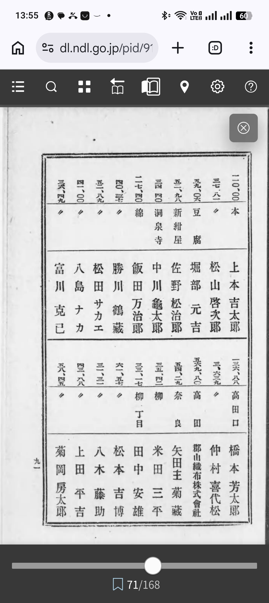
83
大日本史料 第６編之８所収の法隆寺別當僧正能寬寂の記述。興福寺元亨三年補任小別當定範堯禪房得業西方院、建武二年補任小別當真操宗願房得業発志院、康永三年別當能寬他界、興福寺權別當僧正能寬を示す寺社人事史料。
大日本史料 第６編之８（115項、国会図書館デジタルコレクション有り、著者
東京大学史料編纂所 編請求記号GB22-7、国会図書館のページへ）より引用→
官歴二十七日、法隆寺別當僧正能寬寂ス、
〔法隆寺別當次第〕能寬僧都、治四年、興福寺元亨三年癸亥補任小別當定範堯禪房得業西方院同七月十四日拜堂、別當御拜堂淨圓房得業之沙汰、而直下行畢、非公文沙汰居拜堂也、
能寛僧正 治九年興福寺發志院建武二年乙亥五月十三日先使下向印鑑同六月十四日被渡之公文覺延寺主小別當真操宗願房得業同七月十四日拜堂居拜堂生料式、御拜堂依爲御再任、半役居拜堂生料、康永三年甲申二月廿七日、別當能寬御他界畢、
興福寺權別當
〔興福寺三綱補任)權當權別僧正能寬
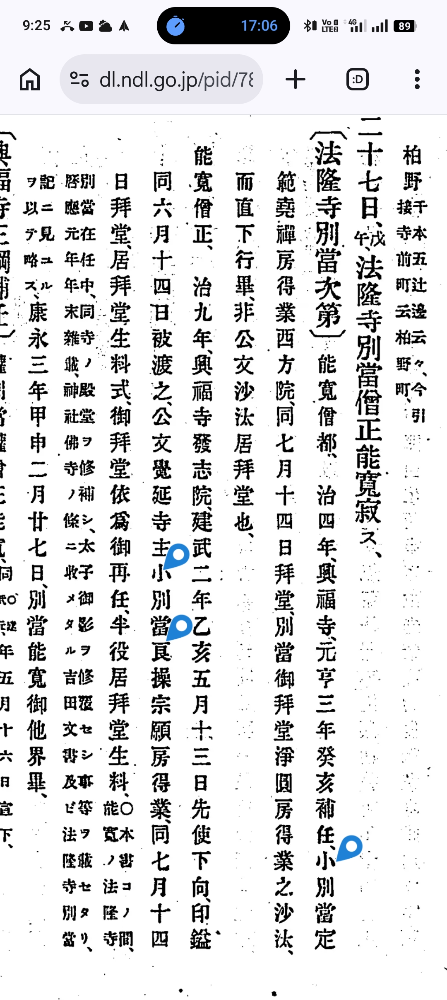
84
多聞院日記 第1巻所収の元龜三年閏正月・三月記述。発心院へ参仕・古迹談義・節供之礼・追善問講（母儀卅三年）・仁王經出仕・社参を示し、西發志院へ柳本六方之狀、西屋本番参籠での發心院関連の讀經・談義を記す寺社日常史料。
多聞院日記 第1巻(巻1至11)（375項、国会図書館デジタルコレクション有り、出版年月日昭和10請求記号640-324、国会図書館のページへ
）より引用→天文十五年十月
一名田毛見在之、顯春上了、
一夕部勝舜房堅義丁聞了、精義發心院、大悲闡提篇目如形之儀也、楞伽法樞要ノ尺ノ料簡そと在之、
心五百卷、
五日、天氣快然、東室堯香房出立所へ參了、樽一か遣了、
一古市足輕衆寄テ茶や共燒、
一左介方へ綿一把遣、且代三十文來了、湯入了、
心三百卷、
六日、福生院出立所東室へ出了、夕部長柄殿田舍へ被下了
心三百卅卷,
七日、妙音院井源五郎賴支在之、懸候、太郎山へ遣
心三百五十卷、
八日、塩斷了、口院參處ニ、明恵ノ御筆跡トテ大明神御名三國異也、發心院へ礼ニ出了、明日招提講頭役常如院懃仕之間、柿卅遣了、
二日、石丸出了、一日降雨、八万四千本廻地藏懃行了、八幡ノ神事明日夜宮參各在之云、
三日、虛空藏咒始了、大佛殿へ參了、龍雲院發心院へ參了、來五日講問談義也、抄物一帖寫之、三日月待了、講問十一座、六ノ過ニヤカテ御入也、
四日、湯へ入了、自龍花院方被燒之社參了、天野經五帙讀了太郎山へ遣了、龍雲院發心院談義ニ多了、自寶光院文珠院ノ栗歌、被送之了、
一初夜ノ時分ニ上小路在家燒失了、仰天了,
五日、發心院母儀明日卅三年也仍爲追善問講不定講開被修之、講師長春房、問者琳淨房得業、人數廿五、六人、
一法花會加行者モ私ノ講問ニモ召請之、堅義題ナレハ講問役懃之也、
太郎乙木へ譴責了、先以上了、衛門三郎上了、
六日、於東室群參論有之、出了、今日庚申也、
一蓮教法師爲見舞上洛、飯酒了、
七日、論へ出了、大雨下了、社參シテ經一帙轉讀了、西屋ニテ同六曳、
八日、論へ於中座出仕了、滿時塩斷了、一ノ坂藤菊方少袖仕合出來了、合二貫五百文程入了、柳本へノ六方ノ狀西發志院ニ謎了行學房舍利所望之間三粒出了、
九日、湯へ入了、節供如佳例在之、日中後吉祥院へ參仕、中旬會合之談義了、發心院へ節供之礼出礼出了、夕部三藏院へ參籠留守之間行語了、顯春田舎へ吉野へノ少袖下了、
十日、慈恩院·惠心院當坊へ被見廻了、弟子一意抄書給了、發心院へ參仕了、顯春上了、
十一日、西屋本番參籠了、讀專乘房律師、丁衆行懃房・予、世事在之、會合三ツアリ、宮廻了、一切經へ本坊直參了、
十二日、一切經長延房之所參懃了、一日雨下了、
十三日、同所へ參觀了、降雨了、坊へ出了、新二郎ョリ松露一盆來了、發心院へ參了、
十四日、發心院へ之所一切經參懃了、持寶院·常如院・窪院・淨ルリ院坊へ被見廻了酒以下在之、
一六方集會有之間出仕了、柳本以下之儀祝著了
十五日、明日會合引上今日在之、一切經出了、
十六日、同所へ出仕了、讀師講申了、
十七日、同所へ出了、結願有之、導師長堯房擬講、唄宮內卿擬講、散花春乘房、
十八日、報恩講知足坊ニテ春恩房依處出仕了、
一太郎丸田舍へ下了、月待了、卅三座懃了,
一內山尺迦院來了、雜帋三束持了、
十九日、寶光院四季講へ出了、來季題定通無差、講師春乘房也、性圓房始而出仕、
一昨日於攝州有大合戰、左右ニ人數巨多討死云と
廿日、魔界廻向等在之社參了、愛染咒十万返勸唱滿了、
廿一日、退出了、琳禪房春日講へ出了、來月題非自性善、來月地藏講、約入佛法、一日雨下了、
一昨日廿日之曉、森本藤二郎・同中務同子喜三林觀以下爲沙汰、藤勝房同道シテ何方となく落行了、言悟道斷曲事不可說之也、依之昨夕及晚柳本豐田以下曖ニテ、殘ノ衆・高柳殿与力衆各々・田中兄弟以下人數五百計ニテ柳本へ退城了、無念被成下不及言慮者也、始末如何可成行共不知、天運盡限何依愛、可任存、
一順昭も近般以外冠落もかさ之煩歟云と、
廿二日、田舎へ下了、藤勝殿、吉野菊屋被落付了、十市殿諸毛見沙汰サセ了、
廿三日、釜口迄歸了、
廿四日、先我等上了、顯春留置了、
一菅原今曉順昭ヨリ人數被遣被燒拂了、明日五、越智多武峯鄉へ被取懸云、人數少、南脇へ打寄云、
廿五日、信讀ノ仁王講在之、闕請始テ來ル間參懃了、同時退散以外嚴儀也、文珠咒勸進以下合十來廿六日自常如院問講不定觸了、題講衆廿五人、慈父卅三年也云と、
十四日、朗詠讀始了、宗乘房汁被設了、發心院古迹談義付了、
十五日、月數寄如例、大隨求クラニノ逆修於福聚院在之、出了、經十七把頓寫了、一日深雨、
十六日、經羅漢供如例、古迹談義付了、
一自明舜房補忘抄八帖被借上了、
一同學抄修補仕始了、
十七日、古迹談義參了、第七卷興基抄書始了、心經五百廿卷、都合也、十八日、當坊五師參賀沙汰了、日記二委細注之、一月待了、講問卅三座訖、源三郎上候間、成就院へ柳本庄入地可落之間申屆了、
一多聞講沙汰之,
一科文聞書書始了、
十九日、佛地院衆井三藏院爲五師祝音樽被持來了
廿日、古迹丁聞了、略同學抄少書寫了、
廿一日、社參了、寺內參了、雖參發心院、談義無之、
一彼岸二入了、持齋了、專恩房舍利所望之間、三粒遣了、
一昨日廿日 竹內城工十市衆取懸仕損了、少南平三井坂ノ市ノ介、今一人名字シレス、三人打死了云と、
一筒井順昭今日龍田迄自身出陳云々、河州氏綱出張シテ細川家卜及合戰、遊座方引級之間、爲氏綱合力也云、奈良中爲防禦超昇寺・山城衆少被入了、
一去五月十三日盛眼十七年二相當間、櫟屋ニ在申地藏頓寫了、表法談之處、今日出來了、祝著無限者也、
一略同學抄書寫了、

85
多聞院日記 第1巻所収の元龜三年閏正月・三月記述。発心院へ参仕・古迹談義・節供之礼・追善問講（母儀卅三年）・仁王經出仕・社参を示し、西發志院へ柳本六方之狀、西屋本番参籠での發心院関連の讀經・談義を記す寺社日常史料。
多聞院日記 第3巻（35項、国会図書館デジタルコレクション有り、著者英俊 著 [他]請求記号210.48-E38t-Tk、国会図書館へ）より引用→
天正六年十一月
十八日、攝末歸本談義了、燒餅一籠蓮坊ョリ來、吉村正左衛門卅疋持來了、
一御供米藏付二一石五斗程上之、
十九日、吉正へマンチウ十・大根遣之、仙學房明日下了、談義今日迄也、馬廿日今曉夢二、社頭但馬屋ノアタリニテ、夜子タル上クツレカ、ル、既ニ死ト思ヒシニクルシカラス、見レハ大ノ蛇ヘンミノ様ナルカ先へ行ハ、アトヨリクロクアヲキ長一丈余アルカヲウテュク、大木へ上ルヲ見レへ足アリ、ソハナル物二蛇ノ足ノ爪ヲ見レへ利生也トテイタ、ク、見二爪大キニアリト見テ夢覺了、
廿一日、社參了、二条殿御煩、咬止~~、西ハシノ院觀禪院見廻了、德政口遊在之、
廿二日、雨下了、一乗院殿ヨリヒワタへ被申入云
廿三日、ハシノ坊雇テ新五郎小袖仕立了、升、糸クキモノチンマテ合三石一斗ノ入目也、
一近日奇破ノ口遊在之、沈思~と、
廿四日、祭礼赤飯ノ用米ッキ了、小豆ソロヱ釜トヌリ用意了、卵、
廿五日、先夜夢ニ兵庫ノ南ト思、又、大安寺ノ當歟ニテ、大池西東北へ、白蓮花アマタ既ニ開テ、散カ、リタルト、今ツホメル靑ト數多マシリタルヲ見、蹺起テ見レハ白ク雪下了、一日雨下、入夜マテ不止、
一赤飯三石觀禪院へ大ヨリ直被遣之、二石西ハシノキンヘノ内、且一石是ヨリ今日遣之、大會方報答也、觀禪院へ笛/笠加增二被遣之、千手院仕立也、合二石五斗程入、ソケヰ官人ノ所、風流一段見事也、色、機遣之處、心安こと、西ハシノキンヘハ二百疋ヒ夕加増遣之、コレヨリ遣之、
一觀禪院へ新五郎上下著遣之、予供目代ノ時ノ下司ヨリ田ロ事申上了、當坊平茸四ク、リ取テ
一亥ノ子友光ヨリ來、平茸少在之、
一星懃行先始之、相讚不審難副、如此習得未定、
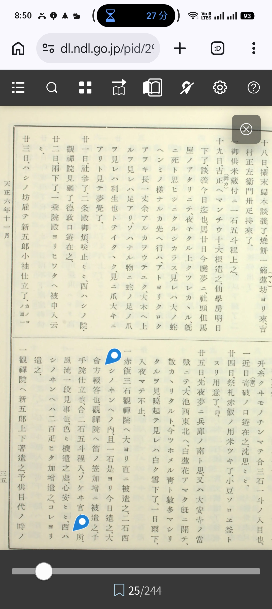
86
多聞院日記 第3巻所収の天正八年（1580年）八月記述。ハシノキン（西発志院／発志院）の小兒所望に対し致誠詞書を遣し、社家向井への礼、青龍院逆修、筒順慶腹切の沙汰、松井二位死去、筒井祈禱敗北など、発志院（ハシノキン）の在地実務・法事・情報伝達を示す寺社日常記録。
多聞院日記 第3巻（118項、国会図書館デジタルコレクション有り、著者英俊 著 [他]請求記号210.48-E38t-Tk、国会図書館へ）より引用→
天正八年八月
廿三日、過夜大雨下、夜明頓テ止了、坊へ出ラカン供ノ講問修之、堯舜、懃之、大門へ參了、藥屋爲礼兩種一荷持出、次三宗二へ礼出了、
一日中ノ過二筒順慶京ニテ腹切候由沙汰、ナラ中上下振動了、剩惣國同時二及沙汰云~、大天魔ノ所爲也、ケシカラヌ事可出來敷、去廿日ノ夜ハ京ヨリ人數下トテ、雜說ケニシキ、非一ノ广障、心細事也、
廿四日、シノキンノ小兒所望之間、致誠,詞書遣之、
一社家向井ヲコリ十六包遣處、八フクニテ落トテノコリ被返了、
一於青龍院扶院方逆修在之、良延、予頓寫在之、三ノ内二八八一八愚書遣之、扱夢、、懸而身上、
一藥屋宗芳昨日樽ノ礼トテ、沈香三兩持來、還痛入了、
一松井二位今日死去了、六十四才云々、一日ハソラシニ、今日ハ必定也、身上こと
廿五日十後ヨリ麺廿把被下了、筒順京ニテ一段仕合好由被申了、マコ介ヨリクルミ餅一重來了、夕部因明屋へ可來之由被申間出之處濟殿、思出了、讀師南井坊、丁衆寶藏院ヒハタヤ・舜賢:春明、、
廿六日、夜中ヨリ大雨下不止、松二葬内人可遣之處、大雨之間止了、筒井祈禱敗、紅中神人祓在之、尤
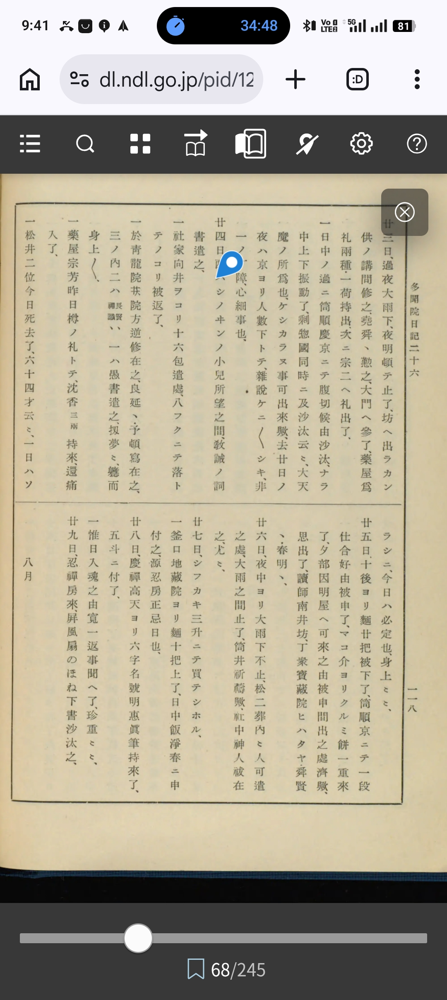
87
西ハシノヰン講師記録(金蔵院四季講)
天正八年(1580)九月十七日、金蔵院の四季講という重要法会において、「西ハシノヰン(西橋之院)」が講師を務めた記録です。
重要な点:
講師という高位の役割: 講師は仏教教義を講説する職務で、高度な学識が求められます。発志院がこの役割を担えたことは、単なる末寺ではなく学問的にも重要な院家であったことを示します。
表記の揺れ: 「西ハシノヰン」という表記が使用され、これまでの「ハシノキン」「橋之院」「発志院」などの表記揺れを確認できます。
興隆祈禱との関連: この時期は「今度ノ興隆祈禱第一也」と記されており、興福寺の重要な祈禱期間中の法会であったことがわかります。
一乗院・大乗院との関係: 同時期に一乗院大般若談義も行われており、発志院が両院の法会体制の中で重要な位置を占めていたことを示唆します。
この史料により、発志院が16世紀後半においても興福寺の重要法会で中心的役割を果たす格式ある院家であったことが証明されます。
多聞院日記 第3巻（125項、国会図書館デジタルコレクション有り、著者英俊 著 [他]請求記号210.48-E38t-Tk、国会図書館へ）より引用→
天正八年九月
十四日、談義了、海如上洛了、
十五日、大乗院祈禱在之、不出、屋二一宿了、
十六日、談義了、科文廿卷新調伊与二申付、方々へ買了、代一卷二八升ツ、也、今度ノ興隆祈禱第一也、
十七日、金藏院四季講師沙汰之來題第二定出苦、講師西ハシノヰン、
一上コン又預ヶ物來了、
十八日、曉夢ニ、大鳥井ノ前ヲ坊へ歸レハ、ヌリコシニノリテ、四人シテカキテ、扶院ノロへ入了、跡ョリ行へ、東ノクラノ木ノ門ニシテ、瓦ツシヌリテキレキニシテアリ、入テョリ明星院ノ門ノアタリニテ愚身ノ裝束ノ念珠箱アリ、何トシテアルソ、不審ニテ拾テ持處三、水精ノス、ノ玉、イカホトモアルヲ拾集テ、右ノ袂二入、ソハニ小性アリ、舜學房ノ者也只今コシニテ歸リシへ、吉祥院カト尋レハ常如院也、コヨヰ屋ニテ死ナレ申、兼テ腹痛キヨシマテニテ、何トナク死ナレ申ヲ、タ、イマ坊へトリテ歸ト申ト慥二見テ夢覺レハ、七ノ鐘ナル、アサマシクテアマリ慥ナレハ、夢違シテ如此書置之、
一一乘院大般若談義、取亂間不參、長賢房、參了、
一從大門様ツホノロ被切トテ、無上一器被下了、
一從大門様ツホノロ被切トテ、無上一器被下了、忝事也、今夕ョリ社頭二二夜三日御參籠ノ由也、談義在之、
十九日談義沙汰之專千代神事トテ下了、
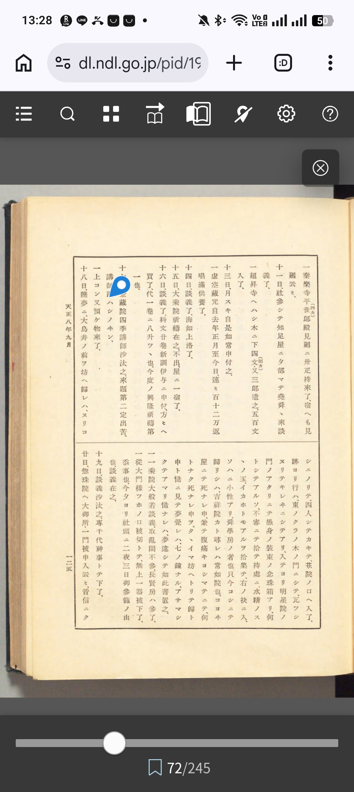
88
一乗院文書(抄)所収の良円・實信関連記述。 一乗院々主良円の菩提山御房譲補と院家領無管領、承安三年（1173年）正月十四日早世を記し、發心院御房實信（普賢寺殿御息基通）の御乳母亭入室、猪熊殿（左大臣）相具・法性寺殿御筆引出物、井山御房（信円）弟子関係を詳述。御下向時一乗院西御門下車での鹿一頭参向・四足前跪・東方歩行の神明加護奇跡、社頭七日祈請による下向決定を示す門跡院家継承史料。
一乗院文書(抄) : 京都大学国史研究室蔵（12項、国会図書館デジタルコレクション有り、請求記号GB176-78出版年月日[1981]、国会図書館へ）より引用→
良円 一乗院々主事、菩提山御房御存生之時雖令譲補給、院家領等悉無御管領之儀、承安三年正月十四日御早世剛作二了、令先菩提山御房給者也
實信 奉号発心院御房 普賢寺殿御息(基通)
於御乳母大納言典侍亭、有御入室之儀、猪熊殿于時左大臣令奉相具御引出物法性寺殿御筆一巻為井山御房之御計令成九条殿僧正御房御弟子給了
抑御下向于南都入御一乗院之時、於西御門御下車漸令向東方給之時、鹿一頭参向至于一乗院四足前、立帰跪、令入四足給之後、鹿向東方歩是偏神明御加護之表相也、衆人拭感淚了云々、凡御下向之間事自普賢寺殿再三雖令申井山（信円）御房給、平以御辞退、自胎内之時若為男子可進大明神之由、慇懃之所願忽令相違者、可背年来之御本意之由、頻被申之間、為被伺神慮於社頭七ヶ日御祈請令取探給之処、可有御下向之由也、但於一乗院者
89
多聞院日記 第3巻所収の天正八年（1580年）十二月記述。 西ハシノキン（西発志院）の卅五口講問で予（多聞院長實）が講師、陽教が問者、フセ六斗・出仕中帝一束・ソトハ一本、三人へ廿疋を遣すなど、発志院（ハシノキン）の法会・講問運営を詳述。大乘院殿御上洛付の経済沙汰、奉行借米・備前反錢請取、定舜ラカン供、顯春七廻ラカン供（賢良房・南井坊・窪院圓明院など）の供養を示す寺社日常記録。
多聞院日記 第3巻（134項、国会図書館デジタルコレクション有り、著者英俊 著 [他]請求記号210.48-E38t-Tk、国会図書館へ）より引用→
天正八年十二月
十七日、悅酒へ出了、十後京へ上了、寬舜越前上了、
一近日二安土可被成之由、ユヱン・トンス以下了、
一仙學房上、荒神表補誂了、代百疋且請取了、
十八日、酌翫二出了、明日大乘院殿御上洛付、ヒタ四貫文井トンス一タン代三貫四百文ナヘヤ、ユエン五十丁代一石六斗、ハクヤへ代一斗遣之、金ハク一枚ニテ七丁ツ、タム、引替以上此分也、
十九日、西ハシノキン卅五口講問、約理說一、講予、問陽教、、フセ六斗、出仕中帝一束、ソトハ一本、三人へ廿疋ツ、遣之、
廿日、十常へ可見廻用意之處、伊源上間延引、
一今廃ヨリ大門安土へ御越了、隱密之屆爲也、
廿一日、雨下、不能社參、内々十常へ可見廻之通用意ノ處、雨下間延了、幸伊源左上間、夕飯中付之、心閑遊覽了、
一奉行借米付、備前反錢請取、广尼調ニテ來了、一一三四瓶一盆遣之、
為一亥ノ日、咒四十四万二千三百返了、
廿二日、定舜、十六ラカン出來了、代六斗遣之、ヒ衛上了、小カンニ入、
廿三日、ラカン供了、十分一金ノ事、スワヰ与二郎二申付之、
一仙學房上了、識善、來、遣相證性顯範談義始之、
一長善房南へ下間、ミソレ一樽遣之、
一於十三重群參論在之、出了、
顯春七廻ノ間ラカン供了、賢良房・尊教院・南井坊·窪院圓明院·金勝院長印、蓮成院·常如院・堯舜、勸修坊·專實、、淨勝、、以上來了、經五人長學·善圓·深宗、行眞・聖盛以上、寬舜・三甫·市兵請用了、
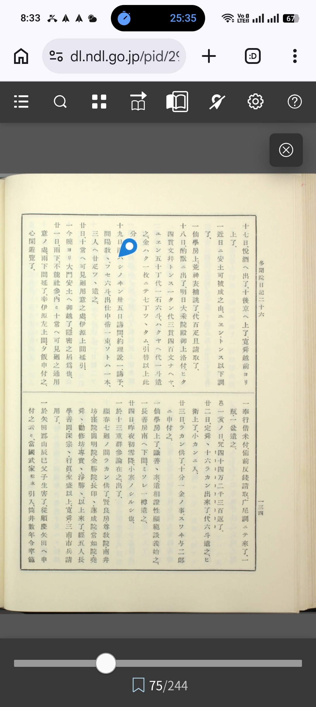
90
多聞院日記 第3巻所収の天正九年（1581年）二月記述。 西ハシノキン（西発志院）の百ヶ日供養で講師禪舜、問者予（多聞院長實）、題眞如無爲假實、捧物六斗、出仕雑帋一束を記し、大雪の中輿出仕を示す発志院（ハシノキン）法会運営史料。他に金藏院講問、阿弥陀院逆修、仁王講、六方十帙転読など寺社日常記録。
多聞院日記 第3巻（146項、国会図書館デジタルコレクション有り、著者英俊 著 [他]請求記号210.48-E38t-Tk、国会図書館へ）より引用→天正九年二月
廿四日、社參了、金藏院講問出了、來題謂起證實、講師願春房、、、
一長賢房母腹煩由申上、老者無心元者也、
一於阿弥陀院逆修坊修正在之、出了、神名帳唄役懃之、餅卅三枚在之、時導師摩尼珠院、大導師續別會妙德院、五師一人未補ノ處、南井坊請定了、大酒在之、末道子ノ坊來、藝能仕、一段見事也廿疋被取了、
一於一坂城州クサチノ八田ヲ殺害、此五六日先ノ事殿、言語、、、曲事也、木津諸百姓チクテンニテ種、悪逆云~、如何可成行哉覽、
一夕部蓮來談義了、
廿五日、咒五千返入了、
一西ハシノキン百ヶ日出、講禪舜、、問者予、題眞如無爲假實、捧物六斗、出仕雜帋一束、從夜中大雪之間輿ニテ出、
一從廿三日至今日恒例仁王講在之、諸方年玉返沙汰之、
廿六日、社參、屋二一日經讀了、一乗院祈禱在之、不出、
一於金堂二方會,經在之、當方第五日目五百內十帙、上十人參、一帙ツ、也、長善出テ一帙轉讀了、六方十帙宛也、本方ョリ始之也、佛灯、方ノ
一﨟ヨリ毎日出之、
一食堂陀ラ尼王在之尊勝ノ曼陀ラ新調云と、
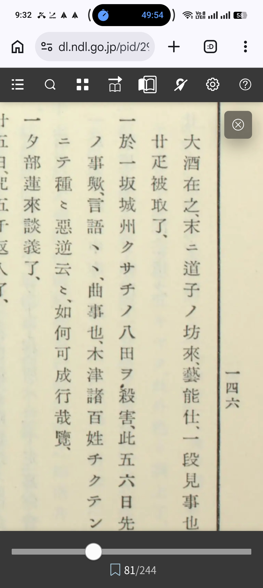
91
一乗院文書(抄) : 京都大学国史研究室蔵（21項、国会図書館デジタルコレクション有り、請求記号GB176-78出版年月日[1981]、国会図書館へ）より引用→
一宝積院家
簀河庄
喜多院領也、元者万雑公事勤之、所当米米貢弁済之、而故大乗院僧正（実尊）御房御伝領之後年貢以下公事被止之、故大僧正（実信）御房御時不可有喜多院領儀之由被申下宣旨了、当時御所、修禅院僧正（実憲）被草創之間内田園被止之、被建堂舎塔婆事、故僧正御房御沙汰也
壺坂（号南法花寺）
庄ヲハ谷ト号ス、一園庄也、所当公事分弁勤之南法花寺内蘿室者壺坂(覚憲)僧正隠居之地也
豊井庄
御年貢
平籠瓜廿荷 持夫別口上
紙立菓子十合
柴野庄
於年貢者一向被寄置蘿室了、但雜昏
少々院家へ進之、壺坂僧正忌日布施料也
玉華院領（元興寺辺在之）
在家輩人夫役勤仕之
院主
信玄 陽信 覚憲（号壺坂僧正） 信憲（号修禅院僧正） 実尊（申大乗院） 実信（申発心院）
一花林院家
橘寺 小路庄
三井服
当院家者永縁僧正之旧跡也、故円長法印
自勝長法眼之手相承之、彼法印為九条殿僧正御房御師範被讓進也、御庄、当時無御領知之儀僧正御房御入滅之刻开山御房御知行之、其後不返付本所彼御方御知行也
92
多聞院日記 第2巻(巻12-巻23)（271項、国会図書館デジタルコレクション有り、著者
英俊 [等著] [他]請求記号640-324、国会図書館へ）より引用→
元亀二年十二月
廿五日
陽敎房へ日中雖有請、取亂間不出、明日ヨリ大般若發願付本尊以下用意、
一サッマヤ申事、孫令他出先延引了、
一晚竹來、如形之儀、無念ここ、
廿六日
於一切經御廊信讀大般若經卷不定發願、刁ノ剋ニ坊ョリ參詣テ始之、於神前五卷讀之、
一同剋ニ長賢房モ發願了、一人シテ八是初也、
一唯識講米夏季分、依路次義通於横田庄廿四日ヨリ今日迄三ヶ日ノ間ニ曳之、予、別義金剛之、則請ニ遣了、
廿七日
下蒻分蜂起在之、堂家ノ二諦坊愛染院一生不免罪科了、亂行ノ故也云こ、
廿八日
荒神社參、陽教房同道了、
廿九日
天氣快然、祝二諸方へ出了、
一瓦屋參籠長賢、、同上荷物入之、以之外造作也、
一成身院へ歲末二炭一荷雖遣之被返口
一佛前餅以下如例年、
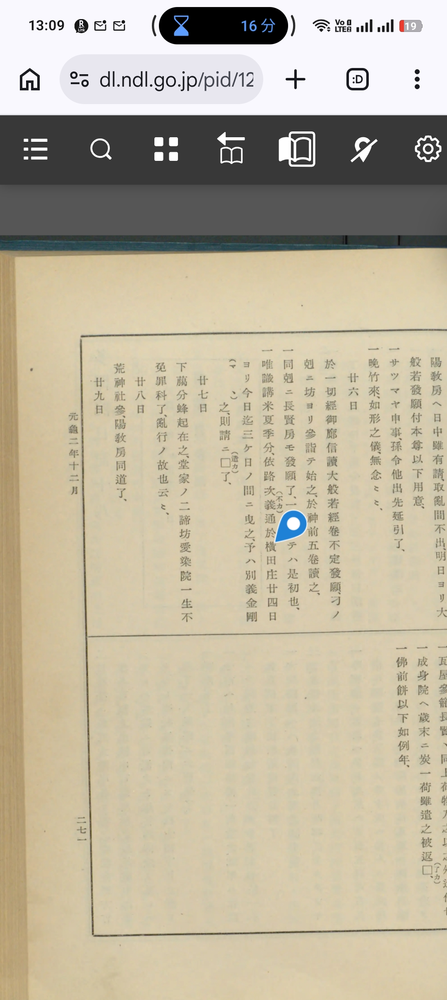
93
多聞院日記 第3巻所収の天正六年（1578年）十一月記述。赤飯三石觀禪院へ、二石西ハシノキン（西発志院）へ大會方報答として遣し、二百疋ヒ夕加増を記す経済交流史料。
多聞院日記 第3巻(巻24-巻31)（35項、国会図書館請求記号640-324、国会図書館へ）より→天正六年十一月
廿五日先夜夢二兵庫ノ南ト思、又、大安寺ノ當歟ニテ、大池西東北へ、白蓮花アマタ旣ニ開テ、散カ、リタルト、今ツホメル靑ト數多マシリタルヲ見、蹺起テ見レハ白ク雪下了、一日雨下、入夜マテ不止、
一赤飯三石觀禪院へ大ヨリ直ニ被遣之、二石西ハシノキンへノ内、且一石是ヨリ今日遣之、大會方報答也、觀禪院へ笛/笠加增二被遣之、千手院仕立也、合二石五斗程入、ソケヰ官人ノ所、風流一段見事也、色、機遣之處、心安ここ、西へシノキンへハ二百疋ヒ夕加増遣之、コレヨリ貴之、
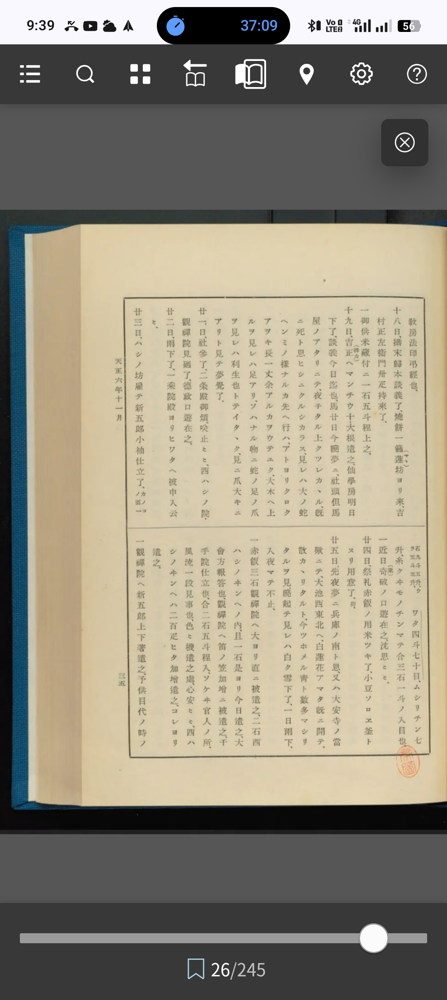
94
多聞院日記 第3巻所収の天正八年（1580年）十月記述。西ハシノキン興尋專賢房死去（六十五才）、葬礼に見送り・流泪、借米催促を示す葬送・経済沙汰。
多聞院日記 第3巻(巻24-巻31)（124項、国会図書館請求記号640-324、国会図書館へ）より引用→
天正八年十月
十六日、昨夜西ハシノキン興尋專賢房價都死去了、六十五才、身之上アリ、
一ヒセン二郎太へ草リ一足五升遣了
一ワリ酒八升入了、
十七日、西ハシノキン葬礼二長善房代テ出了、長賢、自分二出了、ツ、ラヲ山へ上テ見送、數年知音之間見送、流泪了、身ノ上ア、、
一神人織部楊本大市へ借米催促下了、
十八日、蓮成院へ仁王講二出、門跡へ參了、伊勢ョリ龍門へ給人入間、御公用難成之由使札來了、リ龍門へ給人入間、御公用難成之由使札來了、
一月懃行三座、心卅三卷、自我偈卅頌三ツ、、十一
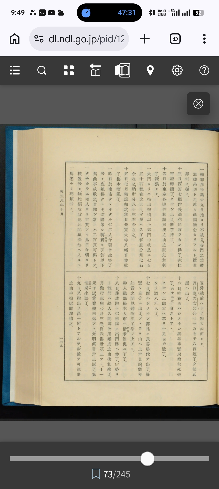
95
多聞院日記 第3巻所収の天正七年（1579年）三月記述。彼岸中日ラカン供、西ハシノキン經五ワの弔經（禪識書之、私書之、春聖房）を記す法会記録。
多聞院日記 第3巻(巻24-巻31)（48項、国会図書館請求記号640-324、国会図書館へ）より引用→
天正七年三月
廿三日、彼岸中日ラカン供了、ヤト雨人辻源左夫婦請了、番匠平二郎來、東ノ部屋ノ下ケタ申付之、西ハシノキン經五ワ在之、一ワ禪識、書之、四ワ私書之、春聖房弔經也、マノアタリく、
廿四日、於常光院、師匠淨願房得業卅三年作善講予、問明禪房、客南井坊、題、反化長時、淨公捧物六斗井十疋來了、新藥師へ參了、梅木神人家ヲ立了、北坊へ立寄了、ソレヨリ大門へ參了、昨今平二郎番匠來、東ノヘヤノ下ケタ以下申付了、
一八万四千本逆修於寶藏院在之不出、出米四升一合出了、
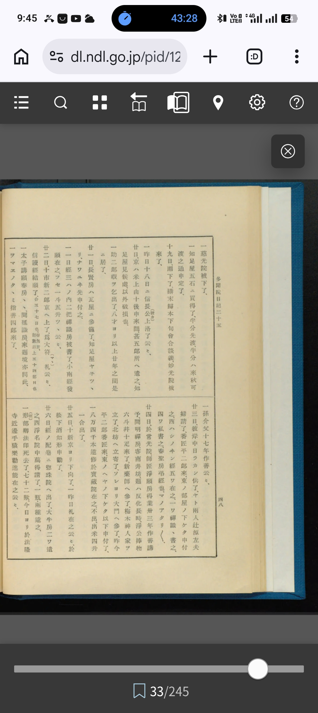
96
多聞院日記 第2巻所収の元龜三年（1572年）閏正月記述。西ハシノキン仁王經出仕、雑帋一束持参、報恩講の講明王院・問民部卿を挙げ、発心院（西ハシノキン）の法会・供養運営を示す寺社日常記録。
多聞院日記 第2巻(巻12-巻23)（274項、国会図書館デジタルコレクション有り、出版年月日昭10至14請求記号640-324国会図書館へ）より引用→
元龜三年閏正月
十八日、勸修坊大般若經出了、導師沙汰之、鉢肴用意テ遣之圓城坊、雖被呼不出、一釜口多聞院ヨリ礼ニ雑帋二東持人上了、ルスニテ返礼無之、
一釜口多聞院ヨリ礼ニ雑帋二東持人上了、ルスニテ返礼無之、
一月明奉拜之、初夜三御出也、懃行如常、
十九日、西ハシノキン仁王經出了、雜帋一束持了、觀禪院慈尊院雖被呼先約在之間不出、
一藉大へ一貫三百文ニシテヲモテーッ遣之、
一マコ藤市刀指了、一荷・兩種來、
廿日、妙院破鏡如例、上四升ッツ、、中二升ッ、、長賢房顯春貴之、
八日、西淨名院卅五日講問若論顯理、講了頭律師、問英印擬講、一瓶遣之、
一惠心院カサ付藥以下遣之、
一サッマヤ禪門見廻二來了、
一吉ミソ一石五斗ツキ入了、シヲハカリカエ、マ
メー斗ニ米一石、
塩斷一七日沙汰之、今日迄也、
九日、西ハシノキンニ報恩講在之、講明王院、間民部卿、、、由不放逸、來題必ヶ尋伺、
一源五郎上了、彼是算用、
一去五日夜、亥剋ノ過二乾西ヨリ三方笠ホトナル光物東辰巳へ飛フ、大風アラレフリ、以之外ナリ了ト、大凶事、如何
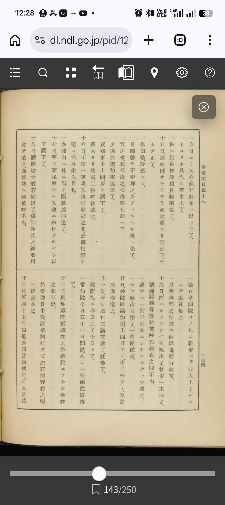
ページトップへ戻る
次のページへ
利用規約
最終更新日:2026年2月12日
本ウェブサイト（https://fujiwara-fact.org/、以下「当サイト」）の利用に際しては、以下の利用規約（以下「本規約」）に同意いただく必要があります。
第1条（適用範囲)
本規約は、当サイトの利用に関する一切の関係に適用されます。利用者は当サイトを利用することにより、本規約に同意したものとみなされます。
第2条（著作権および知的財産権）
- 当サイトに掲載されている文章、画像、図表、PDFファイル等のコンテンツ（以下「コンテンツ」）の著作権は、橋本家または正当な権利者に帰属します。
- コンテンツの無断転載、複製、改変、再配布を禁じます。
- 学術研究、教育目的での引用は、著作権法の範囲内で認められますが、出典を明記する必要があります。
第3条（免責事項）
- 当サイトは、掲載情報の正確性、完全性、有用性について、可能な限り正確な情報提供に努めますが、その保証はいたしません。
- 当サイトの利用により生じた損害について、橋本家は一切の責任を負いません。
- 当サイトからリンクされた外部サイトの内容については、橋本家は責任を負いません。
第4条（史料の取扱いと引用）
- 当サイトに掲載された史料、文献、系譜情報は、学術研究および歴史的事実の検証を目的としています。
- 国会図書館、奈良県立図書情報館等の公的機関所蔵資料への言及は、該当機関のデジタルコレクション利用規約に従うものとします。
第5条（禁止事項）
利用者は以下の行為を行ってはなりません：
- 当サイトのコンテンツを商業目的で無断使用すること
- 当サイトの内容を歪曲、改変して引用すること
- 当サイトの運営を妨害する行為
- 法令または公序良俗に反する行為
- 他者の権利を侵害する行為
第6条（リンク）
当サイトへのリンクは原則として自由ですが、以下の場合はリンクを禁止します：
- 当サイトの内容を誤解させる態様でのリンク
- フレーム内での表示など、当サイトのコンテンツであることが不明確となるリンク
- 公序良俗に反するサイトからのリンク
第7条（個人情報の取扱い）
当サイトは、お問い合わせ等で取得した個人情報を、お問い合わせへの対応以外の目的で使用いたしません。
第8条（準拠法および管轄裁判所）
- 本規約の準拠法は日本法とします。
- 当サイトに関する紛争については、橋本家の所在地を管轄する裁判所を専属的合意管轄裁判所とします。
第9条（規約の変更）
橋本家は、必要に応じて本規約を変更することができます。変更後の規約は、当サイト上に掲載された時点で効力を生じるものとします。
お問い合わせ先
info@fujiwara-fact.org
橋本家